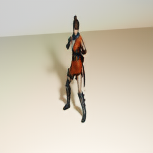
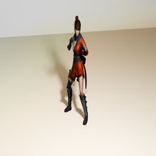
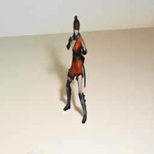
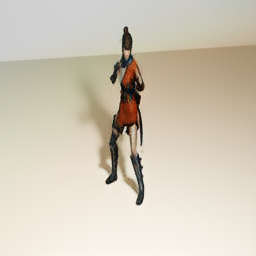
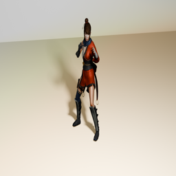
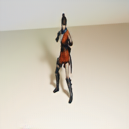

import torch
print(torch.cuda.is_available())
print(torch.cuda.get_device_name(0))True
NVIDIA GeForce RTX 4060 Laptop GPUimport torch
print(torch.cuda.is_available())
print(torch.cuda.get_device_name(0))True
NVIDIA GeForce RTX 4060 Laptop GPUimport shutil
shutil.rmtree('checkpoints/stopmotion_cyclegan', ignore_errors=True)!python train.py --dataroot ./datasets/stopmotion \
--name stopmotion_cyclegan \
--model cycle_gan \
--gpu_ids 0 \
--n_epochs 50 \
--n_epochs_decay 50 \
--save_epoch_freq 10 \
--display_freq 100 \
--print_freq 100^C!python train.py --dataroot ./datasets/stopmotion \
--name stopmotion_cyclegan \
--model cycle_gan \
--gpu_ids 0 \
--n_epochs 10 \
--n_epochs_decay 10 \
--save_epoch_freq 1 \
--display_freq 100 \
--print_freq 100----------------- Options ---------------
batch_size: 1
beta1: 0.5
checkpoints_dir: ./checkpoints
continue_train: False
crop_size: 256
dataroot: ./datasets/stopmotion [default: None]
dataset_mode: unaligned
direction: AtoB
display_freq: 100 [default: 400]
display_winsize: 256
epoch: latest
epoch_count: 1
gan_mode: lsgan
gpu_ids: 0
init_gain: 0.02
init_type: normal
input_nc: 3
isTrain: True [default: None]
lambda_A: 10.0
lambda_B: 10.0
lambda_identity: 0.5
load_iter: 0 [default: 0]
load_size: 286
lr: 0.0002
lr_decay_iters: 50
lr_policy: linear
max_dataset_size: inf
model: cycle_gan
n_epochs: 10 [default: 100]
n_epochs_decay: 10 [default: 100]
n_layers_D: 3
name: stopmotion_cyclegan [default: experiment_name]
ndf: 64
netD: basic
netG: resnet_9blocks
ngf: 64
no_dropout: True
no_flip: False
no_html: False
norm: instance
num_threads: 4
output_nc: 3
phase: train
pool_size: 50
preprocess: resize_and_crop
print_freq: 100
save_by_iter: False
save_epoch_freq: 1 [default: 5]
save_latest_freq: 5000
serial_batches: False
suffix:
update_html_freq: 1000
use_wandb: False
verbose: False
wandb_project_name: CycleGAN-and-pix2pix
----------------- End -------------------
dataset [UnalignedDataset] was created
The number of training images = 964
initialize network with normal
initialize network with normal
initialize network with normal
initialize network with normal
model [CycleGANModel] was created
---------- Networks initialized -------------
[Network G_A] Total number of parameters : 11.378 M
[Network G_B] Total number of parameters : 11.378 M
[Network D_A] Total number of parameters : 2.765 M
[Network D_B] Total number of parameters : 2.765 M
-----------------------------------------------
[Network G_A] compiled with torch.compile
[Network G_B] compiled with torch.compile
[Network D_A] compiled with torch.compile
[Network D_B] compiled with torch.compile
create web directory checkpoints\stopmotion_cyclegan\web...
(epoch: 1, iters: 100, time: 0.992, data: 51.927) D_A: 0.290 G_A: 0.371 cycle_A: 0.532 idt_A: 0.344 D_B: 0.591 G_B: 0.431 cycle_B: 0.743 idt_B: 0.245
(epoch: 1, iters: 200, time: 0.456, data: 0.004) D_A: 0.191 G_A: 0.261 cycle_A: 0.681 idt_A: 0.202 D_B: 0.275 G_B: 0.254 cycle_B: 0.459 idt_B: 0.293
(epoch: 1, iters: 300, time: 0.479, data: 0.001) D_A: 0.278 G_A: 0.281 cycle_A: 0.398 idt_A: 0.451 D_B: 0.282 G_B: 0.264 cycle_B: 0.932 idt_B: 0.176
(epoch: 1, iters: 400, time: 0.470, data: 0.000) D_A: 0.289 G_A: 0.292 cycle_A: 0.571 idt_A: 0.272 D_B: 0.275 G_B: 0.275 cycle_B: 0.464 idt_B: 0.230
(epoch: 1, iters: 500, time: 0.459, data: 0.002) D_A: 0.240 G_A: 0.263 cycle_A: 0.533 idt_A: 0.281 D_B: 0.240 G_B: 0.256 cycle_B: 0.503 idt_B: 0.240
(epoch: 1, iters: 600, time: 0.515, data: 0.000) D_A: 0.224 G_A: 0.294 cycle_A: 0.513 idt_A: 0.428 D_B: 0.280 G_B: 0.292 cycle_B: 0.998 idt_B: 0.210
(epoch: 1, iters: 700, time: 0.456, data: 0.000) D_A: 0.275 G_A: 0.290 cycle_A: 0.707 idt_A: 0.416 D_B: 0.262 G_B: 0.276 cycle_B: 0.984 idt_B: 0.305
(epoch: 1, iters: 800, time: 0.468, data: 0.000) D_A: 0.262 G_A: 0.217 cycle_A: 0.573 idt_A: 0.309 D_B: 0.283 G_B: 0.238 cycle_B: 0.699 idt_B: 0.243
(epoch: 1, iters: 900, time: 0.468, data: 0.000) D_A: 0.282 G_A: 0.326 cycle_A: 0.282 idt_A: 0.471 D_B: 0.284 G_B: 0.243 cycle_B: 0.802 idt_B: 0.113
learning rate 0.0002000 -> 0.0002000
saving the model at the end of epoch 1, iters 964
End of epoch 1 / 20 Time Taken: 476 sec
(epoch: 2, iters: 36, time: 1.213, data: 0.000) D_A: 0.274 G_A: 0.279 cycle_A: 0.392 idt_A: 0.239 D_B: 0.255 G_B: 0.240 cycle_B: 0.460 idt_B: 0.169
(epoch: 2, iters: 136, time: 0.515, data: 0.000) D_A: 0.304 G_A: 0.363 cycle_A: 0.544 idt_A: 0.556 D_B: 0.273 G_B: 0.285 cycle_B: 1.100 idt_B: 0.189
(epoch: 2, iters: 236, time: 0.479, data: 0.000) D_A: 0.186 G_A: 0.285 cycle_A: 0.298 idt_A: 0.459 D_B: 0.257 G_B: 0.298 cycle_B: 0.948 idt_B: 0.133
(epoch: 2, iters: 336, time: 0.497, data: 0.006) D_A: 0.249 G_A: 0.232 cycle_A: 0.351 idt_A: 0.351 D_B: 0.255 G_B: 0.242 cycle_B: 0.621 idt_B: 0.154
(epoch: 2, iters: 436, time: 0.488, data: 0.000) D_A: 0.263 G_A: 0.260 cycle_A: 0.324 idt_A: 0.183 D_B: 0.227 G_B: 0.246 cycle_B: 0.679 idt_B: 0.150
(epoch: 2, iters: 536, time: 0.508, data: 0.003) D_A: 0.323 G_A: 0.380 cycle_A: 0.275 idt_A: 0.203 D_B: 0.276 G_B: 0.228 cycle_B: 0.466 idt_B: 0.131
(epoch: 2, iters: 636, time: 0.463, data: 0.004) D_A: 0.231 G_A: 0.327 cycle_A: 0.569 idt_A: 0.170 D_B: 0.263 G_B: 0.283 cycle_B: 0.348 idt_B: 0.237
(epoch: 2, iters: 736, time: 0.481, data: 0.000) D_A: 0.265 G_A: 0.247 cycle_A: 0.301 idt_A: 0.264 D_B: 0.240 G_B: 0.290 cycle_B: 0.656 idt_B: 0.121
(epoch: 2, iters: 836, time: 0.487, data: 0.003) D_A: 0.250 G_A: 0.272 cycle_A: 0.340 idt_A: 0.201 D_B: 0.264 G_B: 0.247 cycle_B: 0.334 idt_B: 0.170
(epoch: 2, iters: 936, time: 0.525, data: 0.001) D_A: 0.250 G_A: 0.275 cycle_A: 0.371 idt_A: 0.492 D_B: 0.284 G_B: 0.358 cycle_B: 0.907 idt_B: 0.169
learning rate 0.0002000 -> 0.0002000
saving the model at the end of epoch 2, iters 1928
End of epoch 2 / 20 Time Taken: 462 sec
(epoch: 3, iters: 72, time: 1.224, data: 0.002) D_A: 0.282 G_A: 0.255 cycle_A: 0.233 idt_A: 0.137 D_B: 0.235 G_B: 0.311 cycle_B: 0.324 idt_B: 0.109
(epoch: 3, iters: 172, time: 0.483, data: 0.001) D_A: 0.259 G_A: 0.287 cycle_A: 0.316 idt_A: 0.167 D_B: 0.256 G_B: 0.255 cycle_B: 0.375 idt_B: 0.145
(epoch: 3, iters: 272, time: 0.505, data: 0.002) D_A: 0.296 G_A: 0.283 cycle_A: 0.315 idt_A: 0.129 D_B: 0.270 G_B: 0.253 cycle_B: 0.316 idt_B: 0.185
(epoch: 3, iters: 372, time: 0.497, data: 0.000) D_A: 0.252 G_A: 0.332 cycle_A: 0.406 idt_A: 0.175 D_B: 0.290 G_B: 0.319 cycle_B: 0.425 idt_B: 0.152
(epoch: 3, iters: 472, time: 0.498, data: 0.002) D_A: 0.245 G_A: 0.238 cycle_A: 0.332 idt_A: 0.306 D_B: 0.275 G_B: 0.365 cycle_B: 0.500 idt_B: 0.132
(epoch: 3, iters: 572, time: 0.512, data: 0.001) D_A: 0.249 G_A: 0.298 cycle_A: 0.181 idt_A: 0.297 D_B: 0.248 G_B: 0.187 cycle_B: 0.626 idt_B: 0.085
(epoch: 3, iters: 672, time: 4.729, data: 0.002) D_A: 0.300 G_A: 0.323 cycle_A: 0.254 idt_A: 0.147 D_B: 0.249 G_B: 0.258 cycle_B: 0.288 idt_B: 0.094
(epoch: 3, iters: 772, time: 4.720, data: 0.003) D_A: 0.191 G_A: 0.352 cycle_A: 0.256 idt_A: 0.206 D_B: 0.256 G_B: 0.247 cycle_B: 0.441 idt_B: 0.101
(epoch: 3, iters: 872, time: 4.725, data: 0.002) D_A: 0.257 G_A: 0.187 cycle_A: 0.248 idt_A: 0.236 D_B: 0.262 G_B: 0.281 cycle_B: 0.551 idt_B: 0.121
learning rate 0.0002000 -> 0.0002000
saving the model at the end of epoch 3, iters 2892
End of epoch 3 / 20 Time Taken: 1494 sec
(epoch: 4, iters: 8, time: 5.738, data: 0.002) D_A: 0.322 G_A: 0.274 cycle_A: 0.229 idt_A: 0.144 D_B: 0.274 G_B: 0.268 cycle_B: 0.351 idt_B: 0.097
(epoch: 4, iters: 108, time: 5.737, data: 0.003) D_A: 0.223 G_A: 0.268 cycle_A: 0.348 idt_A: 0.380 D_B: 0.267 G_B: 0.341 cycle_B: 0.692 idt_B: 0.169
(epoch: 4, iters: 208, time: 4.727, data: 0.003) D_A: 0.131 G_A: 0.468 cycle_A: 0.219 idt_A: 0.182 D_B: 0.255 G_B: 0.234 cycle_B: 0.433 idt_B: 0.092
(epoch: 4, iters: 308, time: 4.714, data: 0.002) D_A: 0.236 G_A: 0.281 cycle_A: 0.262 idt_A: 0.210 D_B: 0.279 G_B: 0.274 cycle_B: 0.371 idt_B: 0.106
(epoch: 4, iters: 408, time: 4.713, data: 0.002) D_A: 0.211 G_A: 0.242 cycle_A: 0.265 idt_A: 0.240 D_B: 0.344 G_B: 0.285 cycle_B: 0.730 idt_B: 0.118
(epoch: 4, iters: 508, time: 4.721, data: 0.002) D_A: 0.284 G_A: 0.135 cycle_A: 0.378 idt_A: 0.369 D_B: 0.264 G_B: 0.461 cycle_B: 0.715 idt_B: 0.161
(epoch: 4, iters: 608, time: 4.713, data: 0.002) D_A: 0.254 G_A: 0.223 cycle_A: 0.258 idt_A: 0.150 D_B: 0.259 G_B: 0.279 cycle_B: 0.311 idt_B: 0.133
(epoch: 4, iters: 708, time: 12.952, data: 0.002) D_A: 0.259 G_A: 0.455 cycle_A: 0.221 idt_A: 0.126 D_B: 0.220 G_B: 0.359 cycle_B: 0.281 idt_B: 0.115
(epoch: 4, iters: 808, time: 12.184, data: 0.002) D_A: 0.276 G_A: 0.560 cycle_A: 0.260 idt_A: 0.197 D_B: 0.251 G_B: 0.343 cycle_B: 0.433 idt_B: 0.121
(epoch: 4, iters: 908, time: 12.706, data: 0.003) D_A: 0.213 G_A: 0.298 cycle_A: 0.236 idt_A: 0.303 D_B: 0.300 G_B: 0.289 cycle_B: 0.495 idt_B: 0.099
learning rate 0.0002000 -> 0.0002000
saving the model at the end of epoch 4, iters 3856
End of epoch 4 / 20 Time Taken: 5704 sec
(epoch: 5, iters: 44, time: 12.997, data: 0.004) D_A: 0.221 G_A: 0.239 cycle_A: 0.311 idt_A: 0.265 D_B: 0.260 G_B: 0.300 cycle_B: 0.541 idt_B: 0.138
(epoch: 5, iters: 144, time: 14.023, data: 0.000) D_A: 0.112 G_A: 0.188 cycle_A: 0.328 idt_A: 0.320 D_B: 0.247 G_B: 0.234 cycle_B: 0.757 idt_B: 0.143
(epoch: 5, iters: 244, time: 12.442, data: 0.001) D_A: 0.088 G_A: 0.462 cycle_A: 0.361 idt_A: 0.233 D_B: 0.247 G_B: 0.239 cycle_B: 0.464 idt_B: 0.155
(epoch: 5, iters: 344, time: 11.999, data: 0.003) D_A: 0.298 G_A: 0.894 cycle_A: 0.395 idt_A: 0.271 D_B: 0.234 G_B: 0.307 cycle_B: 0.484 idt_B: 0.112
(epoch: 5, iters: 444, time: 12.658, data: 0.004) D_A: 0.268 G_A: 0.324 cycle_A: 0.299 idt_A: 0.340 D_B: 0.208 G_B: 0.262 cycle_B: 0.594 idt_B: 0.142
(epoch: 5, iters: 544, time: 12.876, data: 0.002) D_A: 0.188 G_A: 0.616 cycle_A: 0.526 idt_A: 0.394 D_B: 0.200 G_B: 0.331 cycle_B: 0.867 idt_B: 0.153
(epoch: 5, iters: 644, time: 11.999, data: 0.002) D_A: 0.163 G_A: 0.061 cycle_A: 0.260 idt_A: 0.240 D_B: 0.211 G_B: 0.209 cycle_B: 0.443 idt_B: 0.122
(epoch: 5, iters: 744, time: 4.719, data: 0.003) D_A: 0.246 G_A: 0.451 cycle_A: 0.204 idt_A: 0.143 D_B: 0.277 G_B: 0.201 cycle_B: 0.292 idt_B: 0.092
(epoch: 5, iters: 844, time: 0.443, data: 0.003) D_A: 0.220 G_A: 0.168 cycle_A: 0.247 idt_A: 0.171 D_B: 0.255 G_B: 0.219 cycle_B: 0.395 idt_B: 0.114
(epoch: 5, iters: 944, time: 0.440, data: 0.002) D_A: 0.167 G_A: 0.103 cycle_A: 0.341 idt_A: 0.588 D_B: 0.249 G_B: 0.269 cycle_B: 0.644 idt_B: 0.157
learning rate 0.0002000 -> 0.0002000
saving the model at the end of epoch 5, iters 4820
End of epoch 5 / 20 Time Taken: 7758 sec
(epoch: 6, iters: 80, time: 1.183, data: 0.000) D_A: 0.262 G_A: 0.427 cycle_A: 0.200 idt_A: 0.166 D_B: 0.248 G_B: 0.264 cycle_B: 0.353 idt_B: 0.093
(epoch: 6, iters: 180, time: 1.209, data: 0.001) D_A: 0.282 G_A: 0.476 cycle_A: 0.195 idt_A: 0.174 D_B: 0.236 G_B: 0.280 cycle_B: 0.428 idt_B: 0.091
saving the latest model (epoch 6, total_iters 5000)
(epoch: 6, iters: 280, time: 0.478, data: 0.000) D_A: 0.461 G_A: 0.085 cycle_A: 0.207 idt_A: 0.295 D_B: 0.258 G_B: 0.249 cycle_B: 0.426 idt_B: 0.102
(epoch: 6, iters: 380, time: 0.452, data: 0.000) D_A: 0.111 G_A: 0.264 cycle_A: 0.211 idt_A: 0.293 D_B: 0.247 G_B: 0.261 cycle_B: 0.612 idt_B: 0.080
(epoch: 6, iters: 480, time: 0.462, data: 0.000) D_A: 0.247 G_A: 0.289 cycle_A: 0.167 idt_A: 0.145 D_B: 0.253 G_B: 0.252 cycle_B: 0.282 idt_B: 0.068
(epoch: 6, iters: 580, time: 0.463, data: 0.000) D_A: 0.180 G_A: 0.448 cycle_A: 0.201 idt_A: 0.228 D_B: 0.262 G_B: 0.196 cycle_B: 0.623 idt_B: 0.092
(epoch: 6, iters: 680, time: 0.468, data: 0.005) D_A: 0.351 G_A: 0.125 cycle_A: 0.290 idt_A: 0.327 D_B: 0.256 G_B: 0.226 cycle_B: 0.656 idt_B: 0.127
(epoch: 6, iters: 780, time: 0.461, data: 0.000) D_A: 0.471 G_A: 0.884 cycle_A: 0.303 idt_A: 0.285 D_B: 0.248 G_B: 0.257 cycle_B: 0.613 idt_B: 0.145
(epoch: 6, iters: 880, time: 0.402, data: 0.000) D_A: 0.178 G_A: 0.200 cycle_A: 0.211 idt_A: 0.324 D_B: 0.255 G_B: 0.255 cycle_B: 0.517 idt_B: 0.088
learning rate 0.0002000 -> 0.0002000
saving the model at the end of epoch 6, iters 5784
End of epoch 6 / 20 Time Taken: 438 sec
(epoch: 7, iters: 16, time: 1.229, data: 0.000) D_A: 0.108 G_A: 0.358 cycle_A: 0.165 idt_A: 0.149 D_B: 0.282 G_B: 0.250 cycle_B: 0.296 idt_B: 0.074
(epoch: 7, iters: 116, time: 0.450, data: 0.000) D_A: 0.246 G_A: 0.361 cycle_A: 0.161 idt_A: 0.150 D_B: 0.252 G_B: 0.272 cycle_B: 0.364 idt_B: 0.073
(epoch: 7, iters: 216, time: 1.201, data: 0.004) D_A: 0.370 G_A: 0.316 cycle_A: 0.260 idt_A: 0.268 D_B: 0.257 G_B: 0.254 cycle_B: 0.629 idt_B: 0.102
(epoch: 7, iters: 316, time: 0.477, data: 0.008) D_A: 0.199 G_A: 0.191 cycle_A: 0.468 idt_A: 0.399 D_B: 0.259 G_B: 0.301 cycle_B: 0.989 idt_B: 0.192
(epoch: 7, iters: 416, time: 0.454, data: 0.008) D_A: 0.224 G_A: 0.421 cycle_A: 0.343 idt_A: 0.241 D_B: 0.234 G_B: 0.270 cycle_B: 0.646 idt_B: 0.162
(epoch: 7, iters: 516, time: 0.519, data: 0.000) D_A: 0.184 G_A: 0.807 cycle_A: 0.171 idt_A: 0.318 D_B: 0.242 G_B: 0.276 cycle_B: 0.787 idt_B: 0.075
(epoch: 7, iters: 616, time: 0.454, data: 0.000) D_A: 0.247 G_A: 0.461 cycle_A: 0.374 idt_A: 0.293 D_B: 0.257 G_B: 0.263 cycle_B: 0.608 idt_B: 0.159
(epoch: 7, iters: 716, time: 0.481, data: 0.000) D_A: 0.333 G_A: 0.286 cycle_A: 0.216 idt_A: 0.455 D_B: 0.229 G_B: 0.262 cycle_B: 0.855 idt_B: 0.107
(epoch: 7, iters: 816, time: 0.486, data: 0.002) D_A: 0.210 G_A: 0.243 cycle_A: 0.299 idt_A: 0.335 D_B: 0.254 G_B: 0.276 cycle_B: 0.820 idt_B: 0.141
(epoch: 7, iters: 916, time: 0.476, data: 0.008) D_A: 0.169 G_A: 0.754 cycle_A: 0.619 idt_A: 0.363 D_B: 0.279 G_B: 0.234 cycle_B: 0.682 idt_B: 0.239
learning rate 0.0002000 -> 0.0002000
saving the model at the end of epoch 7, iters 6748
End of epoch 7 / 20 Time Taken: 445 sec
(epoch: 8, iters: 52, time: 1.271, data: 0.000) D_A: 0.253 G_A: 0.285 cycle_A: 0.185 idt_A: 0.221 D_B: 0.244 G_B: 0.300 cycle_B: 0.447 idt_B: 0.076
(epoch: 8, iters: 152, time: 0.485, data: 0.000) D_A: 0.182 G_A: 0.219 cycle_A: 0.172 idt_A: 0.330 D_B: 0.238 G_B: 0.254 cycle_B: 0.535 idt_B: 0.074
(epoch: 8, iters: 252, time: 1.396, data: 0.000) D_A: 0.279 G_A: 0.266 cycle_A: 0.244 idt_A: 0.365 D_B: 0.254 G_B: 0.251 cycle_B: 0.806 idt_B: 0.112
(epoch: 8, iters: 352, time: 0.445, data: 0.000) D_A: 0.250 G_A: 0.268 cycle_A: 0.161 idt_A: 0.420 D_B: 0.265 G_B: 0.276 cycle_B: 0.990 idt_B: 0.074
(epoch: 8, iters: 452, time: 0.441, data: 0.000) D_A: 0.150 G_A: 0.527 cycle_A: 0.175 idt_A: 0.142 D_B: 0.233 G_B: 0.207 cycle_B: 0.282 idt_B: 0.078
(epoch: 8, iters: 552, time: 0.476, data: 0.008) D_A: 0.201 G_A: 0.183 cycle_A: 0.167 idt_A: 0.271 D_B: 0.155 G_B: 0.239 cycle_B: 0.570 idt_B: 0.071
(epoch: 8, iters: 652, time: 0.451, data: 0.000) D_A: 0.232 G_A: 0.290 cycle_A: 0.249 idt_A: 0.229 D_B: 0.211 G_B: 0.257 cycle_B: 0.473 idt_B: 0.113
(epoch: 8, iters: 752, time: 0.481, data: 0.001) D_A: 0.293 G_A: 0.154 cycle_A: 0.186 idt_A: 0.202 D_B: 0.246 G_B: 0.249 cycle_B: 0.423 idt_B: 0.082
(epoch: 8, iters: 852, time: 0.475, data: 0.000) D_A: 0.174 G_A: 0.290 cycle_A: 0.255 idt_A: 0.293 D_B: 0.177 G_B: 0.245 cycle_B: 0.659 idt_B: 0.124
(epoch: 8, iters: 952, time: 0.460, data: 0.002) D_A: 0.248 G_A: 0.185 cycle_A: 0.255 idt_A: 0.132 D_B: 0.268 G_B: 0.203 cycle_B: 0.330 idt_B: 0.124
learning rate 0.0002000 -> 0.0002000
saving the model at the end of epoch 8, iters 7712
End of epoch 8 / 20 Time Taken: 450 sec
(epoch: 9, iters: 88, time: 1.264, data: 0.008) D_A: 0.207 G_A: 0.272 cycle_A: 0.334 idt_A: 0.395 D_B: 0.285 G_B: 0.503 cycle_B: 0.543 idt_B: 0.153
(epoch: 9, iters: 188, time: 0.476, data: 0.000) D_A: 0.137 G_A: 0.704 cycle_A: 0.363 idt_A: 0.227 D_B: 0.256 G_B: 0.308 cycle_B: 0.681 idt_B: 0.150
(epoch: 9, iters: 288, time: 1.231, data: 0.000) D_A: 0.152 G_A: 0.054 cycle_A: 0.405 idt_A: 0.162 D_B: 0.311 G_B: 0.320 cycle_B: 0.461 idt_B: 0.239
(epoch: 9, iters: 388, time: 0.471, data: 0.000) D_A: 0.270 G_A: 0.598 cycle_A: 0.317 idt_A: 0.154 D_B: 0.291 G_B: 0.123 cycle_B: 0.328 idt_B: 0.169
(epoch: 9, iters: 488, time: 0.470, data: 0.000) D_A: 0.213 G_A: 0.142 cycle_A: 0.316 idt_A: 0.180 D_B: 0.403 G_B: 0.743 cycle_B: 0.617 idt_B: 0.154
(epoch: 9, iters: 588, time: 0.480, data: 0.009) D_A: 0.322 G_A: 0.250 cycle_A: 0.186 idt_A: 0.163 D_B: 0.251 G_B: 0.257 cycle_B: 0.391 idt_B: 0.083
(epoch: 9, iters: 688, time: 0.466, data: 0.000) D_A: 0.293 G_A: 0.157 cycle_A: 0.178 idt_A: 0.275 D_B: 0.273 G_B: 0.397 cycle_B: 0.525 idt_B: 0.086
(epoch: 9, iters: 788, time: 0.533, data: 0.000) D_A: 0.193 G_A: 0.303 cycle_A: 0.359 idt_A: 0.162 D_B: 0.317 G_B: 0.072 cycle_B: 0.326 idt_B: 0.150
(epoch: 9, iters: 888, time: 0.482, data: 0.000) D_A: 0.364 G_A: 0.079 cycle_A: 0.268 idt_A: 0.149 D_B: 0.166 G_B: 0.244 cycle_B: 0.315 idt_B: 0.129
learning rate 0.0002000 -> 0.0002000
saving the model at the end of epoch 9, iters 8676
End of epoch 9 / 20 Time Taken: 461 sec
(epoch: 10, iters: 24, time: 1.229, data: 0.000) D_A: 0.212 G_A: 0.234 cycle_A: 0.449 idt_A: 0.168 D_B: 0.195 G_B: 0.278 cycle_B: 0.402 idt_B: 0.174
(epoch: 10, iters: 124, time: 0.516, data: 0.002) D_A: 0.243 G_A: 0.361 cycle_A: 0.240 idt_A: 0.506 D_B: 0.267 G_B: 0.159 cycle_B: 0.944 idt_B: 0.124
(epoch: 10, iters: 224, time: 0.522, data: 0.004) D_A: 0.360 G_A: 0.083 cycle_A: 0.189 idt_A: 0.129 D_B: 0.183 G_B: 0.277 cycle_B: 0.299 idt_B: 0.093
(epoch: 10, iters: 324, time: 1.297, data: 0.003) D_A: 0.256 G_A: 0.191 cycle_A: 0.228 idt_A: 0.482 D_B: 0.299 G_B: 0.127 cycle_B: 1.015 idt_B: 0.094
(epoch: 10, iters: 424, time: 0.475, data: 0.002) D_A: 0.225 G_A: 0.367 cycle_A: 0.223 idt_A: 0.125 D_B: 0.263 G_B: 0.284 cycle_B: 0.257 idt_B: 0.088
(epoch: 10, iters: 524, time: 0.503, data: 0.000) D_A: 0.197 G_A: 0.129 cycle_A: 0.212 idt_A: 0.097 D_B: 0.251 G_B: 0.334 cycle_B: 0.227 idt_B: 0.095
(epoch: 10, iters: 624, time: 0.462, data: 0.002) D_A: 0.268 G_A: 0.439 cycle_A: 0.154 idt_A: 0.113 D_B: 0.283 G_B: 0.397 cycle_B: 0.266 idt_B: 0.082
(epoch: 10, iters: 724, time: 0.500, data: 0.000) D_A: 0.263 G_A: 0.228 cycle_A: 0.281 idt_A: 0.205 D_B: 0.239 G_B: 0.322 cycle_B: 0.455 idt_B: 0.138
(epoch: 10, iters: 824, time: 0.558, data: 0.000) D_A: 0.206 G_A: 0.365 cycle_A: 0.198 idt_A: 0.453 D_B: 0.323 G_B: 0.185 cycle_B: 0.923 idt_B: 0.095
(epoch: 10, iters: 924, time: 0.768, data: 0.000) D_A: 0.313 G_A: 0.234 cycle_A: 0.215 idt_A: 0.121 D_B: 0.255 G_B: 0.277 cycle_B: 0.274 idt_B: 0.102
learning rate 0.0002000 -> 0.0001818
saving the model at the end of epoch 10, iters 9640
End of epoch 10 / 20 Time Taken: 482 sec
(epoch: 11, iters: 60, time: 1.302, data: 0.010) D_A: 0.361 G_A: 0.114 cycle_A: 0.331 idt_A: 0.172 D_B: 0.235 G_B: 0.185 cycle_B: 0.443 idt_B: 0.163
(epoch: 11, iters: 160, time: 0.476, data: 0.001) D_A: 0.176 G_A: 0.270 cycle_A: 0.213 idt_A: 0.190 D_B: 0.184 G_B: 0.348 cycle_B: 0.704 idt_B: 0.113
(epoch: 11, iters: 260, time: 0.519, data: 0.000) D_A: 0.240 G_A: 0.201 cycle_A: 0.174 idt_A: 0.455 D_B: 0.260 G_B: 0.262 cycle_B: 0.682 idt_B: 0.082
(epoch: 11, iters: 360, time: 1.365, data: 0.002) D_A: 0.277 G_A: 0.155 cycle_A: 0.191 idt_A: 0.113 D_B: 0.253 G_B: 0.248 cycle_B: 0.237 idt_B: 0.086
saving the latest model (epoch 11, total_iters 10000)
(epoch: 11, iters: 460, time: 0.500, data: 0.000) D_A: 0.271 G_A: 0.232 cycle_A: 0.248 idt_A: 0.130 D_B: 0.245 G_B: 0.268 cycle_B: 0.274 idt_B: 0.108
(epoch: 11, iters: 560, time: 0.533, data: 0.000) D_A: 0.223 G_A: 0.156 cycle_A: 0.206 idt_A: 0.442 D_B: 0.270 G_B: 0.259 cycle_B: 0.867 idt_B: 0.092
(epoch: 11, iters: 660, time: 0.501, data: 0.004) D_A: 0.250 G_A: 0.268 cycle_A: 0.201 idt_A: 0.209 D_B: 0.179 G_B: 0.299 cycle_B: 0.337 idt_B: 0.090
(epoch: 11, iters: 760, time: 0.555, data: 0.009) D_A: 0.248 G_A: 0.231 cycle_A: 0.172 idt_A: 0.255 D_B: 0.239 G_B: 0.307 cycle_B: 0.488 idt_B: 0.079
(epoch: 11, iters: 860, time: 0.526, data: 0.004) D_A: 0.197 G_A: 0.165 cycle_A: 0.186 idt_A: 0.181 D_B: 0.232 G_B: 0.351 cycle_B: 0.435 idt_B: 0.086
(epoch: 11, iters: 960, time: 0.518, data: 0.000) D_A: 0.160 G_A: 0.364 cycle_A: 0.216 idt_A: 0.220 D_B: 0.218 G_B: 0.191 cycle_B: 0.492 idt_B: 0.103
learning rate 0.0001818 -> 0.0001636
saving the model at the end of epoch 11, iters 10604
End of epoch 11 / 20 Time Taken: 484 sec
(epoch: 12, iters: 96, time: 5.779, data: 0.003) D_A: 0.190 G_A: 0.198 cycle_A: 0.182 idt_A: 0.292 D_B: 0.267 G_B: 0.251 cycle_B: 0.606 idt_B: 0.081
(epoch: 12, iters: 196, time: 4.723, data: 0.004) D_A: 0.231 G_A: 0.309 cycle_A: 0.199 idt_A: 0.137 D_B: 0.252 G_B: 0.292 cycle_B: 0.328 idt_B: 0.079
(epoch: 12, iters: 296, time: 4.718, data: 0.004) D_A: 0.232 G_A: 0.307 cycle_A: 0.298 idt_A: 0.208 D_B: 0.280 G_B: 0.119 cycle_B: 0.494 idt_B: 0.113
(epoch: 12, iters: 396, time: 5.756, data: 0.004) D_A: 0.170 G_A: 0.198 cycle_A: 0.189 idt_A: 0.353 D_B: 0.223 G_B: 0.284 cycle_B: 0.790 idt_B: 0.081
(epoch: 12, iters: 496, time: 0.459, data: 0.003) D_A: 0.261 G_A: 0.226 cycle_A: 0.196 idt_A: 0.077 D_B: 0.244 G_B: 0.257 cycle_B: 0.180 idt_B: 0.081
(epoch: 12, iters: 596, time: 0.486, data: 0.000) D_A: 0.254 G_A: 0.236 cycle_A: 0.151 idt_A: 0.227 D_B: 0.265 G_B: 0.196 cycle_B: 0.388 idt_B: 0.060
(epoch: 12, iters: 696, time: 0.474, data: 0.000) D_A: 0.283 G_A: 0.202 cycle_A: 0.179 idt_A: 0.118 D_B: 0.336 G_B: 0.348 cycle_B: 0.195 idt_B: 0.076
(epoch: 12, iters: 796, time: 0.484, data: 0.002) D_A: 0.291 G_A: 0.178 cycle_A: 0.143 idt_A: 0.250 D_B: 0.287 G_B: 0.365 cycle_B: 0.525 idt_B: 0.064
(epoch: 12, iters: 896, time: 0.514, data: 0.000) D_A: 0.268 G_A: 0.249 cycle_A: 0.216 idt_A: 0.097 D_B: 0.235 G_B: 0.293 cycle_B: 0.374 idt_B: 0.106
learning rate 0.0001636 -> 0.0001455
saving the model at the end of epoch 12, iters 11568
End of epoch 12 / 20 Time Taken: 1956 sec
(epoch: 13, iters: 32, time: 1.347, data: 0.009) D_A: 0.096 G_A: 0.333 cycle_A: 0.149 idt_A: 0.608 D_B: 0.256 G_B: 0.187 cycle_B: 0.780 idt_B: 0.069
(epoch: 13, iters: 132, time: 0.497, data: 0.002) D_A: 0.254 G_A: 0.339 cycle_A: 0.161 idt_A: 0.168 D_B: 0.250 G_B: 0.229 cycle_B: 0.321 idt_B: 0.063
(epoch: 13, iters: 232, time: 0.482, data: 0.000) D_A: 0.233 G_A: 0.296 cycle_A: 0.183 idt_A: 0.309 D_B: 0.281 G_B: 0.255 cycle_B: 0.595 idt_B: 0.077
(epoch: 13, iters: 332, time: 0.530, data: 0.003) D_A: 0.173 G_A: 0.240 cycle_A: 0.198 idt_A: 0.096 D_B: 0.206 G_B: 0.254 cycle_B: 0.225 idt_B: 0.092
(epoch: 13, iters: 432, time: 1.344, data: 0.000) D_A: 0.305 G_A: 0.102 cycle_A: 0.169 idt_A: 0.142 D_B: 0.213 G_B: 0.312 cycle_B: 0.367 idt_B: 0.081
(epoch: 13, iters: 532, time: 0.513, data: 0.000) D_A: 0.236 G_A: 0.205 cycle_A: 0.189 idt_A: 0.342 D_B: 0.235 G_B: 0.297 cycle_B: 0.760 idt_B: 0.072
(epoch: 13, iters: 632, time: 0.482, data: 0.000) D_A: 0.305 G_A: 0.180 cycle_A: 0.129 idt_A: 0.311 D_B: 0.206 G_B: 0.364 cycle_B: 0.720 idt_B: 0.054
(epoch: 13, iters: 732, time: 0.499, data: 0.000) D_A: 0.287 G_A: 0.271 cycle_A: 0.138 idt_A: 0.354 D_B: 0.270 G_B: 0.262 cycle_B: 0.668 idt_B: 0.064
(epoch: 13, iters: 832, time: 0.561, data: 0.000) D_A: 0.296 G_A: 0.167 cycle_A: 0.198 idt_A: 0.236 D_B: 0.269 G_B: 0.254 cycle_B: 0.535 idt_B: 0.076
(epoch: 13, iters: 932, time: 0.503, data: 0.002) D_A: 0.205 G_A: 0.212 cycle_A: 0.129 idt_A: 0.122 D_B: 0.254 G_B: 0.282 cycle_B: 0.243 idt_B: 0.059
learning rate 0.0001455 -> 0.0001273
saving the model at the end of epoch 13, iters 12532
End of epoch 13 / 20 Time Taken: 479 sec
(epoch: 14, iters: 68, time: 1.426, data: 0.000) D_A: 0.252 G_A: 0.228 cycle_A: 0.136 idt_A: 0.473 D_B: 0.226 G_B: 0.285 cycle_B: 0.879 idt_B: 0.066
(epoch: 14, iters: 168, time: 0.483, data: 0.002) D_A: 0.216 G_A: 0.287 cycle_A: 0.155 idt_A: 0.223 D_B: 0.238 G_B: 0.215 cycle_B: 0.395 idt_B: 0.066
(epoch: 14, iters: 268, time: 0.525, data: 0.000) D_A: 0.264 G_A: 0.322 cycle_A: 0.137 idt_A: 0.159 D_B: 0.262 G_B: 0.233 cycle_B: 0.253 idt_B: 0.071
(epoch: 14, iters: 368, time: 0.507, data: 0.008) D_A: 0.235 G_A: 0.339 cycle_A: 0.094 idt_A: 0.227 D_B: 0.245 G_B: 0.213 cycle_B: 0.520 idt_B: 0.046
(epoch: 14, iters: 468, time: 1.388, data: 0.000) D_A: 0.324 G_A: 0.276 cycle_A: 0.118 idt_A: 0.311 D_B: 0.238 G_B: 0.251 cycle_B: 0.447 idt_B: 0.049
(epoch: 14, iters: 568, time: 0.508, data: 0.000) D_A: 0.286 G_A: 0.208 cycle_A: 0.157 idt_A: 0.182 D_B: 0.294 G_B: 0.207 cycle_B: 0.409 idt_B: 0.068
(epoch: 14, iters: 668, time: 4.715, data: 0.000) D_A: 0.243 G_A: 0.327 cycle_A: 0.124 idt_A: 0.158 D_B: 0.216 G_B: 0.256 cycle_B: 0.341 idt_B: 0.058
(epoch: 14, iters: 768, time: 4.706, data: 0.003) D_A: 0.314 G_A: 0.120 cycle_A: 0.115 idt_A: 0.172 D_B: 0.250 G_B: 0.246 cycle_B: 0.301 idt_B: 0.052
(epoch: 14, iters: 868, time: 0.472, data: 0.002) D_A: 0.303 G_A: 0.103 cycle_A: 0.111 idt_A: 0.140 D_B: 0.249 G_B: 0.297 cycle_B: 0.312 idt_B: 0.053
learning rate 0.0001273 -> 0.0001091
saving the model at the end of epoch 14, iters 13496
End of epoch 14 / 20 Time Taken: 1139 sec
(epoch: 15, iters: 4, time: 1.390, data: 0.000) D_A: 0.194 G_A: 0.305 cycle_A: 0.263 idt_A: 0.154 D_B: 0.219 G_B: 0.267 cycle_B: 0.206 idt_B: 0.123
(epoch: 15, iters: 104, time: 0.473, data: 0.001) D_A: 0.304 G_A: 0.168 cycle_A: 0.114 idt_A: 0.383 D_B: 0.244 G_B: 0.287 cycle_B: 0.719 idt_B: 0.052
(epoch: 15, iters: 204, time: 0.458, data: 0.002) D_A: 0.217 G_A: 0.300 cycle_A: 0.182 idt_A: 0.071 D_B: 0.222 G_B: 0.223 cycle_B: 0.245 idt_B: 0.069
(epoch: 15, iters: 304, time: 0.492, data: 0.002) D_A: 0.244 G_A: 0.198 cycle_A: 0.142 idt_A: 0.305 D_B: 0.288 G_B: 0.189 cycle_B: 0.616 idt_B: 0.064
(epoch: 15, iters: 404, time: 0.481, data: 0.002) D_A: 0.228 G_A: 0.191 cycle_A: 0.134 idt_A: 0.155 D_B: 0.249 G_B: 0.406 cycle_B: 0.435 idt_B: 0.066
(epoch: 15, iters: 504, time: 1.304, data: 0.002) D_A: 0.275 G_A: 0.266 cycle_A: 0.132 idt_A: 0.192 D_B: 0.233 G_B: 0.228 cycle_B: 0.397 idt_B: 0.054
(epoch: 15, iters: 604, time: 0.498, data: 0.004) D_A: 0.261 G_A: 0.287 cycle_A: 0.120 idt_A: 0.292 D_B: 0.246 G_B: 0.234 cycle_B: 0.630 idt_B: 0.055
(epoch: 15, iters: 704, time: 0.579, data: 0.000) D_A: 0.341 G_A: 0.224 cycle_A: 0.127 idt_A: 0.178 D_B: 0.255 G_B: 0.288 cycle_B: 0.454 idt_B: 0.059
(epoch: 15, iters: 804, time: 0.525, data: 0.000) D_A: 0.278 G_A: 0.183 cycle_A: 0.159 idt_A: 0.183 D_B: 0.246 G_B: 0.314 cycle_B: 0.342 idt_B: 0.079
(epoch: 15, iters: 904, time: 0.543, data: 0.008) D_A: 0.236 G_A: 0.242 cycle_A: 0.096 idt_A: 0.184 D_B: 0.280 G_B: 0.270 cycle_B: 0.332 idt_B: 0.047
learning rate 0.0001091 -> 0.0000909
saving the model at the end of epoch 15, iters 14460
End of epoch 15 / 20 Time Taken: 477 sec
(epoch: 16, iters: 40, time: 1.398, data: 0.003) D_A: 0.183 G_A: 0.222 cycle_A: 0.161 idt_A: 0.192 D_B: 0.235 G_B: 0.239 cycle_B: 0.524 idt_B: 0.065
(epoch: 16, iters: 140, time: 0.515, data: 0.001) D_A: 0.227 G_A: 0.148 cycle_A: 0.106 idt_A: 0.086 D_B: 0.278 G_B: 0.322 cycle_B: 0.188 idt_B: 0.053
(epoch: 16, iters: 240, time: 0.495, data: 0.002) D_A: 0.272 G_A: 0.249 cycle_A: 0.128 idt_A: 0.356 D_B: 0.242 G_B: 0.253 cycle_B: 0.677 idt_B: 0.055
(epoch: 16, iters: 340, time: 0.509, data: 0.000) D_A: 0.219 G_A: 0.233 cycle_A: 0.084 idt_A: 0.086 D_B: 0.257 G_B: 0.272 cycle_B: 0.186 idt_B: 0.044
(epoch: 16, iters: 440, time: 0.542, data: 0.000) D_A: 0.284 G_A: 0.118 cycle_A: 0.119 idt_A: 0.167 D_B: 0.269 G_B: 0.209 cycle_B: 0.310 idt_B: 0.056
(epoch: 16, iters: 540, time: 1.241, data: 0.000) D_A: 0.217 G_A: 0.394 cycle_A: 0.167 idt_A: 0.212 D_B: 0.245 G_B: 0.227 cycle_B: 0.227 idt_B: 0.075
saving the latest model (epoch 16, total_iters 15000)
(epoch: 16, iters: 640, time: 0.549, data: 0.000) D_A: 0.172 G_A: 0.246 cycle_A: 0.143 idt_A: 0.144 D_B: 0.217 G_B: 0.332 cycle_B: 0.238 idt_B: 0.063
(epoch: 16, iters: 740, time: 0.507, data: 0.000) D_A: 0.260 G_A: 0.167 cycle_A: 0.111 idt_A: 0.256 D_B: 0.221 G_B: 0.245 cycle_B: 0.412 idt_B: 0.051
(epoch: 16, iters: 840, time: 0.525, data: 0.004) D_A: 0.205 G_A: 0.247 cycle_A: 0.148 idt_A: 0.159 D_B: 0.252 G_B: 0.261 cycle_B: 0.304 idt_B: 0.068
(epoch: 16, iters: 940, time: 0.585, data: 0.007) D_A: 0.212 G_A: 0.251 cycle_A: 0.110 idt_A: 0.411 D_B: 0.235 G_B: 0.275 cycle_B: 0.271 idt_B: 0.052
learning rate 0.0000909 -> 0.0000727
saving the model at the end of epoch 16, iters 15424
End of epoch 16 / 20 Time Taken: 498 sec
(epoch: 17, iters: 76, time: 1.391, data: 0.000) D_A: 0.237 G_A: 0.283 cycle_A: 0.110 idt_A: 0.236 D_B: 0.235 G_B: 0.295 cycle_B: 0.226 idt_B: 0.054
(epoch: 17, iters: 176, time: 0.557, data: 0.000) D_A: 0.239 G_A: 0.312 cycle_A: 0.106 idt_A: 0.080 D_B: 0.243 G_B: 0.289 cycle_B: 0.190 idt_B: 0.050
(epoch: 17, iters: 276, time: 0.543, data: 0.000) D_A: 0.177 G_A: 0.255 cycle_A: 0.087 idt_A: 0.115 D_B: 0.249 G_B: 0.243 cycle_B: 0.243 idt_B: 0.044
(epoch: 17, iters: 376, time: 0.531, data: 0.009) D_A: 0.245 G_A: 0.256 cycle_A: 0.095 idt_A: 0.322 D_B: 0.240 G_B: 0.274 cycle_B: 0.751 idt_B: 0.044
(epoch: 17, iters: 476, time: 0.570, data: 0.000) D_A: 0.183 G_A: 0.177 cycle_A: 0.117 idt_A: 0.296 D_B: 0.267 G_B: 0.321 cycle_B: 0.818 idt_B: 0.052
(epoch: 17, iters: 576, time: 1.466, data: 0.002) D_A: 0.259 G_A: 0.304 cycle_A: 0.154 idt_A: 0.458 D_B: 0.204 G_B: 0.293 cycle_B: 0.886 idt_B: 0.066
(epoch: 17, iters: 676, time: 4.735, data: 0.001) D_A: 0.221 G_A: 0.348 cycle_A: 0.090 idt_A: 0.086 D_B: 0.223 G_B: 0.186 cycle_B: 0.169 idt_B: 0.043
(epoch: 17, iters: 776, time: 4.733, data: 0.003) D_A: 0.264 G_A: 0.182 cycle_A: 0.113 idt_A: 0.081 D_B: 0.252 G_B: 0.267 cycle_B: 0.264 idt_B: 0.053
(epoch: 17, iters: 876, time: 4.732, data: 0.002) D_A: 0.242 G_A: 0.229 cycle_A: 0.102 idt_A: 0.094 D_B: 0.241 G_B: 0.307 cycle_B: 0.191 idt_B: 0.049
learning rate 0.0000727 -> 0.0000545
saving the model at the end of epoch 17, iters 16388
End of epoch 17 / 20 Time Taken: 1513 sec
(epoch: 18, iters: 12, time: 5.860, data: 0.002) D_A: 0.195 G_A: 0.190 cycle_A: 0.114 idt_A: 0.427 D_B: 0.199 G_B: 0.419 cycle_B: 0.687 idt_B: 0.057
(epoch: 18, iters: 112, time: 0.561, data: 0.003) D_A: 0.227 G_A: 0.290 cycle_A: 0.101 idt_A: 0.089 D_B: 0.244 G_B: 0.315 cycle_B: 0.386 idt_B: 0.046
(epoch: 18, iters: 212, time: 0.508, data: 0.000) D_A: 0.175 G_A: 0.295 cycle_A: 0.083 idt_A: 0.090 D_B: 0.196 G_B: 0.366 cycle_B: 0.186 idt_B: 0.043
(epoch: 18, iters: 312, time: 0.488, data: 0.002) D_A: 0.243 G_A: 0.224 cycle_A: 0.088 idt_A: 0.159 D_B: 0.239 G_B: 0.270 cycle_B: 0.239 idt_B: 0.040
(epoch: 18, iters: 412, time: 0.502, data: 0.004) D_A: 0.176 G_A: 0.162 cycle_A: 0.107 idt_A: 0.130 D_B: 0.246 G_B: 0.295 cycle_B: 0.236 idt_B: 0.051
(epoch: 18, iters: 512, time: 0.536, data: 0.001) D_A: 0.280 G_A: 0.186 cycle_A: 0.101 idt_A: 0.113 D_B: 0.273 G_B: 0.232 cycle_B: 0.194 idt_B: 0.052
(epoch: 18, iters: 612, time: 1.389, data: 0.002) D_A: 0.186 G_A: 0.262 cycle_A: 0.110 idt_A: 0.098 D_B: 0.239 G_B: 0.298 cycle_B: 0.202 idt_B: 0.051
(epoch: 18, iters: 712, time: 0.524, data: 0.001) D_A: 0.276 G_A: 0.264 cycle_A: 0.114 idt_A: 0.096 D_B: 0.252 G_B: 0.279 cycle_B: 0.316 idt_B: 0.048
(epoch: 18, iters: 812, time: 0.562, data: 0.003) D_A: 0.251 G_A: 0.200 cycle_A: 0.094 idt_A: 0.107 D_B: 0.247 G_B: 0.242 cycle_B: 0.333 idt_B: 0.044
(epoch: 18, iters: 912, time: 0.504, data: 0.005) D_A: 0.245 G_A: 0.226 cycle_A: 0.109 idt_A: 0.142 D_B: 0.246 G_B: 0.288 cycle_B: 0.362 idt_B: 0.048
learning rate 0.0000545 -> 0.0000364
saving the model at the end of epoch 18, iters 17352
End of epoch 18 / 20 Time Taken: 823 sec
(epoch: 19, iters: 48, time: 1.441, data: 0.000) D_A: 0.278 G_A: 0.327 cycle_A: 0.083 idt_A: 0.293 D_B: 0.257 G_B: 0.246 cycle_B: 0.425 idt_B: 0.038
(epoch: 19, iters: 148, time: 0.539, data: 0.000) D_A: 0.248 G_A: 0.243 cycle_A: 0.087 idt_A: 0.063 D_B: 0.248 G_B: 0.282 cycle_B: 0.194 idt_B: 0.044
(epoch: 19, iters: 248, time: 0.508, data: 0.008) D_A: 0.257 G_A: 0.335 cycle_A: 0.117 idt_A: 0.105 D_B: 0.305 G_B: 0.174 cycle_B: 0.292 idt_B: 0.054
(epoch: 19, iters: 348, time: 0.562, data: 0.006) D_A: 0.249 G_A: 0.232 cycle_A: 0.108 idt_A: 0.134 D_B: 0.257 G_B: 0.235 cycle_B: 0.369 idt_B: 0.050
(epoch: 19, iters: 448, time: 0.532, data: 0.003) D_A: 0.214 G_A: 0.157 cycle_A: 0.121 idt_A: 0.095 D_B: 0.224 G_B: 0.284 cycle_B: 0.370 idt_B: 0.053
(epoch: 19, iters: 548, time: 0.567, data: 0.008) D_A: 0.121 G_A: 0.282 cycle_A: 0.118 idt_A: 0.111 D_B: 0.220 G_B: 0.259 cycle_B: 0.176 idt_B: 0.054
(epoch: 19, iters: 648, time: 1.403, data: 0.000) D_A: 0.270 G_A: 0.243 cycle_A: 0.079 idt_A: 0.201 D_B: 0.242 G_B: 0.290 cycle_B: 0.317 idt_B: 0.038
(epoch: 19, iters: 748, time: 0.533, data: 0.000) D_A: 0.230 G_A: 0.312 cycle_A: 0.107 idt_A: 0.123 D_B: 0.239 G_B: 0.275 cycle_B: 0.238 idt_B: 0.050
(epoch: 19, iters: 848, time: 0.562, data: 0.000) D_A: 0.232 G_A: 0.220 cycle_A: 0.098 idt_A: 0.090 D_B: 0.272 G_B: 0.183 cycle_B: 0.214 idt_B: 0.047
(epoch: 19, iters: 948, time: 0.532, data: 0.000) D_A: 0.271 G_A: 0.201 cycle_A: 0.089 idt_A: 0.160 D_B: 0.246 G_B: 0.210 cycle_B: 0.235 idt_B: 0.039
learning rate 0.0000364 -> 0.0000182
saving the model at the end of epoch 19, iters 18316
End of epoch 19 / 20 Time Taken: 508 sec
(epoch: 20, iters: 84, time: 1.396, data: 0.009) D_A: 0.217 G_A: 0.257 cycle_A: 0.074 idt_A: 0.096 D_B: 0.217 G_B: 0.265 cycle_B: 0.153 idt_B: 0.036
(epoch: 20, iters: 184, time: 0.532, data: 0.000) D_A: 0.247 G_A: 0.279 cycle_A: 0.087 idt_A: 0.127 D_B: 0.262 G_B: 0.259 cycle_B: 0.189 idt_B: 0.041
(epoch: 20, iters: 284, time: 0.538, data: 0.000) D_A: 0.251 G_A: 0.257 cycle_A: 0.089 idt_A: 0.068 D_B: 0.249 G_B: 0.280 cycle_B: 0.135 idt_B: 0.042
(epoch: 20, iters: 384, time: 0.605, data: 0.003) D_A: 0.240 G_A: 0.216 cycle_A: 0.120 idt_A: 0.214 D_B: 0.239 G_B: 0.249 cycle_B: 0.314 idt_B: 0.056
(epoch: 20, iters: 484, time: 4.707, data: 0.004) D_A: 0.256 G_A: 0.235 cycle_A: 0.076 idt_A: 0.264 D_B: 0.249 G_B: 0.251 cycle_B: 0.329 idt_B: 0.034
(epoch: 20, iters: 584, time: 4.707, data: 0.002) D_A: 0.231 G_A: 0.263 cycle_A: 0.078 idt_A: 0.070 D_B: 0.217 G_B: 0.293 cycle_B: 0.206 idt_B: 0.038
(epoch: 20, iters: 684, time: 1.413, data: 0.003) D_A: 0.240 G_A: 0.240 cycle_A: 0.069 idt_A: 0.217 D_B: 0.267 G_B: 0.223 cycle_B: 0.436 idt_B: 0.032
(epoch: 20, iters: 784, time: 0.518, data: 0.010) D_A: 0.262 G_A: 0.254 cycle_A: 0.105 idt_A: 0.311 D_B: 0.259 G_B: 0.247 cycle_B: 0.644 idt_B: 0.047
(epoch: 20, iters: 884, time: 0.530, data: 0.000) D_A: 0.169 G_A: 0.211 cycle_A: 0.083 idt_A: 0.095 D_B: 0.219 G_B: 0.311 cycle_B: 0.199 idt_B: 0.038
learning rate 0.0000182 -> 0.0000000
saving the model at the end of epoch 20, iters 19280
End of epoch 20 / 20 Time Taken: 1238 secC:\Users\yalda\anaconda3\envs\cyclegan_env\lib\site-packages\requests\__init__.py:86: RequestsDependencyWarning: Unable to find acceptable character detection dependency (chardet or charset_normalizer).
warnings.warn(
C:\Users\yalda\anaconda3\envs\cyclegan_env\lib\site-packages\requests\__init__.py:86: RequestsDependencyWarning: Unable to find acceptable character detection dependency (chardet or charset_normalizer).
warnings.warn(
C:\Users\yalda\anaconda3\envs\cyclegan_env\lib\site-packages\requests\__init__.py:86: RequestsDependencyWarning: Unable to find acceptable character detection dependency (chardet or charset_normalizer).
warnings.warn(
C:\Users\yalda\anaconda3\envs\cyclegan_env\lib\site-packages\requests\__init__.py:86: RequestsDependencyWarning: Unable to find acceptable character detection dependency (chardet or charset_normalizer).
warnings.warn(
C:\Users\yalda\anaconda3\envs\cyclegan_env\lib\site-packages\requests\__init__.py:86: RequestsDependencyWarning: Unable to find acceptable character detection dependency (chardet or charset_normalizer).
warnings.warn(
W0807 17:30:34.960000 21412 site-packages\torch\_logging\_internal.py:1081] [0/0] Profiler function <class 'torch.autograd.profiler.record_function'> will be ignored
W0807 17:30:57.420000 21412 site-packages\torch\_dynamo\convert_frame.py:1125] WON'T CONVERT forward C:\Users\yalda\OneDrive\Desktop\Thesis apps\Project Folder\pytorch-CycleGAN-and-pix2pix\models\networks.py line 372
W0807 17:30:57.420000 21412 site-packages\torch\_dynamo\convert_frame.py:1125] due to:
W0807 17:30:57.420000 21412 site-packages\torch\_dynamo\convert_frame.py:1125] Traceback (most recent call last):
W0807 17:30:57.420000 21412 site-packages\torch\_dynamo\convert_frame.py:1125] File "C:\Users\yalda\anaconda3\envs\cyclegan_env\lib\site-packages\torch\_dynamo\output_graph.py", line 1446, in _call_user_compiler
W0807 17:30:57.420000 21412 site-packages\torch\_dynamo\convert_frame.py:1125] compiled_fn = compiler_fn(gm, self.example_inputs())
W0807 17:30:57.420000 21412 site-packages\torch\_dynamo\convert_frame.py:1125] File "C:\Users\yalda\anaconda3\envs\cyclegan_env\lib\site-packages\torch\_dynamo\repro\after_dynamo.py", line 129, in __call__
W0807 17:30:57.420000 21412 site-packages\torch\_dynamo\convert_frame.py:1125] compiled_gm = compiler_fn(gm, example_inputs)
W0807 17:30:57.420000 21412 site-packages\torch\_dynamo\convert_frame.py:1125] File "C:\Users\yalda\anaconda3\envs\cyclegan_env\lib\site-packages\torch\__init__.py", line 2234, in __call__
W0807 17:30:57.420000 21412 site-packages\torch\_dynamo\convert_frame.py:1125] return compile_fx(model_, inputs_, config_patches=self.config)
W0807 17:30:57.420000 21412 site-packages\torch\_dynamo\convert_frame.py:1125] File "C:\Users\yalda\anaconda3\envs\cyclegan_env\lib\site-packages\torch\_inductor\compile_fx.py", line 1521, in compile_fx
W0807 17:30:57.420000 21412 site-packages\torch\_dynamo\convert_frame.py:1125] return aot_autograd(
W0807 17:30:57.420000 21412 site-packages\torch\_dynamo\convert_frame.py:1125] File "C:\Users\yalda\anaconda3\envs\cyclegan_env\lib\site-packages\torch\_dynamo\backends\common.py", line 72, in __call__
W0807 17:30:57.420000 21412 site-packages\torch\_dynamo\convert_frame.py:1125] cg = aot_module_simplified(gm, example_inputs, **self.kwargs)
W0807 17:30:57.420000 21412 site-packages\torch\_dynamo\convert_frame.py:1125] File "C:\Users\yalda\anaconda3\envs\cyclegan_env\lib\site-packages\torch\_functorch\aot_autograd.py", line 1071, in aot_module_simplified
W0807 17:30:57.420000 21412 site-packages\torch\_dynamo\convert_frame.py:1125] compiled_fn = dispatch_and_compile()
W0807 17:30:57.420000 21412 site-packages\torch\_dynamo\convert_frame.py:1125] File "C:\Users\yalda\anaconda3\envs\cyclegan_env\lib\site-packages\torch\_functorch\aot_autograd.py", line 1056, in dispatch_and_compile
W0807 17:30:57.420000 21412 site-packages\torch\_dynamo\convert_frame.py:1125] compiled_fn, _ = create_aot_dispatcher_function(
W0807 17:30:57.420000 21412 site-packages\torch\_dynamo\convert_frame.py:1125] File "C:\Users\yalda\anaconda3\envs\cyclegan_env\lib\site-packages\torch\_functorch\aot_autograd.py", line 522, in create_aot_dispatcher_function
W0807 17:30:57.420000 21412 site-packages\torch\_dynamo\convert_frame.py:1125] return _create_aot_dispatcher_function(
W0807 17:30:57.420000 21412 site-packages\torch\_dynamo\convert_frame.py:1125] File "C:\Users\yalda\anaconda3\envs\cyclegan_env\lib\site-packages\torch\_functorch\aot_autograd.py", line 759, in _create_aot_dispatcher_function
W0807 17:30:57.420000 21412 site-packages\torch\_dynamo\convert_frame.py:1125] compiled_fn, fw_metadata = compiler_fn(
W0807 17:30:57.420000 21412 site-packages\torch\_dynamo\convert_frame.py:1125] File "C:\Users\yalda\anaconda3\envs\cyclegan_env\lib\site-packages\torch\_functorch\_aot_autograd\jit_compile_runtime_wrappers.py", line 588, in aot_dispatch_autograd
W0807 17:30:57.420000 21412 site-packages\torch\_dynamo\convert_frame.py:1125] compiled_fw_func = aot_config.fw_compiler(fw_module, adjusted_flat_args)
W0807 17:30:57.420000 21412 site-packages\torch\_dynamo\convert_frame.py:1125] File "C:\Users\yalda\anaconda3\envs\cyclegan_env\lib\site-packages\torch\_inductor\compile_fx.py", line 1350, in fw_compiler_base
W0807 17:30:57.420000 21412 site-packages\torch\_dynamo\convert_frame.py:1125] return _fw_compiler_base(model, example_inputs, is_inference)
W0807 17:30:57.420000 21412 site-packages\torch\_dynamo\convert_frame.py:1125] File "C:\Users\yalda\anaconda3\envs\cyclegan_env\lib\site-packages\torch\_inductor\compile_fx.py", line 1421, in _fw_compiler_base
W0807 17:30:57.420000 21412 site-packages\torch\_dynamo\convert_frame.py:1125] return inner_compile(
W0807 17:30:57.420000 21412 site-packages\torch\_dynamo\convert_frame.py:1125] File "C:\Users\yalda\anaconda3\envs\cyclegan_env\lib\site-packages\torch\_inductor\compile_fx.py", line 475, in compile_fx_inner
W0807 17:30:57.420000 21412 site-packages\torch\_dynamo\convert_frame.py:1125] return wrap_compiler_debug(_compile_fx_inner, compiler_name="inductor")(
W0807 17:30:57.420000 21412 site-packages\torch\_dynamo\convert_frame.py:1125] File "C:\Users\yalda\anaconda3\envs\cyclegan_env\lib\site-packages\torch\_dynamo\repro\after_aot.py", line 85, in debug_wrapper
W0807 17:30:57.420000 21412 site-packages\torch\_dynamo\convert_frame.py:1125] inner_compiled_fn = compiler_fn(gm, example_inputs)
W0807 17:30:57.420000 21412 site-packages\torch\_dynamo\convert_frame.py:1125] File "C:\Users\yalda\anaconda3\envs\cyclegan_env\lib\site-packages\torch\_inductor\compile_fx.py", line 661, in _compile_fx_inner
W0807 17:30:57.420000 21412 site-packages\torch\_dynamo\convert_frame.py:1125] compiled_graph = FxGraphCache.load(
W0807 17:30:57.420000 21412 site-packages\torch\_dynamo\convert_frame.py:1125] File "C:\Users\yalda\anaconda3\envs\cyclegan_env\lib\site-packages\torch\_inductor\codecache.py", line 1334, in load
W0807 17:30:57.420000 21412 site-packages\torch\_dynamo\convert_frame.py:1125] compiled_graph = compile_fx_fn(
W0807 17:30:57.420000 21412 site-packages\torch\_dynamo\convert_frame.py:1125] File "C:\Users\yalda\anaconda3\envs\cyclegan_env\lib\site-packages\torch\_inductor\compile_fx.py", line 570, in codegen_and_compile
W0807 17:30:57.420000 21412 site-packages\torch\_dynamo\convert_frame.py:1125] compiled_graph = fx_codegen_and_compile(gm, example_inputs, **fx_kwargs)
W0807 17:30:57.420000 21412 site-packages\torch\_dynamo\convert_frame.py:1125] File "C:\Users\yalda\anaconda3\envs\cyclegan_env\lib\site-packages\torch\_inductor\compile_fx.py", line 878, in fx_codegen_and_compile
W0807 17:30:57.420000 21412 site-packages\torch\_dynamo\convert_frame.py:1125] compiled_fn = graph.compile_to_fn()
W0807 17:30:57.420000 21412 site-packages\torch\_dynamo\convert_frame.py:1125] File "C:\Users\yalda\anaconda3\envs\cyclegan_env\lib\site-packages\torch\_inductor\graph.py", line 1913, in compile_to_fn
W0807 17:30:57.420000 21412 site-packages\torch\_dynamo\convert_frame.py:1125] return self.compile_to_module().call
W0807 17:30:57.420000 21412 site-packages\torch\_dynamo\convert_frame.py:1125] File "C:\Users\yalda\anaconda3\envs\cyclegan_env\lib\site-packages\torch\_inductor\graph.py", line 1839, in compile_to_module
W0807 17:30:57.420000 21412 site-packages\torch\_dynamo\convert_frame.py:1125] return self._compile_to_module()
W0807 17:30:57.420000 21412 site-packages\torch\_dynamo\convert_frame.py:1125] File "C:\Users\yalda\anaconda3\envs\cyclegan_env\lib\site-packages\torch\_inductor\graph.py", line 1845, in _compile_to_module
W0807 17:30:57.420000 21412 site-packages\torch\_dynamo\convert_frame.py:1125] self.codegen_with_cpp_wrapper() if self.cpp_wrapper else self.codegen()
W0807 17:30:57.420000 21412 site-packages\torch\_dynamo\convert_frame.py:1125] File "C:\Users\yalda\anaconda3\envs\cyclegan_env\lib\site-packages\torch\_inductor\graph.py", line 1780, in codegen
W0807 17:30:57.420000 21412 site-packages\torch\_dynamo\convert_frame.py:1125] self.scheduler = Scheduler(self.operations)
W0807 17:30:57.420000 21412 site-packages\torch\_dynamo\convert_frame.py:1125] File "C:\Users\yalda\anaconda3\envs\cyclegan_env\lib\site-packages\torch\_inductor\scheduler.py", line 1731, in __init__
W0807 17:30:57.420000 21412 site-packages\torch\_dynamo\convert_frame.py:1125] self._init(nodes)
W0807 17:30:57.420000 21412 site-packages\torch\_dynamo\convert_frame.py:1125] File "C:\Users\yalda\anaconda3\envs\cyclegan_env\lib\site-packages\torch\_inductor\scheduler.py", line 1749, in _init
W0807 17:30:57.420000 21412 site-packages\torch\_dynamo\convert_frame.py:1125] self.nodes = [self.create_scheduler_node(n) for n in nodes]
W0807 17:30:57.420000 21412 site-packages\torch\_dynamo\convert_frame.py:1125] File "C:\Users\yalda\anaconda3\envs\cyclegan_env\lib\site-packages\torch\_inductor\scheduler.py", line 1749, in <listcomp>
W0807 17:30:57.420000 21412 site-packages\torch\_dynamo\convert_frame.py:1125] self.nodes = [self.create_scheduler_node(n) for n in nodes]
W0807 17:30:57.420000 21412 site-packages\torch\_dynamo\convert_frame.py:1125] File "C:\Users\yalda\anaconda3\envs\cyclegan_env\lib\site-packages\torch\_inductor\scheduler.py", line 1856, in create_scheduler_node
W0807 17:30:57.420000 21412 site-packages\torch\_dynamo\convert_frame.py:1125] return SchedulerNode(self, node)
W0807 17:30:57.420000 21412 site-packages\torch\_dynamo\convert_frame.py:1125] File "C:\Users\yalda\anaconda3\envs\cyclegan_env\lib\site-packages\torch\_inductor\scheduler.py", line 833, in __init__
W0807 17:30:57.420000 21412 site-packages\torch\_dynamo\convert_frame.py:1125] self._compute_attrs()
W0807 17:30:57.420000 21412 site-packages\torch\_dynamo\convert_frame.py:1125] File "C:\Users\yalda\anaconda3\envs\cyclegan_env\lib\site-packages\torch\_inductor\scheduler.py", line 846, in _compute_attrs
W0807 17:30:57.420000 21412 site-packages\torch\_dynamo\convert_frame.py:1125] group_fn = self.scheduler.get_backend(self.node.get_device()).group_fn
W0807 17:30:57.420000 21412 site-packages\torch\_dynamo\convert_frame.py:1125] File "C:\Users\yalda\anaconda3\envs\cyclegan_env\lib\site-packages\torch\_inductor\scheduler.py", line 3360, in get_backend
W0807 17:30:57.420000 21412 site-packages\torch\_dynamo\convert_frame.py:1125] self.backends[device] = self.create_backend(device)
W0807 17:30:57.420000 21412 site-packages\torch\_dynamo\convert_frame.py:1125] File "C:\Users\yalda\anaconda3\envs\cyclegan_env\lib\site-packages\torch\_inductor\scheduler.py", line 3352, in create_backend
W0807 17:30:57.420000 21412 site-packages\torch\_dynamo\convert_frame.py:1125] raise RuntimeError(
W0807 17:30:57.420000 21412 site-packages\torch\_dynamo\convert_frame.py:1125] RuntimeError: Cannot find a working triton installation. Either the package is not installed or it is too old. More information on installing Triton can be found at https://github.com/openai/triton
W0807 17:30:57.420000 21412 site-packages\torch\_dynamo\convert_frame.py:1125]
W0807 17:30:57.420000 21412 site-packages\torch\_dynamo\convert_frame.py:1125] The above exception was the direct cause of the following exception:
W0807 17:30:57.420000 21412 site-packages\torch\_dynamo\convert_frame.py:1125]
W0807 17:30:57.420000 21412 site-packages\torch\_dynamo\convert_frame.py:1125] Traceback (most recent call last):
W0807 17:30:57.420000 21412 site-packages\torch\_dynamo\convert_frame.py:1125] File "C:\Users\yalda\anaconda3\envs\cyclegan_env\lib\site-packages\torch\_dynamo\convert_frame.py", line 1064, in __call__
W0807 17:30:57.420000 21412 site-packages\torch\_dynamo\convert_frame.py:1125] result = self._inner_convert(
W0807 17:30:57.420000 21412 site-packages\torch\_dynamo\convert_frame.py:1125] File "C:\Users\yalda\anaconda3\envs\cyclegan_env\lib\site-packages\torch\_dynamo\convert_frame.py", line 526, in __call__
W0807 17:30:57.420000 21412 site-packages\torch\_dynamo\convert_frame.py:1125] return _compile(
W0807 17:30:57.420000 21412 site-packages\torch\_dynamo\convert_frame.py:1125] File "C:\Users\yalda\anaconda3\envs\cyclegan_env\lib\site-packages\torch\_dynamo\convert_frame.py", line 924, in _compile
W0807 17:30:57.420000 21412 site-packages\torch\_dynamo\convert_frame.py:1125] guarded_code = compile_inner(code, one_graph, hooks, transform)
W0807 17:30:57.420000 21412 site-packages\torch\_dynamo\convert_frame.py:1125] File "C:\Users\yalda\anaconda3\envs\cyclegan_env\lib\site-packages\torch\_dynamo\convert_frame.py", line 666, in compile_inner
W0807 17:30:57.420000 21412 site-packages\torch\_dynamo\convert_frame.py:1125] return _compile_inner(code, one_graph, hooks, transform)
W0807 17:30:57.420000 21412 site-packages\torch\_dynamo\convert_frame.py:1125] File "C:\Users\yalda\anaconda3\envs\cyclegan_env\lib\site-packages\torch\_utils_internal.py", line 87, in wrapper_function
W0807 17:30:57.420000 21412 site-packages\torch\_dynamo\convert_frame.py:1125] return function(*args, **kwargs)
W0807 17:30:57.420000 21412 site-packages\torch\_dynamo\convert_frame.py:1125] File "C:\Users\yalda\anaconda3\envs\cyclegan_env\lib\site-packages\torch\_dynamo\convert_frame.py", line 699, in _compile_inner
W0807 17:30:57.420000 21412 site-packages\torch\_dynamo\convert_frame.py:1125] out_code = transform_code_object(code, transform)
W0807 17:30:57.420000 21412 site-packages\torch\_dynamo\convert_frame.py:1125] File "C:\Users\yalda\anaconda3\envs\cyclegan_env\lib\site-packages\torch\_dynamo\bytecode_transformation.py", line 1322, in transform_code_object
W0807 17:30:57.420000 21412 site-packages\torch\_dynamo\convert_frame.py:1125] transformations(instructions, code_options)
W0807 17:30:57.420000 21412 site-packages\torch\_dynamo\convert_frame.py:1125] File "C:\Users\yalda\anaconda3\envs\cyclegan_env\lib\site-packages\torch\_dynamo\convert_frame.py", line 219, in _fn
W0807 17:30:57.420000 21412 site-packages\torch\_dynamo\convert_frame.py:1125] return fn(*args, **kwargs)
W0807 17:30:57.420000 21412 site-packages\torch\_dynamo\convert_frame.py:1125] File "C:\Users\yalda\anaconda3\envs\cyclegan_env\lib\site-packages\torch\_dynamo\convert_frame.py", line 634, in transform
W0807 17:30:57.420000 21412 site-packages\torch\_dynamo\convert_frame.py:1125] tracer.run()
W0807 17:30:57.420000 21412 site-packages\torch\_dynamo\convert_frame.py:1125] File "C:\Users\yalda\anaconda3\envs\cyclegan_env\lib\site-packages\torch\_dynamo\symbolic_convert.py", line 2796, in run
W0807 17:30:57.420000 21412 site-packages\torch\_dynamo\convert_frame.py:1125] super().run()
W0807 17:30:57.420000 21412 site-packages\torch\_dynamo\convert_frame.py:1125] File "C:\Users\yalda\anaconda3\envs\cyclegan_env\lib\site-packages\torch\_dynamo\symbolic_convert.py", line 983, in run
W0807 17:30:57.420000 21412 site-packages\torch\_dynamo\convert_frame.py:1125] while self.step():
W0807 17:30:57.420000 21412 site-packages\torch\_dynamo\convert_frame.py:1125] File "C:\Users\yalda\anaconda3\envs\cyclegan_env\lib\site-packages\torch\_dynamo\symbolic_convert.py", line 895, in step
W0807 17:30:57.420000 21412 site-packages\torch\_dynamo\convert_frame.py:1125] self.dispatch_table[inst.opcode](self, inst)
W0807 17:30:57.420000 21412 site-packages\torch\_dynamo\convert_frame.py:1125] File "C:\Users\yalda\anaconda3\envs\cyclegan_env\lib\site-packages\torch\_dynamo\symbolic_convert.py", line 2987, in RETURN_VALUE
W0807 17:30:57.420000 21412 site-packages\torch\_dynamo\convert_frame.py:1125] self._return(inst)
W0807 17:30:57.420000 21412 site-packages\torch\_dynamo\convert_frame.py:1125] File "C:\Users\yalda\anaconda3\envs\cyclegan_env\lib\site-packages\torch\_dynamo\symbolic_convert.py", line 2972, in _return
W0807 17:30:57.420000 21412 site-packages\torch\_dynamo\convert_frame.py:1125] self.output.compile_subgraph(
W0807 17:30:57.420000 21412 site-packages\torch\_dynamo\convert_frame.py:1125] File "C:\Users\yalda\anaconda3\envs\cyclegan_env\lib\site-packages\torch\_dynamo\output_graph.py", line 1117, in compile_subgraph
W0807 17:30:57.420000 21412 site-packages\torch\_dynamo\convert_frame.py:1125] self.compile_and_call_fx_graph(tx, list(reversed(stack_values)), root)
W0807 17:30:57.420000 21412 site-packages\torch\_dynamo\convert_frame.py:1125] File "C:\Users\yalda\anaconda3\envs\cyclegan_env\lib\site-packages\torch\_dynamo\output_graph.py", line 1369, in compile_and_call_fx_graph
W0807 17:30:57.420000 21412 site-packages\torch\_dynamo\convert_frame.py:1125] compiled_fn = self.call_user_compiler(gm)
W0807 17:30:57.420000 21412 site-packages\torch\_dynamo\convert_frame.py:1125] File "C:\Users\yalda\anaconda3\envs\cyclegan_env\lib\site-packages\torch\_dynamo\output_graph.py", line 1416, in call_user_compiler
W0807 17:30:57.420000 21412 site-packages\torch\_dynamo\convert_frame.py:1125] return self._call_user_compiler(gm)
W0807 17:30:57.420000 21412 site-packages\torch\_dynamo\convert_frame.py:1125] File "C:\Users\yalda\anaconda3\envs\cyclegan_env\lib\site-packages\torch\_dynamo\output_graph.py", line 1465, in _call_user_compiler
W0807 17:30:57.420000 21412 site-packages\torch\_dynamo\convert_frame.py:1125] raise BackendCompilerFailed(self.compiler_fn, e) from e
W0807 17:30:57.420000 21412 site-packages\torch\_dynamo\convert_frame.py:1125] torch._dynamo.exc.BackendCompilerFailed: backend='inductor' raised:
W0807 17:30:57.420000 21412 site-packages\torch\_dynamo\convert_frame.py:1125] RuntimeError: Cannot find a working triton installation. Either the package is not installed or it is too old. More information on installing Triton can be found at https://github.com/openai/triton
W0807 17:30:57.420000 21412 site-packages\torch\_dynamo\convert_frame.py:1125]
W0807 17:30:57.420000 21412 site-packages\torch\_dynamo\convert_frame.py:1125] Set TORCH_LOGS="+dynamo" and TORCHDYNAMO_VERBOSE=1 for more information
W0807 17:30:57.420000 21412 site-packages\torch\_dynamo\convert_frame.py:1125]
W0807 17:30:57.420000 21412 site-packages\torch\_dynamo\convert_frame.py:1125] Traceback (most recent call last):
W0807 17:30:57.420000 21412 site-packages\torch\_dynamo\convert_frame.py:1125] File "C:\Users\yalda\anaconda3\envs\cyclegan_env\lib\site-packages\torch\_dynamo\output_graph.py", line 1446, in _call_user_compiler
W0807 17:30:57.420000 21412 site-packages\torch\_dynamo\convert_frame.py:1125] compiled_fn = compiler_fn(gm, self.example_inputs())
W0807 17:30:57.420000 21412 site-packages\torch\_dynamo\convert_frame.py:1125] File "C:\Users\yalda\anaconda3\envs\cyclegan_env\lib\site-packages\torch\_dynamo\repro\after_dynamo.py", line 129, in __call__
W0807 17:30:57.420000 21412 site-packages\torch\_dynamo\convert_frame.py:1125] compiled_gm = compiler_fn(gm, example_inputs)
W0807 17:30:57.420000 21412 site-packages\torch\_dynamo\convert_frame.py:1125] File "C:\Users\yalda\anaconda3\envs\cyclegan_env\lib\site-packages\torch\__init__.py", line 2234, in __call__
W0807 17:30:57.420000 21412 site-packages\torch\_dynamo\convert_frame.py:1125] return compile_fx(model_, inputs_, config_patches=self.config)
W0807 17:30:57.420000 21412 site-packages\torch\_dynamo\convert_frame.py:1125] File "C:\Users\yalda\anaconda3\envs\cyclegan_env\lib\site-packages\torch\_inductor\compile_fx.py", line 1521, in compile_fx
W0807 17:30:57.420000 21412 site-packages\torch\_dynamo\convert_frame.py:1125] return aot_autograd(
W0807 17:30:57.420000 21412 site-packages\torch\_dynamo\convert_frame.py:1125] File "C:\Users\yalda\anaconda3\envs\cyclegan_env\lib\site-packages\torch\_dynamo\backends\common.py", line 72, in __call__
W0807 17:30:57.420000 21412 site-packages\torch\_dynamo\convert_frame.py:1125] cg = aot_module_simplified(gm, example_inputs, **self.kwargs)
W0807 17:30:57.420000 21412 site-packages\torch\_dynamo\convert_frame.py:1125] File "C:\Users\yalda\anaconda3\envs\cyclegan_env\lib\site-packages\torch\_functorch\aot_autograd.py", line 1071, in aot_module_simplified
W0807 17:30:57.420000 21412 site-packages\torch\_dynamo\convert_frame.py:1125] compiled_fn = dispatch_and_compile()
W0807 17:30:57.420000 21412 site-packages\torch\_dynamo\convert_frame.py:1125] File "C:\Users\yalda\anaconda3\envs\cyclegan_env\lib\site-packages\torch\_functorch\aot_autograd.py", line 1056, in dispatch_and_compile
W0807 17:30:57.420000 21412 site-packages\torch\_dynamo\convert_frame.py:1125] compiled_fn, _ = create_aot_dispatcher_function(
W0807 17:30:57.420000 21412 site-packages\torch\_dynamo\convert_frame.py:1125] File "C:\Users\yalda\anaconda3\envs\cyclegan_env\lib\site-packages\torch\_functorch\aot_autograd.py", line 522, in create_aot_dispatcher_function
W0807 17:30:57.420000 21412 site-packages\torch\_dynamo\convert_frame.py:1125] return _create_aot_dispatcher_function(
W0807 17:30:57.420000 21412 site-packages\torch\_dynamo\convert_frame.py:1125] File "C:\Users\yalda\anaconda3\envs\cyclegan_env\lib\site-packages\torch\_functorch\aot_autograd.py", line 759, in _create_aot_dispatcher_function
W0807 17:30:57.420000 21412 site-packages\torch\_dynamo\convert_frame.py:1125] compiled_fn, fw_metadata = compiler_fn(
W0807 17:30:57.420000 21412 site-packages\torch\_dynamo\convert_frame.py:1125] File "C:\Users\yalda\anaconda3\envs\cyclegan_env\lib\site-packages\torch\_functorch\_aot_autograd\jit_compile_runtime_wrappers.py", line 588, in aot_dispatch_autograd
W0807 17:30:57.420000 21412 site-packages\torch\_dynamo\convert_frame.py:1125] compiled_fw_func = aot_config.fw_compiler(fw_module, adjusted_flat_args)
W0807 17:30:57.420000 21412 site-packages\torch\_dynamo\convert_frame.py:1125] File "C:\Users\yalda\anaconda3\envs\cyclegan_env\lib\site-packages\torch\_inductor\compile_fx.py", line 1350, in fw_compiler_base
W0807 17:30:57.420000 21412 site-packages\torch\_dynamo\convert_frame.py:1125] return _fw_compiler_base(model, example_inputs, is_inference)
W0807 17:30:57.420000 21412 site-packages\torch\_dynamo\convert_frame.py:1125] File "C:\Users\yalda\anaconda3\envs\cyclegan_env\lib\site-packages\torch\_inductor\compile_fx.py", line 1421, in _fw_compiler_base
W0807 17:30:57.420000 21412 site-packages\torch\_dynamo\convert_frame.py:1125] return inner_compile(
W0807 17:30:57.420000 21412 site-packages\torch\_dynamo\convert_frame.py:1125] File "C:\Users\yalda\anaconda3\envs\cyclegan_env\lib\site-packages\torch\_inductor\compile_fx.py", line 475, in compile_fx_inner
W0807 17:30:57.420000 21412 site-packages\torch\_dynamo\convert_frame.py:1125] return wrap_compiler_debug(_compile_fx_inner, compiler_name="inductor")(
W0807 17:30:57.420000 21412 site-packages\torch\_dynamo\convert_frame.py:1125] File "C:\Users\yalda\anaconda3\envs\cyclegan_env\lib\site-packages\torch\_dynamo\repro\after_aot.py", line 85, in debug_wrapper
W0807 17:30:57.420000 21412 site-packages\torch\_dynamo\convert_frame.py:1125] inner_compiled_fn = compiler_fn(gm, example_inputs)
W0807 17:30:57.420000 21412 site-packages\torch\_dynamo\convert_frame.py:1125] File "C:\Users\yalda\anaconda3\envs\cyclegan_env\lib\site-packages\torch\_inductor\compile_fx.py", line 661, in _compile_fx_inner
W0807 17:30:57.420000 21412 site-packages\torch\_dynamo\convert_frame.py:1125] compiled_graph = FxGraphCache.load(
W0807 17:30:57.420000 21412 site-packages\torch\_dynamo\convert_frame.py:1125] File "C:\Users\yalda\anaconda3\envs\cyclegan_env\lib\site-packages\torch\_inductor\codecache.py", line 1334, in load
W0807 17:30:57.420000 21412 site-packages\torch\_dynamo\convert_frame.py:1125] compiled_graph = compile_fx_fn(
W0807 17:30:57.420000 21412 site-packages\torch\_dynamo\convert_frame.py:1125] File "C:\Users\yalda\anaconda3\envs\cyclegan_env\lib\site-packages\torch\_inductor\compile_fx.py", line 570, in codegen_and_compile
W0807 17:30:57.420000 21412 site-packages\torch\_dynamo\convert_frame.py:1125] compiled_graph = fx_codegen_and_compile(gm, example_inputs, **fx_kwargs)
W0807 17:30:57.420000 21412 site-packages\torch\_dynamo\convert_frame.py:1125] File "C:\Users\yalda\anaconda3\envs\cyclegan_env\lib\site-packages\torch\_inductor\compile_fx.py", line 878, in fx_codegen_and_compile
W0807 17:30:57.420000 21412 site-packages\torch\_dynamo\convert_frame.py:1125] compiled_fn = graph.compile_to_fn()
W0807 17:30:57.420000 21412 site-packages\torch\_dynamo\convert_frame.py:1125] File "C:\Users\yalda\anaconda3\envs\cyclegan_env\lib\site-packages\torch\_inductor\graph.py", line 1913, in compile_to_fn
W0807 17:30:57.420000 21412 site-packages\torch\_dynamo\convert_frame.py:1125] return self.compile_to_module().call
W0807 17:30:57.420000 21412 site-packages\torch\_dynamo\convert_frame.py:1125] File "C:\Users\yalda\anaconda3\envs\cyclegan_env\lib\site-packages\torch\_inductor\graph.py", line 1839, in compile_to_module
W0807 17:30:57.420000 21412 site-packages\torch\_dynamo\convert_frame.py:1125] return self._compile_to_module()
W0807 17:30:57.420000 21412 site-packages\torch\_dynamo\convert_frame.py:1125] File "C:\Users\yalda\anaconda3\envs\cyclegan_env\lib\site-packages\torch\_inductor\graph.py", line 1845, in _compile_to_module
W0807 17:30:57.420000 21412 site-packages\torch\_dynamo\convert_frame.py:1125] self.codegen_with_cpp_wrapper() if self.cpp_wrapper else self.codegen()
W0807 17:30:57.420000 21412 site-packages\torch\_dynamo\convert_frame.py:1125] File "C:\Users\yalda\anaconda3\envs\cyclegan_env\lib\site-packages\torch\_inductor\graph.py", line 1780, in codegen
W0807 17:30:57.420000 21412 site-packages\torch\_dynamo\convert_frame.py:1125] self.scheduler = Scheduler(self.operations)
W0807 17:30:57.420000 21412 site-packages\torch\_dynamo\convert_frame.py:1125] File "C:\Users\yalda\anaconda3\envs\cyclegan_env\lib\site-packages\torch\_inductor\scheduler.py", line 1731, in __init__
W0807 17:30:57.420000 21412 site-packages\torch\_dynamo\convert_frame.py:1125] self._init(nodes)
W0807 17:30:57.420000 21412 site-packages\torch\_dynamo\convert_frame.py:1125] File "C:\Users\yalda\anaconda3\envs\cyclegan_env\lib\site-packages\torch\_inductor\scheduler.py", line 1749, in _init
W0807 17:30:57.420000 21412 site-packages\torch\_dynamo\convert_frame.py:1125] self.nodes = [self.create_scheduler_node(n) for n in nodes]
W0807 17:30:57.420000 21412 site-packages\torch\_dynamo\convert_frame.py:1125] File "C:\Users\yalda\anaconda3\envs\cyclegan_env\lib\site-packages\torch\_inductor\scheduler.py", line 1749, in <listcomp>
W0807 17:30:57.420000 21412 site-packages\torch\_dynamo\convert_frame.py:1125] self.nodes = [self.create_scheduler_node(n) for n in nodes]
W0807 17:30:57.420000 21412 site-packages\torch\_dynamo\convert_frame.py:1125] File "C:\Users\yalda\anaconda3\envs\cyclegan_env\lib\site-packages\torch\_inductor\scheduler.py", line 1856, in create_scheduler_node
W0807 17:30:57.420000 21412 site-packages\torch\_dynamo\convert_frame.py:1125] return SchedulerNode(self, node)
W0807 17:30:57.420000 21412 site-packages\torch\_dynamo\convert_frame.py:1125] File "C:\Users\yalda\anaconda3\envs\cyclegan_env\lib\site-packages\torch\_inductor\scheduler.py", line 833, in __init__
W0807 17:30:57.420000 21412 site-packages\torch\_dynamo\convert_frame.py:1125] self._compute_attrs()
W0807 17:30:57.420000 21412 site-packages\torch\_dynamo\convert_frame.py:1125] File "C:\Users\yalda\anaconda3\envs\cyclegan_env\lib\site-packages\torch\_inductor\scheduler.py", line 846, in _compute_attrs
W0807 17:30:57.420000 21412 site-packages\torch\_dynamo\convert_frame.py:1125] group_fn = self.scheduler.get_backend(self.node.get_device()).group_fn
W0807 17:30:57.420000 21412 site-packages\torch\_dynamo\convert_frame.py:1125] File "C:\Users\yalda\anaconda3\envs\cyclegan_env\lib\site-packages\torch\_inductor\scheduler.py", line 3360, in get_backend
W0807 17:30:57.420000 21412 site-packages\torch\_dynamo\convert_frame.py:1125] self.backends[device] = self.create_backend(device)
W0807 17:30:57.420000 21412 site-packages\torch\_dynamo\convert_frame.py:1125] File "C:\Users\yalda\anaconda3\envs\cyclegan_env\lib\site-packages\torch\_inductor\scheduler.py", line 3352, in create_backend
W0807 17:30:57.420000 21412 site-packages\torch\_dynamo\convert_frame.py:1125] raise RuntimeError(
W0807 17:30:57.420000 21412 site-packages\torch\_dynamo\convert_frame.py:1125] RuntimeError: Cannot find a working triton installation. Either the package is not installed or it is too old. More information on installing Triton can be found at https://github.com/openai/triton
W0807 17:30:57.420000 21412 site-packages\torch\_dynamo\convert_frame.py:1125]
W0807 17:30:57.420000 21412 site-packages\torch\_dynamo\convert_frame.py:1125] The above exception was the direct cause of the following exception:
W0807 17:30:57.420000 21412 site-packages\torch\_dynamo\convert_frame.py:1125]
W0807 17:30:57.420000 21412 site-packages\torch\_dynamo\convert_frame.py:1125] Traceback (most recent call last):
W0807 17:30:57.420000 21412 site-packages\torch\_dynamo\convert_frame.py:1125] File "C:\Users\yalda\anaconda3\envs\cyclegan_env\lib\site-packages\torch\_dynamo\convert_frame.py", line 1064, in __call__
W0807 17:30:57.420000 21412 site-packages\torch\_dynamo\convert_frame.py:1125] result = self._inner_convert(
W0807 17:30:57.420000 21412 site-packages\torch\_dynamo\convert_frame.py:1125] File "C:\Users\yalda\anaconda3\envs\cyclegan_env\lib\site-packages\torch\_dynamo\convert_frame.py", line 526, in __call__
W0807 17:30:57.420000 21412 site-packages\torch\_dynamo\convert_frame.py:1125] return _compile(
W0807 17:30:57.420000 21412 site-packages\torch\_dynamo\convert_frame.py:1125] File "C:\Users\yalda\anaconda3\envs\cyclegan_env\lib\site-packages\torch\_dynamo\convert_frame.py", line 924, in _compile
W0807 17:30:57.420000 21412 site-packages\torch\_dynamo\convert_frame.py:1125] guarded_code = compile_inner(code, one_graph, hooks, transform)
W0807 17:30:57.420000 21412 site-packages\torch\_dynamo\convert_frame.py:1125] File "C:\Users\yalda\anaconda3\envs\cyclegan_env\lib\site-packages\torch\_dynamo\convert_frame.py", line 666, in compile_inner
W0807 17:30:57.420000 21412 site-packages\torch\_dynamo\convert_frame.py:1125] return _compile_inner(code, one_graph, hooks, transform)
W0807 17:30:57.420000 21412 site-packages\torch\_dynamo\convert_frame.py:1125] File "C:\Users\yalda\anaconda3\envs\cyclegan_env\lib\site-packages\torch\_utils_internal.py", line 87, in wrapper_function
W0807 17:30:57.420000 21412 site-packages\torch\_dynamo\convert_frame.py:1125] return function(*args, **kwargs)
W0807 17:30:57.420000 21412 site-packages\torch\_dynamo\convert_frame.py:1125] File "C:\Users\yalda\anaconda3\envs\cyclegan_env\lib\site-packages\torch\_dynamo\convert_frame.py", line 699, in _compile_inner
W0807 17:30:57.420000 21412 site-packages\torch\_dynamo\convert_frame.py:1125] out_code = transform_code_object(code, transform)
W0807 17:30:57.420000 21412 site-packages\torch\_dynamo\convert_frame.py:1125] File "C:\Users\yalda\anaconda3\envs\cyclegan_env\lib\site-packages\torch\_dynamo\bytecode_transformation.py", line 1322, in transform_code_object
W0807 17:30:57.420000 21412 site-packages\torch\_dynamo\convert_frame.py:1125] transformations(instructions, code_options)
W0807 17:30:57.420000 21412 site-packages\torch\_dynamo\convert_frame.py:1125] File "C:\Users\yalda\anaconda3\envs\cyclegan_env\lib\site-packages\torch\_dynamo\convert_frame.py", line 219, in _fn
W0807 17:30:57.420000 21412 site-packages\torch\_dynamo\convert_frame.py:1125] return fn(*args, **kwargs)
W0807 17:30:57.420000 21412 site-packages\torch\_dynamo\convert_frame.py:1125] File "C:\Users\yalda\anaconda3\envs\cyclegan_env\lib\site-packages\torch\_dynamo\convert_frame.py", line 634, in transform
W0807 17:30:57.420000 21412 site-packages\torch\_dynamo\convert_frame.py:1125] tracer.run()
W0807 17:30:57.420000 21412 site-packages\torch\_dynamo\convert_frame.py:1125] File "C:\Users\yalda\anaconda3\envs\cyclegan_env\lib\site-packages\torch\_dynamo\symbolic_convert.py", line 2796, in run
W0807 17:30:57.420000 21412 site-packages\torch\_dynamo\convert_frame.py:1125] super().run()
W0807 17:30:57.420000 21412 site-packages\torch\_dynamo\convert_frame.py:1125] File "C:\Users\yalda\anaconda3\envs\cyclegan_env\lib\site-packages\torch\_dynamo\symbolic_convert.py", line 983, in run
W0807 17:30:57.420000 21412 site-packages\torch\_dynamo\convert_frame.py:1125] while self.step():
W0807 17:30:57.420000 21412 site-packages\torch\_dynamo\convert_frame.py:1125] File "C:\Users\yalda\anaconda3\envs\cyclegan_env\lib\site-packages\torch\_dynamo\symbolic_convert.py", line 895, in step
W0807 17:30:57.420000 21412 site-packages\torch\_dynamo\convert_frame.py:1125] self.dispatch_table[inst.opcode](self, inst)
W0807 17:30:57.420000 21412 site-packages\torch\_dynamo\convert_frame.py:1125] File "C:\Users\yalda\anaconda3\envs\cyclegan_env\lib\site-packages\torch\_dynamo\symbolic_convert.py", line 2987, in RETURN_VALUE
W0807 17:30:57.420000 21412 site-packages\torch\_dynamo\convert_frame.py:1125] self._return(inst)
W0807 17:30:57.420000 21412 site-packages\torch\_dynamo\convert_frame.py:1125] File "C:\Users\yalda\anaconda3\envs\cyclegan_env\lib\site-packages\torch\_dynamo\symbolic_convert.py", line 2972, in _return
W0807 17:30:57.420000 21412 site-packages\torch\_dynamo\convert_frame.py:1125] self.output.compile_subgraph(
W0807 17:30:57.420000 21412 site-packages\torch\_dynamo\convert_frame.py:1125] File "C:\Users\yalda\anaconda3\envs\cyclegan_env\lib\site-packages\torch\_dynamo\output_graph.py", line 1117, in compile_subgraph
W0807 17:30:57.420000 21412 site-packages\torch\_dynamo\convert_frame.py:1125] self.compile_and_call_fx_graph(tx, list(reversed(stack_values)), root)
W0807 17:30:57.420000 21412 site-packages\torch\_dynamo\convert_frame.py:1125] File "C:\Users\yalda\anaconda3\envs\cyclegan_env\lib\site-packages\torch\_dynamo\output_graph.py", line 1369, in compile_and_call_fx_graph
W0807 17:30:57.420000 21412 site-packages\torch\_dynamo\convert_frame.py:1125] compiled_fn = self.call_user_compiler(gm)
W0807 17:30:57.420000 21412 site-packages\torch\_dynamo\convert_frame.py:1125] File "C:\Users\yalda\anaconda3\envs\cyclegan_env\lib\site-packages\torch\_dynamo\output_graph.py", line 1416, in call_user_compiler
W0807 17:30:57.420000 21412 site-packages\torch\_dynamo\convert_frame.py:1125] return self._call_user_compiler(gm)
W0807 17:30:57.420000 21412 site-packages\torch\_dynamo\convert_frame.py:1125] File "C:\Users\yalda\anaconda3\envs\cyclegan_env\lib\site-packages\torch\_dynamo\output_graph.py", line 1465, in _call_user_compiler
W0807 17:30:57.420000 21412 site-packages\torch\_dynamo\convert_frame.py:1125] raise BackendCompilerFailed(self.compiler_fn, e) from e
W0807 17:30:57.420000 21412 site-packages\torch\_dynamo\convert_frame.py:1125] torch._dynamo.exc.BackendCompilerFailed: backend='inductor' raised:
W0807 17:30:57.420000 21412 site-packages\torch\_dynamo\convert_frame.py:1125] RuntimeError: Cannot find a working triton installation. Either the package is not installed or it is too old. More information on installing Triton can be found at https://github.com/openai/triton
W0807 17:30:57.420000 21412 site-packages\torch\_dynamo\convert_frame.py:1125]
W0807 17:30:57.420000 21412 site-packages\torch\_dynamo\convert_frame.py:1125] Set TORCH_LOGS="+dynamo" and TORCHDYNAMO_VERBOSE=1 for more information
W0807 17:30:57.420000 21412 site-packages\torch\_dynamo\convert_frame.py:1125]
W0807 17:30:59.687000 21412 site-packages\torch\_dynamo\convert_frame.py:1125] WON'T CONVERT forward C:\Users\yalda\OneDrive\Desktop\Thesis apps\Project Folder\pytorch-CycleGAN-and-pix2pix\models\networks.py line 431
W0807 17:30:59.687000 21412 site-packages\torch\_dynamo\convert_frame.py:1125] due to:
W0807 17:30:59.687000 21412 site-packages\torch\_dynamo\convert_frame.py:1125] Traceback (most recent call last):
W0807 17:30:59.687000 21412 site-packages\torch\_dynamo\convert_frame.py:1125] File "C:\Users\yalda\anaconda3\envs\cyclegan_env\lib\site-packages\torch\_dynamo\output_graph.py", line 1446, in _call_user_compiler
W0807 17:30:59.687000 21412 site-packages\torch\_dynamo\convert_frame.py:1125] compiled_fn = compiler_fn(gm, self.example_inputs())
W0807 17:30:59.687000 21412 site-packages\torch\_dynamo\convert_frame.py:1125] File "C:\Users\yalda\anaconda3\envs\cyclegan_env\lib\site-packages\torch\_dynamo\repro\after_dynamo.py", line 129, in __call__
W0807 17:30:59.687000 21412 site-packages\torch\_dynamo\convert_frame.py:1125] compiled_gm = compiler_fn(gm, example_inputs)
W0807 17:30:59.687000 21412 site-packages\torch\_dynamo\convert_frame.py:1125] File "C:\Users\yalda\anaconda3\envs\cyclegan_env\lib\site-packages\torch\__init__.py", line 2234, in __call__
W0807 17:30:59.687000 21412 site-packages\torch\_dynamo\convert_frame.py:1125] return compile_fx(model_, inputs_, config_patches=self.config)
W0807 17:30:59.687000 21412 site-packages\torch\_dynamo\convert_frame.py:1125] File "C:\Users\yalda\anaconda3\envs\cyclegan_env\lib\site-packages\torch\_inductor\compile_fx.py", line 1521, in compile_fx
W0807 17:30:59.687000 21412 site-packages\torch\_dynamo\convert_frame.py:1125] return aot_autograd(
W0807 17:30:59.687000 21412 site-packages\torch\_dynamo\convert_frame.py:1125] File "C:\Users\yalda\anaconda3\envs\cyclegan_env\lib\site-packages\torch\_dynamo\backends\common.py", line 72, in __call__
W0807 17:30:59.687000 21412 site-packages\torch\_dynamo\convert_frame.py:1125] cg = aot_module_simplified(gm, example_inputs, **self.kwargs)
W0807 17:30:59.687000 21412 site-packages\torch\_dynamo\convert_frame.py:1125] File "C:\Users\yalda\anaconda3\envs\cyclegan_env\lib\site-packages\torch\_functorch\aot_autograd.py", line 1071, in aot_module_simplified
W0807 17:30:59.687000 21412 site-packages\torch\_dynamo\convert_frame.py:1125] compiled_fn = dispatch_and_compile()
W0807 17:30:59.687000 21412 site-packages\torch\_dynamo\convert_frame.py:1125] File "C:\Users\yalda\anaconda3\envs\cyclegan_env\lib\site-packages\torch\_functorch\aot_autograd.py", line 1056, in dispatch_and_compile
W0807 17:30:59.687000 21412 site-packages\torch\_dynamo\convert_frame.py:1125] compiled_fn, _ = create_aot_dispatcher_function(
W0807 17:30:59.687000 21412 site-packages\torch\_dynamo\convert_frame.py:1125] File "C:\Users\yalda\anaconda3\envs\cyclegan_env\lib\site-packages\torch\_functorch\aot_autograd.py", line 522, in create_aot_dispatcher_function
W0807 17:30:59.687000 21412 site-packages\torch\_dynamo\convert_frame.py:1125] return _create_aot_dispatcher_function(
W0807 17:30:59.687000 21412 site-packages\torch\_dynamo\convert_frame.py:1125] File "C:\Users\yalda\anaconda3\envs\cyclegan_env\lib\site-packages\torch\_functorch\aot_autograd.py", line 759, in _create_aot_dispatcher_function
W0807 17:30:59.687000 21412 site-packages\torch\_dynamo\convert_frame.py:1125] compiled_fn, fw_metadata = compiler_fn(
W0807 17:30:59.687000 21412 site-packages\torch\_dynamo\convert_frame.py:1125] File "C:\Users\yalda\anaconda3\envs\cyclegan_env\lib\site-packages\torch\_functorch\_aot_autograd\jit_compile_runtime_wrappers.py", line 588, in aot_dispatch_autograd
W0807 17:30:59.687000 21412 site-packages\torch\_dynamo\convert_frame.py:1125] compiled_fw_func = aot_config.fw_compiler(fw_module, adjusted_flat_args)
W0807 17:30:59.687000 21412 site-packages\torch\_dynamo\convert_frame.py:1125] File "C:\Users\yalda\anaconda3\envs\cyclegan_env\lib\site-packages\torch\_inductor\compile_fx.py", line 1350, in fw_compiler_base
W0807 17:30:59.687000 21412 site-packages\torch\_dynamo\convert_frame.py:1125] return _fw_compiler_base(model, example_inputs, is_inference)
W0807 17:30:59.687000 21412 site-packages\torch\_dynamo\convert_frame.py:1125] File "C:\Users\yalda\anaconda3\envs\cyclegan_env\lib\site-packages\torch\_inductor\compile_fx.py", line 1421, in _fw_compiler_base
W0807 17:30:59.687000 21412 site-packages\torch\_dynamo\convert_frame.py:1125] return inner_compile(
W0807 17:30:59.687000 21412 site-packages\torch\_dynamo\convert_frame.py:1125] File "C:\Users\yalda\anaconda3\envs\cyclegan_env\lib\site-packages\torch\_inductor\compile_fx.py", line 475, in compile_fx_inner
W0807 17:30:59.687000 21412 site-packages\torch\_dynamo\convert_frame.py:1125] return wrap_compiler_debug(_compile_fx_inner, compiler_name="inductor")(
W0807 17:30:59.687000 21412 site-packages\torch\_dynamo\convert_frame.py:1125] File "C:\Users\yalda\anaconda3\envs\cyclegan_env\lib\site-packages\torch\_dynamo\repro\after_aot.py", line 85, in debug_wrapper
W0807 17:30:59.687000 21412 site-packages\torch\_dynamo\convert_frame.py:1125] inner_compiled_fn = compiler_fn(gm, example_inputs)
W0807 17:30:59.687000 21412 site-packages\torch\_dynamo\convert_frame.py:1125] File "C:\Users\yalda\anaconda3\envs\cyclegan_env\lib\site-packages\torch\_inductor\compile_fx.py", line 661, in _compile_fx_inner
W0807 17:30:59.687000 21412 site-packages\torch\_dynamo\convert_frame.py:1125] compiled_graph = FxGraphCache.load(
W0807 17:30:59.687000 21412 site-packages\torch\_dynamo\convert_frame.py:1125] File "C:\Users\yalda\anaconda3\envs\cyclegan_env\lib\site-packages\torch\_inductor\codecache.py", line 1334, in load
W0807 17:30:59.687000 21412 site-packages\torch\_dynamo\convert_frame.py:1125] compiled_graph = compile_fx_fn(
W0807 17:30:59.687000 21412 site-packages\torch\_dynamo\convert_frame.py:1125] File "C:\Users\yalda\anaconda3\envs\cyclegan_env\lib\site-packages\torch\_inductor\compile_fx.py", line 570, in codegen_and_compile
W0807 17:30:59.687000 21412 site-packages\torch\_dynamo\convert_frame.py:1125] compiled_graph = fx_codegen_and_compile(gm, example_inputs, **fx_kwargs)
W0807 17:30:59.687000 21412 site-packages\torch\_dynamo\convert_frame.py:1125] File "C:\Users\yalda\anaconda3\envs\cyclegan_env\lib\site-packages\torch\_inductor\compile_fx.py", line 878, in fx_codegen_and_compile
W0807 17:30:59.687000 21412 site-packages\torch\_dynamo\convert_frame.py:1125] compiled_fn = graph.compile_to_fn()
W0807 17:30:59.687000 21412 site-packages\torch\_dynamo\convert_frame.py:1125] File "C:\Users\yalda\anaconda3\envs\cyclegan_env\lib\site-packages\torch\_inductor\graph.py", line 1913, in compile_to_fn
W0807 17:30:59.687000 21412 site-packages\torch\_dynamo\convert_frame.py:1125] return self.compile_to_module().call
W0807 17:30:59.687000 21412 site-packages\torch\_dynamo\convert_frame.py:1125] File "C:\Users\yalda\anaconda3\envs\cyclegan_env\lib\site-packages\torch\_inductor\graph.py", line 1839, in compile_to_module
W0807 17:30:59.687000 21412 site-packages\torch\_dynamo\convert_frame.py:1125] return self._compile_to_module()
W0807 17:30:59.687000 21412 site-packages\torch\_dynamo\convert_frame.py:1125] File "C:\Users\yalda\anaconda3\envs\cyclegan_env\lib\site-packages\torch\_inductor\graph.py", line 1845, in _compile_to_module
W0807 17:30:59.687000 21412 site-packages\torch\_dynamo\convert_frame.py:1125] self.codegen_with_cpp_wrapper() if self.cpp_wrapper else self.codegen()
W0807 17:30:59.687000 21412 site-packages\torch\_dynamo\convert_frame.py:1125] File "C:\Users\yalda\anaconda3\envs\cyclegan_env\lib\site-packages\torch\_inductor\graph.py", line 1780, in codegen
W0807 17:30:59.687000 21412 site-packages\torch\_dynamo\convert_frame.py:1125] self.scheduler = Scheduler(self.operations)
W0807 17:30:59.687000 21412 site-packages\torch\_dynamo\convert_frame.py:1125] File "C:\Users\yalda\anaconda3\envs\cyclegan_env\lib\site-packages\torch\_inductor\scheduler.py", line 1731, in __init__
W0807 17:30:59.687000 21412 site-packages\torch\_dynamo\convert_frame.py:1125] self._init(nodes)
W0807 17:30:59.687000 21412 site-packages\torch\_dynamo\convert_frame.py:1125] File "C:\Users\yalda\anaconda3\envs\cyclegan_env\lib\site-packages\torch\_inductor\scheduler.py", line 1749, in _init
W0807 17:30:59.687000 21412 site-packages\torch\_dynamo\convert_frame.py:1125] self.nodes = [self.create_scheduler_node(n) for n in nodes]
W0807 17:30:59.687000 21412 site-packages\torch\_dynamo\convert_frame.py:1125] File "C:\Users\yalda\anaconda3\envs\cyclegan_env\lib\site-packages\torch\_inductor\scheduler.py", line 1749, in <listcomp>
W0807 17:30:59.687000 21412 site-packages\torch\_dynamo\convert_frame.py:1125] self.nodes = [self.create_scheduler_node(n) for n in nodes]
W0807 17:30:59.687000 21412 site-packages\torch\_dynamo\convert_frame.py:1125] File "C:\Users\yalda\anaconda3\envs\cyclegan_env\lib\site-packages\torch\_inductor\scheduler.py", line 1856, in create_scheduler_node
W0807 17:30:59.687000 21412 site-packages\torch\_dynamo\convert_frame.py:1125] return SchedulerNode(self, node)
W0807 17:30:59.687000 21412 site-packages\torch\_dynamo\convert_frame.py:1125] File "C:\Users\yalda\anaconda3\envs\cyclegan_env\lib\site-packages\torch\_inductor\scheduler.py", line 833, in __init__
W0807 17:30:59.687000 21412 site-packages\torch\_dynamo\convert_frame.py:1125] self._compute_attrs()
W0807 17:30:59.687000 21412 site-packages\torch\_dynamo\convert_frame.py:1125] File "C:\Users\yalda\anaconda3\envs\cyclegan_env\lib\site-packages\torch\_inductor\scheduler.py", line 846, in _compute_attrs
W0807 17:30:59.687000 21412 site-packages\torch\_dynamo\convert_frame.py:1125] group_fn = self.scheduler.get_backend(self.node.get_device()).group_fn
W0807 17:30:59.687000 21412 site-packages\torch\_dynamo\convert_frame.py:1125] File "C:\Users\yalda\anaconda3\envs\cyclegan_env\lib\site-packages\torch\_inductor\scheduler.py", line 3360, in get_backend
W0807 17:30:59.687000 21412 site-packages\torch\_dynamo\convert_frame.py:1125] self.backends[device] = self.create_backend(device)
W0807 17:30:59.687000 21412 site-packages\torch\_dynamo\convert_frame.py:1125] File "C:\Users\yalda\anaconda3\envs\cyclegan_env\lib\site-packages\torch\_inductor\scheduler.py", line 3352, in create_backend
W0807 17:30:59.687000 21412 site-packages\torch\_dynamo\convert_frame.py:1125] raise RuntimeError(
W0807 17:30:59.687000 21412 site-packages\torch\_dynamo\convert_frame.py:1125] RuntimeError: Cannot find a working triton installation. Either the package is not installed or it is too old. More information on installing Triton can be found at https://github.com/openai/triton
W0807 17:30:59.687000 21412 site-packages\torch\_dynamo\convert_frame.py:1125]
W0807 17:30:59.687000 21412 site-packages\torch\_dynamo\convert_frame.py:1125] The above exception was the direct cause of the following exception:
W0807 17:30:59.687000 21412 site-packages\torch\_dynamo\convert_frame.py:1125]
W0807 17:30:59.687000 21412 site-packages\torch\_dynamo\convert_frame.py:1125] Traceback (most recent call last):
W0807 17:30:59.687000 21412 site-packages\torch\_dynamo\convert_frame.py:1125] File "C:\Users\yalda\anaconda3\envs\cyclegan_env\lib\site-packages\torch\_dynamo\convert_frame.py", line 1064, in __call__
W0807 17:30:59.687000 21412 site-packages\torch\_dynamo\convert_frame.py:1125] result = self._inner_convert(
W0807 17:30:59.687000 21412 site-packages\torch\_dynamo\convert_frame.py:1125] File "C:\Users\yalda\anaconda3\envs\cyclegan_env\lib\site-packages\torch\_dynamo\convert_frame.py", line 526, in __call__
W0807 17:30:59.687000 21412 site-packages\torch\_dynamo\convert_frame.py:1125] return _compile(
W0807 17:30:59.687000 21412 site-packages\torch\_dynamo\convert_frame.py:1125] File "C:\Users\yalda\anaconda3\envs\cyclegan_env\lib\site-packages\torch\_dynamo\convert_frame.py", line 924, in _compile
W0807 17:30:59.687000 21412 site-packages\torch\_dynamo\convert_frame.py:1125] guarded_code = compile_inner(code, one_graph, hooks, transform)
W0807 17:30:59.687000 21412 site-packages\torch\_dynamo\convert_frame.py:1125] File "C:\Users\yalda\anaconda3\envs\cyclegan_env\lib\site-packages\torch\_dynamo\convert_frame.py", line 666, in compile_inner
W0807 17:30:59.687000 21412 site-packages\torch\_dynamo\convert_frame.py:1125] return _compile_inner(code, one_graph, hooks, transform)
W0807 17:30:59.687000 21412 site-packages\torch\_dynamo\convert_frame.py:1125] File "C:\Users\yalda\anaconda3\envs\cyclegan_env\lib\site-packages\torch\_utils_internal.py", line 87, in wrapper_function
W0807 17:30:59.687000 21412 site-packages\torch\_dynamo\convert_frame.py:1125] return function(*args, **kwargs)
W0807 17:30:59.687000 21412 site-packages\torch\_dynamo\convert_frame.py:1125] File "C:\Users\yalda\anaconda3\envs\cyclegan_env\lib\site-packages\torch\_dynamo\convert_frame.py", line 699, in _compile_inner
W0807 17:30:59.687000 21412 site-packages\torch\_dynamo\convert_frame.py:1125] out_code = transform_code_object(code, transform)
W0807 17:30:59.687000 21412 site-packages\torch\_dynamo\convert_frame.py:1125] File "C:\Users\yalda\anaconda3\envs\cyclegan_env\lib\site-packages\torch\_dynamo\bytecode_transformation.py", line 1322, in transform_code_object
W0807 17:30:59.687000 21412 site-packages\torch\_dynamo\convert_frame.py:1125] transformations(instructions, code_options)
W0807 17:30:59.687000 21412 site-packages\torch\_dynamo\convert_frame.py:1125] File "C:\Users\yalda\anaconda3\envs\cyclegan_env\lib\site-packages\torch\_dynamo\convert_frame.py", line 219, in _fn
W0807 17:30:59.687000 21412 site-packages\torch\_dynamo\convert_frame.py:1125] return fn(*args, **kwargs)
W0807 17:30:59.687000 21412 site-packages\torch\_dynamo\convert_frame.py:1125] File "C:\Users\yalda\anaconda3\envs\cyclegan_env\lib\site-packages\torch\_dynamo\convert_frame.py", line 634, in transform
W0807 17:30:59.687000 21412 site-packages\torch\_dynamo\convert_frame.py:1125] tracer.run()
W0807 17:30:59.687000 21412 site-packages\torch\_dynamo\convert_frame.py:1125] File "C:\Users\yalda\anaconda3\envs\cyclegan_env\lib\site-packages\torch\_dynamo\symbolic_convert.py", line 2796, in run
W0807 17:30:59.687000 21412 site-packages\torch\_dynamo\convert_frame.py:1125] super().run()
W0807 17:30:59.687000 21412 site-packages\torch\_dynamo\convert_frame.py:1125] File "C:\Users\yalda\anaconda3\envs\cyclegan_env\lib\site-packages\torch\_dynamo\symbolic_convert.py", line 983, in run
W0807 17:30:59.687000 21412 site-packages\torch\_dynamo\convert_frame.py:1125] while self.step():
W0807 17:30:59.687000 21412 site-packages\torch\_dynamo\convert_frame.py:1125] File "C:\Users\yalda\anaconda3\envs\cyclegan_env\lib\site-packages\torch\_dynamo\symbolic_convert.py", line 895, in step
W0807 17:30:59.687000 21412 site-packages\torch\_dynamo\convert_frame.py:1125] self.dispatch_table[inst.opcode](self, inst)
W0807 17:30:59.687000 21412 site-packages\torch\_dynamo\convert_frame.py:1125] File "C:\Users\yalda\anaconda3\envs\cyclegan_env\lib\site-packages\torch\_dynamo\symbolic_convert.py", line 2987, in RETURN_VALUE
W0807 17:30:59.687000 21412 site-packages\torch\_dynamo\convert_frame.py:1125] self._return(inst)
W0807 17:30:59.687000 21412 site-packages\torch\_dynamo\convert_frame.py:1125] File "C:\Users\yalda\anaconda3\envs\cyclegan_env\lib\site-packages\torch\_dynamo\symbolic_convert.py", line 2972, in _return
W0807 17:30:59.687000 21412 site-packages\torch\_dynamo\convert_frame.py:1125] self.output.compile_subgraph(
W0807 17:30:59.687000 21412 site-packages\torch\_dynamo\convert_frame.py:1125] File "C:\Users\yalda\anaconda3\envs\cyclegan_env\lib\site-packages\torch\_dynamo\output_graph.py", line 1117, in compile_subgraph
W0807 17:30:59.687000 21412 site-packages\torch\_dynamo\convert_frame.py:1125] self.compile_and_call_fx_graph(tx, list(reversed(stack_values)), root)
W0807 17:30:59.687000 21412 site-packages\torch\_dynamo\convert_frame.py:1125] File "C:\Users\yalda\anaconda3\envs\cyclegan_env\lib\site-packages\torch\_dynamo\output_graph.py", line 1369, in compile_and_call_fx_graph
W0807 17:30:59.687000 21412 site-packages\torch\_dynamo\convert_frame.py:1125] compiled_fn = self.call_user_compiler(gm)
W0807 17:30:59.687000 21412 site-packages\torch\_dynamo\convert_frame.py:1125] File "C:\Users\yalda\anaconda3\envs\cyclegan_env\lib\site-packages\torch\_dynamo\output_graph.py", line 1416, in call_user_compiler
W0807 17:30:59.687000 21412 site-packages\torch\_dynamo\convert_frame.py:1125] return self._call_user_compiler(gm)
W0807 17:30:59.687000 21412 site-packages\torch\_dynamo\convert_frame.py:1125] File "C:\Users\yalda\anaconda3\envs\cyclegan_env\lib\site-packages\torch\_dynamo\output_graph.py", line 1465, in _call_user_compiler
W0807 17:30:59.687000 21412 site-packages\torch\_dynamo\convert_frame.py:1125] raise BackendCompilerFailed(self.compiler_fn, e) from e
W0807 17:30:59.687000 21412 site-packages\torch\_dynamo\convert_frame.py:1125] torch._dynamo.exc.BackendCompilerFailed: backend='inductor' raised:
W0807 17:30:59.687000 21412 site-packages\torch\_dynamo\convert_frame.py:1125] RuntimeError: Cannot find a working triton installation. Either the package is not installed or it is too old. More information on installing Triton can be found at https://github.com/openai/triton
W0807 17:30:59.687000 21412 site-packages\torch\_dynamo\convert_frame.py:1125]
W0807 17:30:59.687000 21412 site-packages\torch\_dynamo\convert_frame.py:1125] Set TORCH_LOGS="+dynamo" and TORCHDYNAMO_VERBOSE=1 for more information
W0807 17:30:59.687000 21412 site-packages\torch\_dynamo\convert_frame.py:1125]
W0807 17:30:59.687000 21412 site-packages\torch\_dynamo\convert_frame.py:1125] Traceback (most recent call last):
W0807 17:30:59.687000 21412 site-packages\torch\_dynamo\convert_frame.py:1125] File "C:\Users\yalda\anaconda3\envs\cyclegan_env\lib\site-packages\torch\_dynamo\output_graph.py", line 1446, in _call_user_compiler
W0807 17:30:59.687000 21412 site-packages\torch\_dynamo\convert_frame.py:1125] compiled_fn = compiler_fn(gm, self.example_inputs())
W0807 17:30:59.687000 21412 site-packages\torch\_dynamo\convert_frame.py:1125] File "C:\Users\yalda\anaconda3\envs\cyclegan_env\lib\site-packages\torch\_dynamo\repro\after_dynamo.py", line 129, in __call__
W0807 17:30:59.687000 21412 site-packages\torch\_dynamo\convert_frame.py:1125] compiled_gm = compiler_fn(gm, example_inputs)
W0807 17:30:59.687000 21412 site-packages\torch\_dynamo\convert_frame.py:1125] File "C:\Users\yalda\anaconda3\envs\cyclegan_env\lib\site-packages\torch\__init__.py", line 2234, in __call__
W0807 17:30:59.687000 21412 site-packages\torch\_dynamo\convert_frame.py:1125] return compile_fx(model_, inputs_, config_patches=self.config)
W0807 17:30:59.687000 21412 site-packages\torch\_dynamo\convert_frame.py:1125] File "C:\Users\yalda\anaconda3\envs\cyclegan_env\lib\site-packages\torch\_inductor\compile_fx.py", line 1521, in compile_fx
W0807 17:30:59.687000 21412 site-packages\torch\_dynamo\convert_frame.py:1125] return aot_autograd(
W0807 17:30:59.687000 21412 site-packages\torch\_dynamo\convert_frame.py:1125] File "C:\Users\yalda\anaconda3\envs\cyclegan_env\lib\site-packages\torch\_dynamo\backends\common.py", line 72, in __call__
W0807 17:30:59.687000 21412 site-packages\torch\_dynamo\convert_frame.py:1125] cg = aot_module_simplified(gm, example_inputs, **self.kwargs)
W0807 17:30:59.687000 21412 site-packages\torch\_dynamo\convert_frame.py:1125] File "C:\Users\yalda\anaconda3\envs\cyclegan_env\lib\site-packages\torch\_functorch\aot_autograd.py", line 1071, in aot_module_simplified
W0807 17:30:59.687000 21412 site-packages\torch\_dynamo\convert_frame.py:1125] compiled_fn = dispatch_and_compile()
W0807 17:30:59.687000 21412 site-packages\torch\_dynamo\convert_frame.py:1125] File "C:\Users\yalda\anaconda3\envs\cyclegan_env\lib\site-packages\torch\_functorch\aot_autograd.py", line 1056, in dispatch_and_compile
W0807 17:30:59.687000 21412 site-packages\torch\_dynamo\convert_frame.py:1125] compiled_fn, _ = create_aot_dispatcher_function(
W0807 17:30:59.687000 21412 site-packages\torch\_dynamo\convert_frame.py:1125] File "C:\Users\yalda\anaconda3\envs\cyclegan_env\lib\site-packages\torch\_functorch\aot_autograd.py", line 522, in create_aot_dispatcher_function
W0807 17:30:59.687000 21412 site-packages\torch\_dynamo\convert_frame.py:1125] return _create_aot_dispatcher_function(
W0807 17:30:59.687000 21412 site-packages\torch\_dynamo\convert_frame.py:1125] File "C:\Users\yalda\anaconda3\envs\cyclegan_env\lib\site-packages\torch\_functorch\aot_autograd.py", line 759, in _create_aot_dispatcher_function
W0807 17:30:59.687000 21412 site-packages\torch\_dynamo\convert_frame.py:1125] compiled_fn, fw_metadata = compiler_fn(
W0807 17:30:59.687000 21412 site-packages\torch\_dynamo\convert_frame.py:1125] File "C:\Users\yalda\anaconda3\envs\cyclegan_env\lib\site-packages\torch\_functorch\_aot_autograd\jit_compile_runtime_wrappers.py", line 588, in aot_dispatch_autograd
W0807 17:30:59.687000 21412 site-packages\torch\_dynamo\convert_frame.py:1125] compiled_fw_func = aot_config.fw_compiler(fw_module, adjusted_flat_args)
W0807 17:30:59.687000 21412 site-packages\torch\_dynamo\convert_frame.py:1125] File "C:\Users\yalda\anaconda3\envs\cyclegan_env\lib\site-packages\torch\_inductor\compile_fx.py", line 1350, in fw_compiler_base
W0807 17:30:59.687000 21412 site-packages\torch\_dynamo\convert_frame.py:1125] return _fw_compiler_base(model, example_inputs, is_inference)
W0807 17:30:59.687000 21412 site-packages\torch\_dynamo\convert_frame.py:1125] File "C:\Users\yalda\anaconda3\envs\cyclegan_env\lib\site-packages\torch\_inductor\compile_fx.py", line 1421, in _fw_compiler_base
W0807 17:30:59.687000 21412 site-packages\torch\_dynamo\convert_frame.py:1125] return inner_compile(
W0807 17:30:59.687000 21412 site-packages\torch\_dynamo\convert_frame.py:1125] File "C:\Users\yalda\anaconda3\envs\cyclegan_env\lib\site-packages\torch\_inductor\compile_fx.py", line 475, in compile_fx_inner
W0807 17:30:59.687000 21412 site-packages\torch\_dynamo\convert_frame.py:1125] return wrap_compiler_debug(_compile_fx_inner, compiler_name="inductor")(
W0807 17:30:59.687000 21412 site-packages\torch\_dynamo\convert_frame.py:1125] File "C:\Users\yalda\anaconda3\envs\cyclegan_env\lib\site-packages\torch\_dynamo\repro\after_aot.py", line 85, in debug_wrapper
W0807 17:30:59.687000 21412 site-packages\torch\_dynamo\convert_frame.py:1125] inner_compiled_fn = compiler_fn(gm, example_inputs)
W0807 17:30:59.687000 21412 site-packages\torch\_dynamo\convert_frame.py:1125] File "C:\Users\yalda\anaconda3\envs\cyclegan_env\lib\site-packages\torch\_inductor\compile_fx.py", line 661, in _compile_fx_inner
W0807 17:30:59.687000 21412 site-packages\torch\_dynamo\convert_frame.py:1125] compiled_graph = FxGraphCache.load(
W0807 17:30:59.687000 21412 site-packages\torch\_dynamo\convert_frame.py:1125] File "C:\Users\yalda\anaconda3\envs\cyclegan_env\lib\site-packages\torch\_inductor\codecache.py", line 1334, in load
W0807 17:30:59.687000 21412 site-packages\torch\_dynamo\convert_frame.py:1125] compiled_graph = compile_fx_fn(
W0807 17:30:59.687000 21412 site-packages\torch\_dynamo\convert_frame.py:1125] File "C:\Users\yalda\anaconda3\envs\cyclegan_env\lib\site-packages\torch\_inductor\compile_fx.py", line 570, in codegen_and_compile
W0807 17:30:59.687000 21412 site-packages\torch\_dynamo\convert_frame.py:1125] compiled_graph = fx_codegen_and_compile(gm, example_inputs, **fx_kwargs)
W0807 17:30:59.687000 21412 site-packages\torch\_dynamo\convert_frame.py:1125] File "C:\Users\yalda\anaconda3\envs\cyclegan_env\lib\site-packages\torch\_inductor\compile_fx.py", line 878, in fx_codegen_and_compile
W0807 17:30:59.687000 21412 site-packages\torch\_dynamo\convert_frame.py:1125] compiled_fn = graph.compile_to_fn()
W0807 17:30:59.687000 21412 site-packages\torch\_dynamo\convert_frame.py:1125] File "C:\Users\yalda\anaconda3\envs\cyclegan_env\lib\site-packages\torch\_inductor\graph.py", line 1913, in compile_to_fn
W0807 17:30:59.687000 21412 site-packages\torch\_dynamo\convert_frame.py:1125] return self.compile_to_module().call
W0807 17:30:59.687000 21412 site-packages\torch\_dynamo\convert_frame.py:1125] File "C:\Users\yalda\anaconda3\envs\cyclegan_env\lib\site-packages\torch\_inductor\graph.py", line 1839, in compile_to_module
W0807 17:30:59.687000 21412 site-packages\torch\_dynamo\convert_frame.py:1125] return self._compile_to_module()
W0807 17:30:59.687000 21412 site-packages\torch\_dynamo\convert_frame.py:1125] File "C:\Users\yalda\anaconda3\envs\cyclegan_env\lib\site-packages\torch\_inductor\graph.py", line 1845, in _compile_to_module
W0807 17:30:59.687000 21412 site-packages\torch\_dynamo\convert_frame.py:1125] self.codegen_with_cpp_wrapper() if self.cpp_wrapper else self.codegen()
W0807 17:30:59.687000 21412 site-packages\torch\_dynamo\convert_frame.py:1125] File "C:\Users\yalda\anaconda3\envs\cyclegan_env\lib\site-packages\torch\_inductor\graph.py", line 1780, in codegen
W0807 17:30:59.687000 21412 site-packages\torch\_dynamo\convert_frame.py:1125] self.scheduler = Scheduler(self.operations)
W0807 17:30:59.687000 21412 site-packages\torch\_dynamo\convert_frame.py:1125] File "C:\Users\yalda\anaconda3\envs\cyclegan_env\lib\site-packages\torch\_inductor\scheduler.py", line 1731, in __init__
W0807 17:30:59.687000 21412 site-packages\torch\_dynamo\convert_frame.py:1125] self._init(nodes)
W0807 17:30:59.687000 21412 site-packages\torch\_dynamo\convert_frame.py:1125] File "C:\Users\yalda\anaconda3\envs\cyclegan_env\lib\site-packages\torch\_inductor\scheduler.py", line 1749, in _init
W0807 17:30:59.687000 21412 site-packages\torch\_dynamo\convert_frame.py:1125] self.nodes = [self.create_scheduler_node(n) for n in nodes]
W0807 17:30:59.687000 21412 site-packages\torch\_dynamo\convert_frame.py:1125] File "C:\Users\yalda\anaconda3\envs\cyclegan_env\lib\site-packages\torch\_inductor\scheduler.py", line 1749, in <listcomp>
W0807 17:30:59.687000 21412 site-packages\torch\_dynamo\convert_frame.py:1125] self.nodes = [self.create_scheduler_node(n) for n in nodes]
W0807 17:30:59.687000 21412 site-packages\torch\_dynamo\convert_frame.py:1125] File "C:\Users\yalda\anaconda3\envs\cyclegan_env\lib\site-packages\torch\_inductor\scheduler.py", line 1856, in create_scheduler_node
W0807 17:30:59.687000 21412 site-packages\torch\_dynamo\convert_frame.py:1125] return SchedulerNode(self, node)
W0807 17:30:59.687000 21412 site-packages\torch\_dynamo\convert_frame.py:1125] File "C:\Users\yalda\anaconda3\envs\cyclegan_env\lib\site-packages\torch\_inductor\scheduler.py", line 833, in __init__
W0807 17:30:59.687000 21412 site-packages\torch\_dynamo\convert_frame.py:1125] self._compute_attrs()
W0807 17:30:59.687000 21412 site-packages\torch\_dynamo\convert_frame.py:1125] File "C:\Users\yalda\anaconda3\envs\cyclegan_env\lib\site-packages\torch\_inductor\scheduler.py", line 846, in _compute_attrs
W0807 17:30:59.687000 21412 site-packages\torch\_dynamo\convert_frame.py:1125] group_fn = self.scheduler.get_backend(self.node.get_device()).group_fn
W0807 17:30:59.687000 21412 site-packages\torch\_dynamo\convert_frame.py:1125] File "C:\Users\yalda\anaconda3\envs\cyclegan_env\lib\site-packages\torch\_inductor\scheduler.py", line 3360, in get_backend
W0807 17:30:59.687000 21412 site-packages\torch\_dynamo\convert_frame.py:1125] self.backends[device] = self.create_backend(device)
W0807 17:30:59.687000 21412 site-packages\torch\_dynamo\convert_frame.py:1125] File "C:\Users\yalda\anaconda3\envs\cyclegan_env\lib\site-packages\torch\_inductor\scheduler.py", line 3352, in create_backend
W0807 17:30:59.687000 21412 site-packages\torch\_dynamo\convert_frame.py:1125] raise RuntimeError(
W0807 17:30:59.687000 21412 site-packages\torch\_dynamo\convert_frame.py:1125] RuntimeError: Cannot find a working triton installation. Either the package is not installed or it is too old. More information on installing Triton can be found at https://github.com/openai/triton
W0807 17:30:59.687000 21412 site-packages\torch\_dynamo\convert_frame.py:1125]
W0807 17:30:59.687000 21412 site-packages\torch\_dynamo\convert_frame.py:1125] The above exception was the direct cause of the following exception:
W0807 17:30:59.687000 21412 site-packages\torch\_dynamo\convert_frame.py:1125]
W0807 17:30:59.687000 21412 site-packages\torch\_dynamo\convert_frame.py:1125] Traceback (most recent call last):
W0807 17:30:59.687000 21412 site-packages\torch\_dynamo\convert_frame.py:1125] File "C:\Users\yalda\anaconda3\envs\cyclegan_env\lib\site-packages\torch\_dynamo\convert_frame.py", line 1064, in __call__
W0807 17:30:59.687000 21412 site-packages\torch\_dynamo\convert_frame.py:1125] result = self._inner_convert(
W0807 17:30:59.687000 21412 site-packages\torch\_dynamo\convert_frame.py:1125] File "C:\Users\yalda\anaconda3\envs\cyclegan_env\lib\site-packages\torch\_dynamo\convert_frame.py", line 526, in __call__
W0807 17:30:59.687000 21412 site-packages\torch\_dynamo\convert_frame.py:1125] return _compile(
W0807 17:30:59.687000 21412 site-packages\torch\_dynamo\convert_frame.py:1125] File "C:\Users\yalda\anaconda3\envs\cyclegan_env\lib\site-packages\torch\_dynamo\convert_frame.py", line 924, in _compile
W0807 17:30:59.687000 21412 site-packages\torch\_dynamo\convert_frame.py:1125] guarded_code = compile_inner(code, one_graph, hooks, transform)
W0807 17:30:59.687000 21412 site-packages\torch\_dynamo\convert_frame.py:1125] File "C:\Users\yalda\anaconda3\envs\cyclegan_env\lib\site-packages\torch\_dynamo\convert_frame.py", line 666, in compile_inner
W0807 17:30:59.687000 21412 site-packages\torch\_dynamo\convert_frame.py:1125] return _compile_inner(code, one_graph, hooks, transform)
W0807 17:30:59.687000 21412 site-packages\torch\_dynamo\convert_frame.py:1125] File "C:\Users\yalda\anaconda3\envs\cyclegan_env\lib\site-packages\torch\_utils_internal.py", line 87, in wrapper_function
W0807 17:30:59.687000 21412 site-packages\torch\_dynamo\convert_frame.py:1125] return function(*args, **kwargs)
W0807 17:30:59.687000 21412 site-packages\torch\_dynamo\convert_frame.py:1125] File "C:\Users\yalda\anaconda3\envs\cyclegan_env\lib\site-packages\torch\_dynamo\convert_frame.py", line 699, in _compile_inner
W0807 17:30:59.687000 21412 site-packages\torch\_dynamo\convert_frame.py:1125] out_code = transform_code_object(code, transform)
W0807 17:30:59.687000 21412 site-packages\torch\_dynamo\convert_frame.py:1125] File "C:\Users\yalda\anaconda3\envs\cyclegan_env\lib\site-packages\torch\_dynamo\bytecode_transformation.py", line 1322, in transform_code_object
W0807 17:30:59.687000 21412 site-packages\torch\_dynamo\convert_frame.py:1125] transformations(instructions, code_options)
W0807 17:30:59.687000 21412 site-packages\torch\_dynamo\convert_frame.py:1125] File "C:\Users\yalda\anaconda3\envs\cyclegan_env\lib\site-packages\torch\_dynamo\convert_frame.py", line 219, in _fn
W0807 17:30:59.687000 21412 site-packages\torch\_dynamo\convert_frame.py:1125] return fn(*args, **kwargs)
W0807 17:30:59.687000 21412 site-packages\torch\_dynamo\convert_frame.py:1125] File "C:\Users\yalda\anaconda3\envs\cyclegan_env\lib\site-packages\torch\_dynamo\convert_frame.py", line 634, in transform
W0807 17:30:59.687000 21412 site-packages\torch\_dynamo\convert_frame.py:1125] tracer.run()
W0807 17:30:59.687000 21412 site-packages\torch\_dynamo\convert_frame.py:1125] File "C:\Users\yalda\anaconda3\envs\cyclegan_env\lib\site-packages\torch\_dynamo\symbolic_convert.py", line 2796, in run
W0807 17:30:59.687000 21412 site-packages\torch\_dynamo\convert_frame.py:1125] super().run()
W0807 17:30:59.687000 21412 site-packages\torch\_dynamo\convert_frame.py:1125] File "C:\Users\yalda\anaconda3\envs\cyclegan_env\lib\site-packages\torch\_dynamo\symbolic_convert.py", line 983, in run
W0807 17:30:59.687000 21412 site-packages\torch\_dynamo\convert_frame.py:1125] while self.step():
W0807 17:30:59.687000 21412 site-packages\torch\_dynamo\convert_frame.py:1125] File "C:\Users\yalda\anaconda3\envs\cyclegan_env\lib\site-packages\torch\_dynamo\symbolic_convert.py", line 895, in step
W0807 17:30:59.687000 21412 site-packages\torch\_dynamo\convert_frame.py:1125] self.dispatch_table[inst.opcode](self, inst)
W0807 17:30:59.687000 21412 site-packages\torch\_dynamo\convert_frame.py:1125] File "C:\Users\yalda\anaconda3\envs\cyclegan_env\lib\site-packages\torch\_dynamo\symbolic_convert.py", line 2987, in RETURN_VALUE
W0807 17:30:59.687000 21412 site-packages\torch\_dynamo\convert_frame.py:1125] self._return(inst)
W0807 17:30:59.687000 21412 site-packages\torch\_dynamo\convert_frame.py:1125] File "C:\Users\yalda\anaconda3\envs\cyclegan_env\lib\site-packages\torch\_dynamo\symbolic_convert.py", line 2972, in _return
W0807 17:30:59.687000 21412 site-packages\torch\_dynamo\convert_frame.py:1125] self.output.compile_subgraph(
W0807 17:30:59.687000 21412 site-packages\torch\_dynamo\convert_frame.py:1125] File "C:\Users\yalda\anaconda3\envs\cyclegan_env\lib\site-packages\torch\_dynamo\output_graph.py", line 1117, in compile_subgraph
W0807 17:30:59.687000 21412 site-packages\torch\_dynamo\convert_frame.py:1125] self.compile_and_call_fx_graph(tx, list(reversed(stack_values)), root)
W0807 17:30:59.687000 21412 site-packages\torch\_dynamo\convert_frame.py:1125] File "C:\Users\yalda\anaconda3\envs\cyclegan_env\lib\site-packages\torch\_dynamo\output_graph.py", line 1369, in compile_and_call_fx_graph
W0807 17:30:59.687000 21412 site-packages\torch\_dynamo\convert_frame.py:1125] compiled_fn = self.call_user_compiler(gm)
W0807 17:30:59.687000 21412 site-packages\torch\_dynamo\convert_frame.py:1125] File "C:\Users\yalda\anaconda3\envs\cyclegan_env\lib\site-packages\torch\_dynamo\output_graph.py", line 1416, in call_user_compiler
W0807 17:30:59.687000 21412 site-packages\torch\_dynamo\convert_frame.py:1125] return self._call_user_compiler(gm)
W0807 17:30:59.687000 21412 site-packages\torch\_dynamo\convert_frame.py:1125] File "C:\Users\yalda\anaconda3\envs\cyclegan_env\lib\site-packages\torch\_dynamo\output_graph.py", line 1465, in _call_user_compiler
W0807 17:30:59.687000 21412 site-packages\torch\_dynamo\convert_frame.py:1125] raise BackendCompilerFailed(self.compiler_fn, e) from e
W0807 17:30:59.687000 21412 site-packages\torch\_dynamo\convert_frame.py:1125] torch._dynamo.exc.BackendCompilerFailed: backend='inductor' raised:
W0807 17:30:59.687000 21412 site-packages\torch\_dynamo\convert_frame.py:1125] RuntimeError: Cannot find a working triton installation. Either the package is not installed or it is too old. More information on installing Triton can be found at https://github.com/openai/triton
W0807 17:30:59.687000 21412 site-packages\torch\_dynamo\convert_frame.py:1125]
W0807 17:30:59.687000 21412 site-packages\torch\_dynamo\convert_frame.py:1125] Set TORCH_LOGS="+dynamo" and TORCHDYNAMO_VERBOSE=1 for more information
W0807 17:30:59.687000 21412 site-packages\torch\_dynamo\convert_frame.py:1125]
W0807 17:31:02.676000 21412 site-packages\torch\_dynamo\convert_frame.py:1125] WON'T CONVERT forward C:\Users\yalda\OneDrive\Desktop\Thesis apps\Project Folder\pytorch-CycleGAN-and-pix2pix\models\networks.py line 582
W0807 17:31:02.676000 21412 site-packages\torch\_dynamo\convert_frame.py:1125] due to:
W0807 17:31:02.676000 21412 site-packages\torch\_dynamo\convert_frame.py:1125] Traceback (most recent call last):
W0807 17:31:02.676000 21412 site-packages\torch\_dynamo\convert_frame.py:1125] File "C:\Users\yalda\anaconda3\envs\cyclegan_env\lib\site-packages\torch\_dynamo\output_graph.py", line 1446, in _call_user_compiler
W0807 17:31:02.676000 21412 site-packages\torch\_dynamo\convert_frame.py:1125] compiled_fn = compiler_fn(gm, self.example_inputs())
W0807 17:31:02.676000 21412 site-packages\torch\_dynamo\convert_frame.py:1125] File "C:\Users\yalda\anaconda3\envs\cyclegan_env\lib\site-packages\torch\_dynamo\repro\after_dynamo.py", line 129, in __call__
W0807 17:31:02.676000 21412 site-packages\torch\_dynamo\convert_frame.py:1125] compiled_gm = compiler_fn(gm, example_inputs)
W0807 17:31:02.676000 21412 site-packages\torch\_dynamo\convert_frame.py:1125] File "C:\Users\yalda\anaconda3\envs\cyclegan_env\lib\site-packages\torch\__init__.py", line 2234, in __call__
W0807 17:31:02.676000 21412 site-packages\torch\_dynamo\convert_frame.py:1125] return compile_fx(model_, inputs_, config_patches=self.config)
W0807 17:31:02.676000 21412 site-packages\torch\_dynamo\convert_frame.py:1125] File "C:\Users\yalda\anaconda3\envs\cyclegan_env\lib\site-packages\torch\_inductor\compile_fx.py", line 1521, in compile_fx
W0807 17:31:02.676000 21412 site-packages\torch\_dynamo\convert_frame.py:1125] return aot_autograd(
W0807 17:31:02.676000 21412 site-packages\torch\_dynamo\convert_frame.py:1125] File "C:\Users\yalda\anaconda3\envs\cyclegan_env\lib\site-packages\torch\_dynamo\backends\common.py", line 72, in __call__
W0807 17:31:02.676000 21412 site-packages\torch\_dynamo\convert_frame.py:1125] cg = aot_module_simplified(gm, example_inputs, **self.kwargs)
W0807 17:31:02.676000 21412 site-packages\torch\_dynamo\convert_frame.py:1125] File "C:\Users\yalda\anaconda3\envs\cyclegan_env\lib\site-packages\torch\_functorch\aot_autograd.py", line 1071, in aot_module_simplified
W0807 17:31:02.676000 21412 site-packages\torch\_dynamo\convert_frame.py:1125] compiled_fn = dispatch_and_compile()
W0807 17:31:02.676000 21412 site-packages\torch\_dynamo\convert_frame.py:1125] File "C:\Users\yalda\anaconda3\envs\cyclegan_env\lib\site-packages\torch\_functorch\aot_autograd.py", line 1056, in dispatch_and_compile
W0807 17:31:02.676000 21412 site-packages\torch\_dynamo\convert_frame.py:1125] compiled_fn, _ = create_aot_dispatcher_function(
W0807 17:31:02.676000 21412 site-packages\torch\_dynamo\convert_frame.py:1125] File "C:\Users\yalda\anaconda3\envs\cyclegan_env\lib\site-packages\torch\_functorch\aot_autograd.py", line 522, in create_aot_dispatcher_function
W0807 17:31:02.676000 21412 site-packages\torch\_dynamo\convert_frame.py:1125] return _create_aot_dispatcher_function(
W0807 17:31:02.676000 21412 site-packages\torch\_dynamo\convert_frame.py:1125] File "C:\Users\yalda\anaconda3\envs\cyclegan_env\lib\site-packages\torch\_functorch\aot_autograd.py", line 759, in _create_aot_dispatcher_function
W0807 17:31:02.676000 21412 site-packages\torch\_dynamo\convert_frame.py:1125] compiled_fn, fw_metadata = compiler_fn(
W0807 17:31:02.676000 21412 site-packages\torch\_dynamo\convert_frame.py:1125] File "C:\Users\yalda\anaconda3\envs\cyclegan_env\lib\site-packages\torch\_functorch\_aot_autograd\jit_compile_runtime_wrappers.py", line 588, in aot_dispatch_autograd
W0807 17:31:02.676000 21412 site-packages\torch\_dynamo\convert_frame.py:1125] compiled_fw_func = aot_config.fw_compiler(fw_module, adjusted_flat_args)
W0807 17:31:02.676000 21412 site-packages\torch\_dynamo\convert_frame.py:1125] File "C:\Users\yalda\anaconda3\envs\cyclegan_env\lib\site-packages\torch\_inductor\compile_fx.py", line 1350, in fw_compiler_base
W0807 17:31:02.676000 21412 site-packages\torch\_dynamo\convert_frame.py:1125] return _fw_compiler_base(model, example_inputs, is_inference)
W0807 17:31:02.676000 21412 site-packages\torch\_dynamo\convert_frame.py:1125] File "C:\Users\yalda\anaconda3\envs\cyclegan_env\lib\site-packages\torch\_inductor\compile_fx.py", line 1421, in _fw_compiler_base
W0807 17:31:02.676000 21412 site-packages\torch\_dynamo\convert_frame.py:1125] return inner_compile(
W0807 17:31:02.676000 21412 site-packages\torch\_dynamo\convert_frame.py:1125] File "C:\Users\yalda\anaconda3\envs\cyclegan_env\lib\site-packages\torch\_inductor\compile_fx.py", line 475, in compile_fx_inner
W0807 17:31:02.676000 21412 site-packages\torch\_dynamo\convert_frame.py:1125] return wrap_compiler_debug(_compile_fx_inner, compiler_name="inductor")(
W0807 17:31:02.676000 21412 site-packages\torch\_dynamo\convert_frame.py:1125] File "C:\Users\yalda\anaconda3\envs\cyclegan_env\lib\site-packages\torch\_dynamo\repro\after_aot.py", line 85, in debug_wrapper
W0807 17:31:02.676000 21412 site-packages\torch\_dynamo\convert_frame.py:1125] inner_compiled_fn = compiler_fn(gm, example_inputs)
W0807 17:31:02.676000 21412 site-packages\torch\_dynamo\convert_frame.py:1125] File "C:\Users\yalda\anaconda3\envs\cyclegan_env\lib\site-packages\torch\_inductor\compile_fx.py", line 661, in _compile_fx_inner
W0807 17:31:02.676000 21412 site-packages\torch\_dynamo\convert_frame.py:1125] compiled_graph = FxGraphCache.load(
W0807 17:31:02.676000 21412 site-packages\torch\_dynamo\convert_frame.py:1125] File "C:\Users\yalda\anaconda3\envs\cyclegan_env\lib\site-packages\torch\_inductor\codecache.py", line 1334, in load
W0807 17:31:02.676000 21412 site-packages\torch\_dynamo\convert_frame.py:1125] compiled_graph = compile_fx_fn(
W0807 17:31:02.676000 21412 site-packages\torch\_dynamo\convert_frame.py:1125] File "C:\Users\yalda\anaconda3\envs\cyclegan_env\lib\site-packages\torch\_inductor\compile_fx.py", line 570, in codegen_and_compile
W0807 17:31:02.676000 21412 site-packages\torch\_dynamo\convert_frame.py:1125] compiled_graph = fx_codegen_and_compile(gm, example_inputs, **fx_kwargs)
W0807 17:31:02.676000 21412 site-packages\torch\_dynamo\convert_frame.py:1125] File "C:\Users\yalda\anaconda3\envs\cyclegan_env\lib\site-packages\torch\_inductor\compile_fx.py", line 878, in fx_codegen_and_compile
W0807 17:31:02.676000 21412 site-packages\torch\_dynamo\convert_frame.py:1125] compiled_fn = graph.compile_to_fn()
W0807 17:31:02.676000 21412 site-packages\torch\_dynamo\convert_frame.py:1125] File "C:\Users\yalda\anaconda3\envs\cyclegan_env\lib\site-packages\torch\_inductor\graph.py", line 1913, in compile_to_fn
W0807 17:31:02.676000 21412 site-packages\torch\_dynamo\convert_frame.py:1125] return self.compile_to_module().call
W0807 17:31:02.676000 21412 site-packages\torch\_dynamo\convert_frame.py:1125] File "C:\Users\yalda\anaconda3\envs\cyclegan_env\lib\site-packages\torch\_inductor\graph.py", line 1839, in compile_to_module
W0807 17:31:02.676000 21412 site-packages\torch\_dynamo\convert_frame.py:1125] return self._compile_to_module()
W0807 17:31:02.676000 21412 site-packages\torch\_dynamo\convert_frame.py:1125] File "C:\Users\yalda\anaconda3\envs\cyclegan_env\lib\site-packages\torch\_inductor\graph.py", line 1845, in _compile_to_module
W0807 17:31:02.676000 21412 site-packages\torch\_dynamo\convert_frame.py:1125] self.codegen_with_cpp_wrapper() if self.cpp_wrapper else self.codegen()
W0807 17:31:02.676000 21412 site-packages\torch\_dynamo\convert_frame.py:1125] File "C:\Users\yalda\anaconda3\envs\cyclegan_env\lib\site-packages\torch\_inductor\graph.py", line 1780, in codegen
W0807 17:31:02.676000 21412 site-packages\torch\_dynamo\convert_frame.py:1125] self.scheduler = Scheduler(self.operations)
W0807 17:31:02.676000 21412 site-packages\torch\_dynamo\convert_frame.py:1125] File "C:\Users\yalda\anaconda3\envs\cyclegan_env\lib\site-packages\torch\_inductor\scheduler.py", line 1731, in __init__
W0807 17:31:02.676000 21412 site-packages\torch\_dynamo\convert_frame.py:1125] self._init(nodes)
W0807 17:31:02.676000 21412 site-packages\torch\_dynamo\convert_frame.py:1125] File "C:\Users\yalda\anaconda3\envs\cyclegan_env\lib\site-packages\torch\_inductor\scheduler.py", line 1749, in _init
W0807 17:31:02.676000 21412 site-packages\torch\_dynamo\convert_frame.py:1125] self.nodes = [self.create_scheduler_node(n) for n in nodes]
W0807 17:31:02.676000 21412 site-packages\torch\_dynamo\convert_frame.py:1125] File "C:\Users\yalda\anaconda3\envs\cyclegan_env\lib\site-packages\torch\_inductor\scheduler.py", line 1749, in <listcomp>
W0807 17:31:02.676000 21412 site-packages\torch\_dynamo\convert_frame.py:1125] self.nodes = [self.create_scheduler_node(n) for n in nodes]
W0807 17:31:02.676000 21412 site-packages\torch\_dynamo\convert_frame.py:1125] File "C:\Users\yalda\anaconda3\envs\cyclegan_env\lib\site-packages\torch\_inductor\scheduler.py", line 1856, in create_scheduler_node
W0807 17:31:02.676000 21412 site-packages\torch\_dynamo\convert_frame.py:1125] return SchedulerNode(self, node)
W0807 17:31:02.676000 21412 site-packages\torch\_dynamo\convert_frame.py:1125] File "C:\Users\yalda\anaconda3\envs\cyclegan_env\lib\site-packages\torch\_inductor\scheduler.py", line 833, in __init__
W0807 17:31:02.676000 21412 site-packages\torch\_dynamo\convert_frame.py:1125] self._compute_attrs()
W0807 17:31:02.676000 21412 site-packages\torch\_dynamo\convert_frame.py:1125] File "C:\Users\yalda\anaconda3\envs\cyclegan_env\lib\site-packages\torch\_inductor\scheduler.py", line 846, in _compute_attrs
W0807 17:31:02.676000 21412 site-packages\torch\_dynamo\convert_frame.py:1125] group_fn = self.scheduler.get_backend(self.node.get_device()).group_fn
W0807 17:31:02.676000 21412 site-packages\torch\_dynamo\convert_frame.py:1125] File "C:\Users\yalda\anaconda3\envs\cyclegan_env\lib\site-packages\torch\_inductor\scheduler.py", line 3360, in get_backend
W0807 17:31:02.676000 21412 site-packages\torch\_dynamo\convert_frame.py:1125] self.backends[device] = self.create_backend(device)
W0807 17:31:02.676000 21412 site-packages\torch\_dynamo\convert_frame.py:1125] File "C:\Users\yalda\anaconda3\envs\cyclegan_env\lib\site-packages\torch\_inductor\scheduler.py", line 3352, in create_backend
W0807 17:31:02.676000 21412 site-packages\torch\_dynamo\convert_frame.py:1125] raise RuntimeError(
W0807 17:31:02.676000 21412 site-packages\torch\_dynamo\convert_frame.py:1125] RuntimeError: Cannot find a working triton installation. Either the package is not installed or it is too old. More information on installing Triton can be found at https://github.com/openai/triton
W0807 17:31:02.676000 21412 site-packages\torch\_dynamo\convert_frame.py:1125]
W0807 17:31:02.676000 21412 site-packages\torch\_dynamo\convert_frame.py:1125] The above exception was the direct cause of the following exception:
W0807 17:31:02.676000 21412 site-packages\torch\_dynamo\convert_frame.py:1125]
W0807 17:31:02.676000 21412 site-packages\torch\_dynamo\convert_frame.py:1125] Traceback (most recent call last):
W0807 17:31:02.676000 21412 site-packages\torch\_dynamo\convert_frame.py:1125] File "C:\Users\yalda\anaconda3\envs\cyclegan_env\lib\site-packages\torch\_dynamo\convert_frame.py", line 1064, in __call__
W0807 17:31:02.676000 21412 site-packages\torch\_dynamo\convert_frame.py:1125] result = self._inner_convert(
W0807 17:31:02.676000 21412 site-packages\torch\_dynamo\convert_frame.py:1125] File "C:\Users\yalda\anaconda3\envs\cyclegan_env\lib\site-packages\torch\_dynamo\convert_frame.py", line 526, in __call__
W0807 17:31:02.676000 21412 site-packages\torch\_dynamo\convert_frame.py:1125] return _compile(
W0807 17:31:02.676000 21412 site-packages\torch\_dynamo\convert_frame.py:1125] File "C:\Users\yalda\anaconda3\envs\cyclegan_env\lib\site-packages\torch\_dynamo\convert_frame.py", line 924, in _compile
W0807 17:31:02.676000 21412 site-packages\torch\_dynamo\convert_frame.py:1125] guarded_code = compile_inner(code, one_graph, hooks, transform)
W0807 17:31:02.676000 21412 site-packages\torch\_dynamo\convert_frame.py:1125] File "C:\Users\yalda\anaconda3\envs\cyclegan_env\lib\site-packages\torch\_dynamo\convert_frame.py", line 666, in compile_inner
W0807 17:31:02.676000 21412 site-packages\torch\_dynamo\convert_frame.py:1125] return _compile_inner(code, one_graph, hooks, transform)
W0807 17:31:02.676000 21412 site-packages\torch\_dynamo\convert_frame.py:1125] File "C:\Users\yalda\anaconda3\envs\cyclegan_env\lib\site-packages\torch\_utils_internal.py", line 87, in wrapper_function
W0807 17:31:02.676000 21412 site-packages\torch\_dynamo\convert_frame.py:1125] return function(*args, **kwargs)
W0807 17:31:02.676000 21412 site-packages\torch\_dynamo\convert_frame.py:1125] File "C:\Users\yalda\anaconda3\envs\cyclegan_env\lib\site-packages\torch\_dynamo\convert_frame.py", line 699, in _compile_inner
W0807 17:31:02.676000 21412 site-packages\torch\_dynamo\convert_frame.py:1125] out_code = transform_code_object(code, transform)
W0807 17:31:02.676000 21412 site-packages\torch\_dynamo\convert_frame.py:1125] File "C:\Users\yalda\anaconda3\envs\cyclegan_env\lib\site-packages\torch\_dynamo\bytecode_transformation.py", line 1322, in transform_code_object
W0807 17:31:02.676000 21412 site-packages\torch\_dynamo\convert_frame.py:1125] transformations(instructions, code_options)
W0807 17:31:02.676000 21412 site-packages\torch\_dynamo\convert_frame.py:1125] File "C:\Users\yalda\anaconda3\envs\cyclegan_env\lib\site-packages\torch\_dynamo\convert_frame.py", line 219, in _fn
W0807 17:31:02.676000 21412 site-packages\torch\_dynamo\convert_frame.py:1125] return fn(*args, **kwargs)
W0807 17:31:02.676000 21412 site-packages\torch\_dynamo\convert_frame.py:1125] File "C:\Users\yalda\anaconda3\envs\cyclegan_env\lib\site-packages\torch\_dynamo\convert_frame.py", line 634, in transform
W0807 17:31:02.676000 21412 site-packages\torch\_dynamo\convert_frame.py:1125] tracer.run()
W0807 17:31:02.676000 21412 site-packages\torch\_dynamo\convert_frame.py:1125] File "C:\Users\yalda\anaconda3\envs\cyclegan_env\lib\site-packages\torch\_dynamo\symbolic_convert.py", line 2796, in run
W0807 17:31:02.676000 21412 site-packages\torch\_dynamo\convert_frame.py:1125] super().run()
W0807 17:31:02.676000 21412 site-packages\torch\_dynamo\convert_frame.py:1125] File "C:\Users\yalda\anaconda3\envs\cyclegan_env\lib\site-packages\torch\_dynamo\symbolic_convert.py", line 983, in run
W0807 17:31:02.676000 21412 site-packages\torch\_dynamo\convert_frame.py:1125] while self.step():
W0807 17:31:02.676000 21412 site-packages\torch\_dynamo\convert_frame.py:1125] File "C:\Users\yalda\anaconda3\envs\cyclegan_env\lib\site-packages\torch\_dynamo\symbolic_convert.py", line 895, in step
W0807 17:31:02.676000 21412 site-packages\torch\_dynamo\convert_frame.py:1125] self.dispatch_table[inst.opcode](self, inst)
W0807 17:31:02.676000 21412 site-packages\torch\_dynamo\convert_frame.py:1125] File "C:\Users\yalda\anaconda3\envs\cyclegan_env\lib\site-packages\torch\_dynamo\symbolic_convert.py", line 2987, in RETURN_VALUE
W0807 17:31:02.676000 21412 site-packages\torch\_dynamo\convert_frame.py:1125] self._return(inst)
W0807 17:31:02.676000 21412 site-packages\torch\_dynamo\convert_frame.py:1125] File "C:\Users\yalda\anaconda3\envs\cyclegan_env\lib\site-packages\torch\_dynamo\symbolic_convert.py", line 2972, in _return
W0807 17:31:02.676000 21412 site-packages\torch\_dynamo\convert_frame.py:1125] self.output.compile_subgraph(
W0807 17:31:02.676000 21412 site-packages\torch\_dynamo\convert_frame.py:1125] File "C:\Users\yalda\anaconda3\envs\cyclegan_env\lib\site-packages\torch\_dynamo\output_graph.py", line 1117, in compile_subgraph
W0807 17:31:02.676000 21412 site-packages\torch\_dynamo\convert_frame.py:1125] self.compile_and_call_fx_graph(tx, list(reversed(stack_values)), root)
W0807 17:31:02.676000 21412 site-packages\torch\_dynamo\convert_frame.py:1125] File "C:\Users\yalda\anaconda3\envs\cyclegan_env\lib\site-packages\torch\_dynamo\output_graph.py", line 1369, in compile_and_call_fx_graph
W0807 17:31:02.676000 21412 site-packages\torch\_dynamo\convert_frame.py:1125] compiled_fn = self.call_user_compiler(gm)
W0807 17:31:02.676000 21412 site-packages\torch\_dynamo\convert_frame.py:1125] File "C:\Users\yalda\anaconda3\envs\cyclegan_env\lib\site-packages\torch\_dynamo\output_graph.py", line 1416, in call_user_compiler
W0807 17:31:02.676000 21412 site-packages\torch\_dynamo\convert_frame.py:1125] return self._call_user_compiler(gm)
W0807 17:31:02.676000 21412 site-packages\torch\_dynamo\convert_frame.py:1125] File "C:\Users\yalda\anaconda3\envs\cyclegan_env\lib\site-packages\torch\_dynamo\output_graph.py", line 1465, in _call_user_compiler
W0807 17:31:02.676000 21412 site-packages\torch\_dynamo\convert_frame.py:1125] raise BackendCompilerFailed(self.compiler_fn, e) from e
W0807 17:31:02.676000 21412 site-packages\torch\_dynamo\convert_frame.py:1125] torch._dynamo.exc.BackendCompilerFailed: backend='inductor' raised:
W0807 17:31:02.676000 21412 site-packages\torch\_dynamo\convert_frame.py:1125] RuntimeError: Cannot find a working triton installation. Either the package is not installed or it is too old. More information on installing Triton can be found at https://github.com/openai/triton
W0807 17:31:02.676000 21412 site-packages\torch\_dynamo\convert_frame.py:1125]
W0807 17:31:02.676000 21412 site-packages\torch\_dynamo\convert_frame.py:1125] Set TORCH_LOGS="+dynamo" and TORCHDYNAMO_VERBOSE=1 for more information
W0807 17:31:02.676000 21412 site-packages\torch\_dynamo\convert_frame.py:1125]
W0807 17:31:02.676000 21412 site-packages\torch\_dynamo\convert_frame.py:1125] Traceback (most recent call last):
W0807 17:31:02.676000 21412 site-packages\torch\_dynamo\convert_frame.py:1125] File "C:\Users\yalda\anaconda3\envs\cyclegan_env\lib\site-packages\torch\_dynamo\output_graph.py", line 1446, in _call_user_compiler
W0807 17:31:02.676000 21412 site-packages\torch\_dynamo\convert_frame.py:1125] compiled_fn = compiler_fn(gm, self.example_inputs())
W0807 17:31:02.676000 21412 site-packages\torch\_dynamo\convert_frame.py:1125] File "C:\Users\yalda\anaconda3\envs\cyclegan_env\lib\site-packages\torch\_dynamo\repro\after_dynamo.py", line 129, in __call__
W0807 17:31:02.676000 21412 site-packages\torch\_dynamo\convert_frame.py:1125] compiled_gm = compiler_fn(gm, example_inputs)
W0807 17:31:02.676000 21412 site-packages\torch\_dynamo\convert_frame.py:1125] File "C:\Users\yalda\anaconda3\envs\cyclegan_env\lib\site-packages\torch\__init__.py", line 2234, in __call__
W0807 17:31:02.676000 21412 site-packages\torch\_dynamo\convert_frame.py:1125] return compile_fx(model_, inputs_, config_patches=self.config)
W0807 17:31:02.676000 21412 site-packages\torch\_dynamo\convert_frame.py:1125] File "C:\Users\yalda\anaconda3\envs\cyclegan_env\lib\site-packages\torch\_inductor\compile_fx.py", line 1521, in compile_fx
W0807 17:31:02.676000 21412 site-packages\torch\_dynamo\convert_frame.py:1125] return aot_autograd(
W0807 17:31:02.676000 21412 site-packages\torch\_dynamo\convert_frame.py:1125] File "C:\Users\yalda\anaconda3\envs\cyclegan_env\lib\site-packages\torch\_dynamo\backends\common.py", line 72, in __call__
W0807 17:31:02.676000 21412 site-packages\torch\_dynamo\convert_frame.py:1125] cg = aot_module_simplified(gm, example_inputs, **self.kwargs)
W0807 17:31:02.676000 21412 site-packages\torch\_dynamo\convert_frame.py:1125] File "C:\Users\yalda\anaconda3\envs\cyclegan_env\lib\site-packages\torch\_functorch\aot_autograd.py", line 1071, in aot_module_simplified
W0807 17:31:02.676000 21412 site-packages\torch\_dynamo\convert_frame.py:1125] compiled_fn = dispatch_and_compile()
W0807 17:31:02.676000 21412 site-packages\torch\_dynamo\convert_frame.py:1125] File "C:\Users\yalda\anaconda3\envs\cyclegan_env\lib\site-packages\torch\_functorch\aot_autograd.py", line 1056, in dispatch_and_compile
W0807 17:31:02.676000 21412 site-packages\torch\_dynamo\convert_frame.py:1125] compiled_fn, _ = create_aot_dispatcher_function(
W0807 17:31:02.676000 21412 site-packages\torch\_dynamo\convert_frame.py:1125] File "C:\Users\yalda\anaconda3\envs\cyclegan_env\lib\site-packages\torch\_functorch\aot_autograd.py", line 522, in create_aot_dispatcher_function
W0807 17:31:02.676000 21412 site-packages\torch\_dynamo\convert_frame.py:1125] return _create_aot_dispatcher_function(
W0807 17:31:02.676000 21412 site-packages\torch\_dynamo\convert_frame.py:1125] File "C:\Users\yalda\anaconda3\envs\cyclegan_env\lib\site-packages\torch\_functorch\aot_autograd.py", line 759, in _create_aot_dispatcher_function
W0807 17:31:02.676000 21412 site-packages\torch\_dynamo\convert_frame.py:1125] compiled_fn, fw_metadata = compiler_fn(
W0807 17:31:02.676000 21412 site-packages\torch\_dynamo\convert_frame.py:1125] File "C:\Users\yalda\anaconda3\envs\cyclegan_env\lib\site-packages\torch\_functorch\_aot_autograd\jit_compile_runtime_wrappers.py", line 588, in aot_dispatch_autograd
W0807 17:31:02.676000 21412 site-packages\torch\_dynamo\convert_frame.py:1125] compiled_fw_func = aot_config.fw_compiler(fw_module, adjusted_flat_args)
W0807 17:31:02.676000 21412 site-packages\torch\_dynamo\convert_frame.py:1125] File "C:\Users\yalda\anaconda3\envs\cyclegan_env\lib\site-packages\torch\_inductor\compile_fx.py", line 1350, in fw_compiler_base
W0807 17:31:02.676000 21412 site-packages\torch\_dynamo\convert_frame.py:1125] return _fw_compiler_base(model, example_inputs, is_inference)
W0807 17:31:02.676000 21412 site-packages\torch\_dynamo\convert_frame.py:1125] File "C:\Users\yalda\anaconda3\envs\cyclegan_env\lib\site-packages\torch\_inductor\compile_fx.py", line 1421, in _fw_compiler_base
W0807 17:31:02.676000 21412 site-packages\torch\_dynamo\convert_frame.py:1125] return inner_compile(
W0807 17:31:02.676000 21412 site-packages\torch\_dynamo\convert_frame.py:1125] File "C:\Users\yalda\anaconda3\envs\cyclegan_env\lib\site-packages\torch\_inductor\compile_fx.py", line 475, in compile_fx_inner
W0807 17:31:02.676000 21412 site-packages\torch\_dynamo\convert_frame.py:1125] return wrap_compiler_debug(_compile_fx_inner, compiler_name="inductor")(
W0807 17:31:02.676000 21412 site-packages\torch\_dynamo\convert_frame.py:1125] File "C:\Users\yalda\anaconda3\envs\cyclegan_env\lib\site-packages\torch\_dynamo\repro\after_aot.py", line 85, in debug_wrapper
W0807 17:31:02.676000 21412 site-packages\torch\_dynamo\convert_frame.py:1125] inner_compiled_fn = compiler_fn(gm, example_inputs)
W0807 17:31:02.676000 21412 site-packages\torch\_dynamo\convert_frame.py:1125] File "C:\Users\yalda\anaconda3\envs\cyclegan_env\lib\site-packages\torch\_inductor\compile_fx.py", line 661, in _compile_fx_inner
W0807 17:31:02.676000 21412 site-packages\torch\_dynamo\convert_frame.py:1125] compiled_graph = FxGraphCache.load(
W0807 17:31:02.676000 21412 site-packages\torch\_dynamo\convert_frame.py:1125] File "C:\Users\yalda\anaconda3\envs\cyclegan_env\lib\site-packages\torch\_inductor\codecache.py", line 1334, in load
W0807 17:31:02.676000 21412 site-packages\torch\_dynamo\convert_frame.py:1125] compiled_graph = compile_fx_fn(
W0807 17:31:02.676000 21412 site-packages\torch\_dynamo\convert_frame.py:1125] File "C:\Users\yalda\anaconda3\envs\cyclegan_env\lib\site-packages\torch\_inductor\compile_fx.py", line 570, in codegen_and_compile
W0807 17:31:02.676000 21412 site-packages\torch\_dynamo\convert_frame.py:1125] compiled_graph = fx_codegen_and_compile(gm, example_inputs, **fx_kwargs)
W0807 17:31:02.676000 21412 site-packages\torch\_dynamo\convert_frame.py:1125] File "C:\Users\yalda\anaconda3\envs\cyclegan_env\lib\site-packages\torch\_inductor\compile_fx.py", line 878, in fx_codegen_and_compile
W0807 17:31:02.676000 21412 site-packages\torch\_dynamo\convert_frame.py:1125] compiled_fn = graph.compile_to_fn()
W0807 17:31:02.676000 21412 site-packages\torch\_dynamo\convert_frame.py:1125] File "C:\Users\yalda\anaconda3\envs\cyclegan_env\lib\site-packages\torch\_inductor\graph.py", line 1913, in compile_to_fn
W0807 17:31:02.676000 21412 site-packages\torch\_dynamo\convert_frame.py:1125] return self.compile_to_module().call
W0807 17:31:02.676000 21412 site-packages\torch\_dynamo\convert_frame.py:1125] File "C:\Users\yalda\anaconda3\envs\cyclegan_env\lib\site-packages\torch\_inductor\graph.py", line 1839, in compile_to_module
W0807 17:31:02.676000 21412 site-packages\torch\_dynamo\convert_frame.py:1125] return self._compile_to_module()
W0807 17:31:02.676000 21412 site-packages\torch\_dynamo\convert_frame.py:1125] File "C:\Users\yalda\anaconda3\envs\cyclegan_env\lib\site-packages\torch\_inductor\graph.py", line 1845, in _compile_to_module
W0807 17:31:02.676000 21412 site-packages\torch\_dynamo\convert_frame.py:1125] self.codegen_with_cpp_wrapper() if self.cpp_wrapper else self.codegen()
W0807 17:31:02.676000 21412 site-packages\torch\_dynamo\convert_frame.py:1125] File "C:\Users\yalda\anaconda3\envs\cyclegan_env\lib\site-packages\torch\_inductor\graph.py", line 1780, in codegen
W0807 17:31:02.676000 21412 site-packages\torch\_dynamo\convert_frame.py:1125] self.scheduler = Scheduler(self.operations)
W0807 17:31:02.676000 21412 site-packages\torch\_dynamo\convert_frame.py:1125] File "C:\Users\yalda\anaconda3\envs\cyclegan_env\lib\site-packages\torch\_inductor\scheduler.py", line 1731, in __init__
W0807 17:31:02.676000 21412 site-packages\torch\_dynamo\convert_frame.py:1125] self._init(nodes)
W0807 17:31:02.676000 21412 site-packages\torch\_dynamo\convert_frame.py:1125] File "C:\Users\yalda\anaconda3\envs\cyclegan_env\lib\site-packages\torch\_inductor\scheduler.py", line 1749, in _init
W0807 17:31:02.676000 21412 site-packages\torch\_dynamo\convert_frame.py:1125] self.nodes = [self.create_scheduler_node(n) for n in nodes]
W0807 17:31:02.676000 21412 site-packages\torch\_dynamo\convert_frame.py:1125] File "C:\Users\yalda\anaconda3\envs\cyclegan_env\lib\site-packages\torch\_inductor\scheduler.py", line 1749, in <listcomp>
W0807 17:31:02.676000 21412 site-packages\torch\_dynamo\convert_frame.py:1125] self.nodes = [self.create_scheduler_node(n) for n in nodes]
W0807 17:31:02.676000 21412 site-packages\torch\_dynamo\convert_frame.py:1125] File "C:\Users\yalda\anaconda3\envs\cyclegan_env\lib\site-packages\torch\_inductor\scheduler.py", line 1856, in create_scheduler_node
W0807 17:31:02.676000 21412 site-packages\torch\_dynamo\convert_frame.py:1125] return SchedulerNode(self, node)
W0807 17:31:02.676000 21412 site-packages\torch\_dynamo\convert_frame.py:1125] File "C:\Users\yalda\anaconda3\envs\cyclegan_env\lib\site-packages\torch\_inductor\scheduler.py", line 833, in __init__
W0807 17:31:02.676000 21412 site-packages\torch\_dynamo\convert_frame.py:1125] self._compute_attrs()
W0807 17:31:02.676000 21412 site-packages\torch\_dynamo\convert_frame.py:1125] File "C:\Users\yalda\anaconda3\envs\cyclegan_env\lib\site-packages\torch\_inductor\scheduler.py", line 846, in _compute_attrs
W0807 17:31:02.676000 21412 site-packages\torch\_dynamo\convert_frame.py:1125] group_fn = self.scheduler.get_backend(self.node.get_device()).group_fn
W0807 17:31:02.676000 21412 site-packages\torch\_dynamo\convert_frame.py:1125] File "C:\Users\yalda\anaconda3\envs\cyclegan_env\lib\site-packages\torch\_inductor\scheduler.py", line 3360, in get_backend
W0807 17:31:02.676000 21412 site-packages\torch\_dynamo\convert_frame.py:1125] self.backends[device] = self.create_backend(device)
W0807 17:31:02.676000 21412 site-packages\torch\_dynamo\convert_frame.py:1125] File "C:\Users\yalda\anaconda3\envs\cyclegan_env\lib\site-packages\torch\_inductor\scheduler.py", line 3352, in create_backend
W0807 17:31:02.676000 21412 site-packages\torch\_dynamo\convert_frame.py:1125] raise RuntimeError(
W0807 17:31:02.676000 21412 site-packages\torch\_dynamo\convert_frame.py:1125] RuntimeError: Cannot find a working triton installation. Either the package is not installed or it is too old. More information on installing Triton can be found at https://github.com/openai/triton
W0807 17:31:02.676000 21412 site-packages\torch\_dynamo\convert_frame.py:1125]
W0807 17:31:02.676000 21412 site-packages\torch\_dynamo\convert_frame.py:1125] The above exception was the direct cause of the following exception:
W0807 17:31:02.676000 21412 site-packages\torch\_dynamo\convert_frame.py:1125]
W0807 17:31:02.676000 21412 site-packages\torch\_dynamo\convert_frame.py:1125] Traceback (most recent call last):
W0807 17:31:02.676000 21412 site-packages\torch\_dynamo\convert_frame.py:1125] File "C:\Users\yalda\anaconda3\envs\cyclegan_env\lib\site-packages\torch\_dynamo\convert_frame.py", line 1064, in __call__
W0807 17:31:02.676000 21412 site-packages\torch\_dynamo\convert_frame.py:1125] result = self._inner_convert(
W0807 17:31:02.676000 21412 site-packages\torch\_dynamo\convert_frame.py:1125] File "C:\Users\yalda\anaconda3\envs\cyclegan_env\lib\site-packages\torch\_dynamo\convert_frame.py", line 526, in __call__
W0807 17:31:02.676000 21412 site-packages\torch\_dynamo\convert_frame.py:1125] return _compile(
W0807 17:31:02.676000 21412 site-packages\torch\_dynamo\convert_frame.py:1125] File "C:\Users\yalda\anaconda3\envs\cyclegan_env\lib\site-packages\torch\_dynamo\convert_frame.py", line 924, in _compile
W0807 17:31:02.676000 21412 site-packages\torch\_dynamo\convert_frame.py:1125] guarded_code = compile_inner(code, one_graph, hooks, transform)
W0807 17:31:02.676000 21412 site-packages\torch\_dynamo\convert_frame.py:1125] File "C:\Users\yalda\anaconda3\envs\cyclegan_env\lib\site-packages\torch\_dynamo\convert_frame.py", line 666, in compile_inner
W0807 17:31:02.676000 21412 site-packages\torch\_dynamo\convert_frame.py:1125] return _compile_inner(code, one_graph, hooks, transform)
W0807 17:31:02.676000 21412 site-packages\torch\_dynamo\convert_frame.py:1125] File "C:\Users\yalda\anaconda3\envs\cyclegan_env\lib\site-packages\torch\_utils_internal.py", line 87, in wrapper_function
W0807 17:31:02.676000 21412 site-packages\torch\_dynamo\convert_frame.py:1125] return function(*args, **kwargs)
W0807 17:31:02.676000 21412 site-packages\torch\_dynamo\convert_frame.py:1125] File "C:\Users\yalda\anaconda3\envs\cyclegan_env\lib\site-packages\torch\_dynamo\convert_frame.py", line 699, in _compile_inner
W0807 17:31:02.676000 21412 site-packages\torch\_dynamo\convert_frame.py:1125] out_code = transform_code_object(code, transform)
W0807 17:31:02.676000 21412 site-packages\torch\_dynamo\convert_frame.py:1125] File "C:\Users\yalda\anaconda3\envs\cyclegan_env\lib\site-packages\torch\_dynamo\bytecode_transformation.py", line 1322, in transform_code_object
W0807 17:31:02.676000 21412 site-packages\torch\_dynamo\convert_frame.py:1125] transformations(instructions, code_options)
W0807 17:31:02.676000 21412 site-packages\torch\_dynamo\convert_frame.py:1125] File "C:\Users\yalda\anaconda3\envs\cyclegan_env\lib\site-packages\torch\_dynamo\convert_frame.py", line 219, in _fn
W0807 17:31:02.676000 21412 site-packages\torch\_dynamo\convert_frame.py:1125] return fn(*args, **kwargs)
W0807 17:31:02.676000 21412 site-packages\torch\_dynamo\convert_frame.py:1125] File "C:\Users\yalda\anaconda3\envs\cyclegan_env\lib\site-packages\torch\_dynamo\convert_frame.py", line 634, in transform
W0807 17:31:02.676000 21412 site-packages\torch\_dynamo\convert_frame.py:1125] tracer.run()
W0807 17:31:02.676000 21412 site-packages\torch\_dynamo\convert_frame.py:1125] File "C:\Users\yalda\anaconda3\envs\cyclegan_env\lib\site-packages\torch\_dynamo\symbolic_convert.py", line 2796, in run
W0807 17:31:02.676000 21412 site-packages\torch\_dynamo\convert_frame.py:1125] super().run()
W0807 17:31:02.676000 21412 site-packages\torch\_dynamo\convert_frame.py:1125] File "C:\Users\yalda\anaconda3\envs\cyclegan_env\lib\site-packages\torch\_dynamo\symbolic_convert.py", line 983, in run
W0807 17:31:02.676000 21412 site-packages\torch\_dynamo\convert_frame.py:1125] while self.step():
W0807 17:31:02.676000 21412 site-packages\torch\_dynamo\convert_frame.py:1125] File "C:\Users\yalda\anaconda3\envs\cyclegan_env\lib\site-packages\torch\_dynamo\symbolic_convert.py", line 895, in step
W0807 17:31:02.676000 21412 site-packages\torch\_dynamo\convert_frame.py:1125] self.dispatch_table[inst.opcode](self, inst)
W0807 17:31:02.676000 21412 site-packages\torch\_dynamo\convert_frame.py:1125] File "C:\Users\yalda\anaconda3\envs\cyclegan_env\lib\site-packages\torch\_dynamo\symbolic_convert.py", line 2987, in RETURN_VALUE
W0807 17:31:02.676000 21412 site-packages\torch\_dynamo\convert_frame.py:1125] self._return(inst)
W0807 17:31:02.676000 21412 site-packages\torch\_dynamo\convert_frame.py:1125] File "C:\Users\yalda\anaconda3\envs\cyclegan_env\lib\site-packages\torch\_dynamo\symbolic_convert.py", line 2972, in _return
W0807 17:31:02.676000 21412 site-packages\torch\_dynamo\convert_frame.py:1125] self.output.compile_subgraph(
W0807 17:31:02.676000 21412 site-packages\torch\_dynamo\convert_frame.py:1125] File "C:\Users\yalda\anaconda3\envs\cyclegan_env\lib\site-packages\torch\_dynamo\output_graph.py", line 1117, in compile_subgraph
W0807 17:31:02.676000 21412 site-packages\torch\_dynamo\convert_frame.py:1125] self.compile_and_call_fx_graph(tx, list(reversed(stack_values)), root)
W0807 17:31:02.676000 21412 site-packages\torch\_dynamo\convert_frame.py:1125] File "C:\Users\yalda\anaconda3\envs\cyclegan_env\lib\site-packages\torch\_dynamo\output_graph.py", line 1369, in compile_and_call_fx_graph
W0807 17:31:02.676000 21412 site-packages\torch\_dynamo\convert_frame.py:1125] compiled_fn = self.call_user_compiler(gm)
W0807 17:31:02.676000 21412 site-packages\torch\_dynamo\convert_frame.py:1125] File "C:\Users\yalda\anaconda3\envs\cyclegan_env\lib\site-packages\torch\_dynamo\output_graph.py", line 1416, in call_user_compiler
W0807 17:31:02.676000 21412 site-packages\torch\_dynamo\convert_frame.py:1125] return self._call_user_compiler(gm)
W0807 17:31:02.676000 21412 site-packages\torch\_dynamo\convert_frame.py:1125] File "C:\Users\yalda\anaconda3\envs\cyclegan_env\lib\site-packages\torch\_dynamo\output_graph.py", line 1465, in _call_user_compiler
W0807 17:31:02.676000 21412 site-packages\torch\_dynamo\convert_frame.py:1125] raise BackendCompilerFailed(self.compiler_fn, e) from e
W0807 17:31:02.676000 21412 site-packages\torch\_dynamo\convert_frame.py:1125] torch._dynamo.exc.BackendCompilerFailed: backend='inductor' raised:
W0807 17:31:02.676000 21412 site-packages\torch\_dynamo\convert_frame.py:1125] RuntimeError: Cannot find a working triton installation. Either the package is not installed or it is too old. More information on installing Triton can be found at https://github.com/openai/triton
W0807 17:31:02.676000 21412 site-packages\torch\_dynamo\convert_frame.py:1125]
W0807 17:31:02.676000 21412 site-packages\torch\_dynamo\convert_frame.py:1125] Set TORCH_LOGS="+dynamo" and TORCHDYNAMO_VERBOSE=1 for more information
W0807 17:31:02.676000 21412 site-packages\torch\_dynamo\convert_frame.py:1125]
C:\Users\yalda\anaconda3\envs\cyclegan_env\lib\site-packages\requests\__init__.py:86: RequestsDependencyWarning: Unable to find acceptable character detection dependency (chardet or charset_normalizer).
warnings.warn(
C:\Users\yalda\anaconda3\envs\cyclegan_env\lib\site-packages\requests\__init__.py:86: RequestsDependencyWarning: Unable to find acceptable character detection dependency (chardet or charset_normalizer).
warnings.warn(
C:\Users\yalda\anaconda3\envs\cyclegan_env\lib\site-packages\requests\__init__.py:86: RequestsDependencyWarning: Unable to find acceptable character detection dependency (chardet or charset_normalizer).
warnings.warn(
C:\Users\yalda\anaconda3\envs\cyclegan_env\lib\site-packages\requests\__init__.py:86: RequestsDependencyWarning: Unable to find acceptable character detection dependency (chardet or charset_normalizer).
warnings.warn(
C:\Users\yalda\anaconda3\envs\cyclegan_env\lib\site-packages\requests\__init__.py:86: RequestsDependencyWarning: Unable to find acceptable character detection dependency (chardet or charset_normalizer).
warnings.warn(
C:\Users\yalda\anaconda3\envs\cyclegan_env\lib\site-packages\requests\__init__.py:86: RequestsDependencyWarning: Unable to find acceptable character detection dependency (chardet or charset_normalizer).
warnings.warn(
C:\Users\yalda\anaconda3\envs\cyclegan_env\lib\site-packages\requests\__init__.py:86: RequestsDependencyWarning: Unable to find acceptable character detection dependency (chardet or charset_normalizer).
warnings.warn(
C:\Users\yalda\anaconda3\envs\cyclegan_env\lib\site-packages\requests\__init__.py:86: RequestsDependencyWarning: Unable to find acceptable character detection dependency (chardet or charset_normalizer).
warnings.warn(
C:\Users\yalda\anaconda3\envs\cyclegan_env\lib\site-packages\requests\__init__.py:86: RequestsDependencyWarning: Unable to find acceptable character detection dependency (chardet or charset_normalizer).
warnings.warn(
C:\Users\yalda\anaconda3\envs\cyclegan_env\lib\site-packages\requests\__init__.py:86: RequestsDependencyWarning: Unable to find acceptable character detection dependency (chardet or charset_normalizer).
warnings.warn(
C:\Users\yalda\anaconda3\envs\cyclegan_env\lib\site-packages\requests\__init__.py:86: RequestsDependencyWarning: Unable to find acceptable character detection dependency (chardet or charset_normalizer).
warnings.warn(
C:\Users\yalda\anaconda3\envs\cyclegan_env\lib\site-packages\requests\__init__.py:86: RequestsDependencyWarning: Unable to find acceptable character detection dependency (chardet or charset_normalizer).
warnings.warn(
C:\Users\yalda\anaconda3\envs\cyclegan_env\lib\site-packages\requests\__init__.py:86: RequestsDependencyWarning: Unable to find acceptable character detection dependency (chardet or charset_normalizer).
warnings.warn(
C:\Users\yalda\anaconda3\envs\cyclegan_env\lib\site-packages\requests\__init__.py:86: RequestsDependencyWarning: Unable to find acceptable character detection dependency (chardet or charset_normalizer).
warnings.warn(
C:\Users\yalda\anaconda3\envs\cyclegan_env\lib\site-packages\requests\__init__.py:86: RequestsDependencyWarning: Unable to find acceptable character detection dependency (chardet or charset_normalizer).
warnings.warn(
C:\Users\yalda\anaconda3\envs\cyclegan_env\lib\site-packages\requests\__init__.py:86: RequestsDependencyWarning: Unable to find acceptable character detection dependency (chardet or charset_normalizer).
warnings.warn(
C:\Users\yalda\anaconda3\envs\cyclegan_env\lib\site-packages\requests\__init__.py:86: RequestsDependencyWarning: Unable to find acceptable character detection dependency (chardet or charset_normalizer).
warnings.warn(
C:\Users\yalda\anaconda3\envs\cyclegan_env\lib\site-packages\requests\__init__.py:86: RequestsDependencyWarning: Unable to find acceptable character detection dependency (chardet or charset_normalizer).
warnings.warn(
C:\Users\yalda\anaconda3\envs\cyclegan_env\lib\site-packages\requests\__init__.py:86: RequestsDependencyWarning: Unable to find acceptable character detection dependency (chardet or charset_normalizer).
warnings.warn(
C:\Users\yalda\anaconda3\envs\cyclegan_env\lib\site-packages\requests\__init__.py:86: RequestsDependencyWarning: Unable to find acceptable character detection dependency (chardet or charset_normalizer).
warnings.warn(
C:\Users\yalda\anaconda3\envs\cyclegan_env\lib\site-packages\requests\__init__.py:86: RequestsDependencyWarning: Unable to find acceptable character detection dependency (chardet or charset_normalizer).
warnings.warn(
C:\Users\yalda\anaconda3\envs\cyclegan_env\lib\site-packages\requests\__init__.py:86: RequestsDependencyWarning: Unable to find acceptable character detection dependency (chardet or charset_normalizer).
warnings.warn(
C:\Users\yalda\anaconda3\envs\cyclegan_env\lib\site-packages\requests\__init__.py:86: RequestsDependencyWarning: Unable to find acceptable character detection dependency (chardet or charset_normalizer).
warnings.warn(
C:\Users\yalda\anaconda3\envs\cyclegan_env\lib\site-packages\requests\__init__.py:86: RequestsDependencyWarning: Unable to find acceptable character detection dependency (chardet or charset_normalizer).
warnings.warn(
C:\Users\yalda\anaconda3\envs\cyclegan_env\lib\site-packages\requests\__init__.py:86: RequestsDependencyWarning: Unable to find acceptable character detection dependency (chardet or charset_normalizer).
warnings.warn(
C:\Users\yalda\anaconda3\envs\cyclegan_env\lib\site-packages\requests\__init__.py:86: RequestsDependencyWarning: Unable to find acceptable character detection dependency (chardet or charset_normalizer).
warnings.warn(
C:\Users\yalda\anaconda3\envs\cyclegan_env\lib\site-packages\requests\__init__.py:86: RequestsDependencyWarning: Unable to find acceptable character detection dependency (chardet or charset_normalizer).
warnings.warn(
C:\Users\yalda\anaconda3\envs\cyclegan_env\lib\site-packages\requests\__init__.py:86: RequestsDependencyWarning: Unable to find acceptable character detection dependency (chardet or charset_normalizer).
warnings.warn(
C:\Users\yalda\anaconda3\envs\cyclegan_env\lib\site-packages\requests\__init__.py:86: RequestsDependencyWarning: Unable to find acceptable character detection dependency (chardet or charset_normalizer).
warnings.warn(
C:\Users\yalda\anaconda3\envs\cyclegan_env\lib\site-packages\requests\__init__.py:86: RequestsDependencyWarning: Unable to find acceptable character detection dependency (chardet or charset_normalizer).
warnings.warn(
C:\Users\yalda\anaconda3\envs\cyclegan_env\lib\site-packages\requests\__init__.py:86: RequestsDependencyWarning: Unable to find acceptable character detection dependency (chardet or charset_normalizer).
warnings.warn(
C:\Users\yalda\anaconda3\envs\cyclegan_env\lib\site-packages\requests\__init__.py:86: RequestsDependencyWarning: Unable to find acceptable character detection dependency (chardet or charset_normalizer).
warnings.warn(
C:\Users\yalda\anaconda3\envs\cyclegan_env\lib\site-packages\requests\__init__.py:86: RequestsDependencyWarning: Unable to find acceptable character detection dependency (chardet or charset_normalizer).
warnings.warn(
C:\Users\yalda\anaconda3\envs\cyclegan_env\lib\site-packages\requests\__init__.py:86: RequestsDependencyWarning: Unable to find acceptable character detection dependency (chardet or charset_normalizer).
warnings.warn(
C:\Users\yalda\anaconda3\envs\cyclegan_env\lib\site-packages\requests\__init__.py:86: RequestsDependencyWarning: Unable to find acceptable character detection dependency (chardet or charset_normalizer).
warnings.warn(
C:\Users\yalda\anaconda3\envs\cyclegan_env\lib\site-packages\requests\__init__.py:86: RequestsDependencyWarning: Unable to find acceptable character detection dependency (chardet or charset_normalizer).
warnings.warn(
C:\Users\yalda\anaconda3\envs\cyclegan_env\lib\site-packages\requests\__init__.py:86: RequestsDependencyWarning: Unable to find acceptable character detection dependency (chardet or charset_normalizer).
warnings.warn(
C:\Users\yalda\anaconda3\envs\cyclegan_env\lib\site-packages\requests\__init__.py:86: RequestsDependencyWarning: Unable to find acceptable character detection dependency (chardet or charset_normalizer).
warnings.warn(
C:\Users\yalda\anaconda3\envs\cyclegan_env\lib\site-packages\requests\__init__.py:86: RequestsDependencyWarning: Unable to find acceptable character detection dependency (chardet or charset_normalizer).
warnings.warn(
C:\Users\yalda\anaconda3\envs\cyclegan_env\lib\site-packages\requests\__init__.py:86: RequestsDependencyWarning: Unable to find acceptable character detection dependency (chardet or charset_normalizer).
warnings.warn(
C:\Users\yalda\anaconda3\envs\cyclegan_env\lib\site-packages\requests\__init__.py:86: RequestsDependencyWarning: Unable to find acceptable character detection dependency (chardet or charset_normalizer).
warnings.warn(
C:\Users\yalda\anaconda3\envs\cyclegan_env\lib\site-packages\requests\__init__.py:86: RequestsDependencyWarning: Unable to find acceptable character detection dependency (chardet or charset_normalizer).
warnings.warn(
C:\Users\yalda\anaconda3\envs\cyclegan_env\lib\site-packages\requests\__init__.py:86: RequestsDependencyWarning: Unable to find acceptable character detection dependency (chardet or charset_normalizer).
warnings.warn(
C:\Users\yalda\anaconda3\envs\cyclegan_env\lib\site-packages\requests\__init__.py:86: RequestsDependencyWarning: Unable to find acceptable character detection dependency (chardet or charset_normalizer).
warnings.warn(
C:\Users\yalda\anaconda3\envs\cyclegan_env\lib\site-packages\requests\__init__.py:86: RequestsDependencyWarning: Unable to find acceptable character detection dependency (chardet or charset_normalizer).
warnings.warn(
C:\Users\yalda\anaconda3\envs\cyclegan_env\lib\site-packages\requests\__init__.py:86: RequestsDependencyWarning: Unable to find acceptable character detection dependency (chardet or charset_normalizer).
warnings.warn(
C:\Users\yalda\anaconda3\envs\cyclegan_env\lib\site-packages\requests\__init__.py:86: RequestsDependencyWarning: Unable to find acceptable character detection dependency (chardet or charset_normalizer).
warnings.warn(
C:\Users\yalda\anaconda3\envs\cyclegan_env\lib\site-packages\requests\__init__.py:86: RequestsDependencyWarning: Unable to find acceptable character detection dependency (chardet or charset_normalizer).
warnings.warn(
C:\Users\yalda\anaconda3\envs\cyclegan_env\lib\site-packages\requests\__init__.py:86: RequestsDependencyWarning: Unable to find acceptable character detection dependency (chardet or charset_normalizer).
warnings.warn(
C:\Users\yalda\anaconda3\envs\cyclegan_env\lib\site-packages\requests\__init__.py:86: RequestsDependencyWarning: Unable to find acceptable character detection dependency (chardet or charset_normalizer).
warnings.warn(
C:\Users\yalda\anaconda3\envs\cyclegan_env\lib\site-packages\requests\__init__.py:86: RequestsDependencyWarning: Unable to find acceptable character detection dependency (chardet or charset_normalizer).
warnings.warn(
C:\Users\yalda\anaconda3\envs\cyclegan_env\lib\site-packages\requests\__init__.py:86: RequestsDependencyWarning: Unable to find acceptable character detection dependency (chardet or charset_normalizer).
warnings.warn(
C:\Users\yalda\anaconda3\envs\cyclegan_env\lib\site-packages\requests\__init__.py:86: RequestsDependencyWarning: Unable to find acceptable character detection dependency (chardet or charset_normalizer).
warnings.warn(
C:\Users\yalda\anaconda3\envs\cyclegan_env\lib\site-packages\requests\__init__.py:86: RequestsDependencyWarning: Unable to find acceptable character detection dependency (chardet or charset_normalizer).
warnings.warn(
C:\Users\yalda\anaconda3\envs\cyclegan_env\lib\site-packages\requests\__init__.py:86: RequestsDependencyWarning: Unable to find acceptable character detection dependency (chardet or charset_normalizer).
warnings.warn(
C:\Users\yalda\anaconda3\envs\cyclegan_env\lib\site-packages\requests\__init__.py:86: RequestsDependencyWarning: Unable to find acceptable character detection dependency (chardet or charset_normalizer).
warnings.warn(
C:\Users\yalda\anaconda3\envs\cyclegan_env\lib\site-packages\requests\__init__.py:86: RequestsDependencyWarning: Unable to find acceptable character detection dependency (chardet or charset_normalizer).
warnings.warn(
C:\Users\yalda\anaconda3\envs\cyclegan_env\lib\site-packages\requests\__init__.py:86: RequestsDependencyWarning: Unable to find acceptable character detection dependency (chardet or charset_normalizer).
warnings.warn(
C:\Users\yalda\anaconda3\envs\cyclegan_env\lib\site-packages\requests\__init__.py:86: RequestsDependencyWarning: Unable to find acceptable character detection dependency (chardet or charset_normalizer).
warnings.warn(
C:\Users\yalda\anaconda3\envs\cyclegan_env\lib\site-packages\requests\__init__.py:86: RequestsDependencyWarning: Unable to find acceptable character detection dependency (chardet or charset_normalizer).
warnings.warn(
C:\Users\yalda\anaconda3\envs\cyclegan_env\lib\site-packages\requests\__init__.py:86: RequestsDependencyWarning: Unable to find acceptable character detection dependency (chardet or charset_normalizer).
warnings.warn(
C:\Users\yalda\anaconda3\envs\cyclegan_env\lib\site-packages\requests\__init__.py:86: RequestsDependencyWarning: Unable to find acceptable character detection dependency (chardet or charset_normalizer).
warnings.warn(
C:\Users\yalda\anaconda3\envs\cyclegan_env\lib\site-packages\requests\__init__.py:86: RequestsDependencyWarning: Unable to find acceptable character detection dependency (chardet or charset_normalizer).
warnings.warn(
C:\Users\yalda\anaconda3\envs\cyclegan_env\lib\site-packages\requests\__init__.py:86: RequestsDependencyWarning: Unable to find acceptable character detection dependency (chardet or charset_normalizer).
warnings.warn(
C:\Users\yalda\anaconda3\envs\cyclegan_env\lib\site-packages\requests\__init__.py:86: RequestsDependencyWarning: Unable to find acceptable character detection dependency (chardet or charset_normalizer).
warnings.warn(
C:\Users\yalda\anaconda3\envs\cyclegan_env\lib\site-packages\requests\__init__.py:86: RequestsDependencyWarning: Unable to find acceptable character detection dependency (chardet or charset_normalizer).
warnings.warn(
C:\Users\yalda\anaconda3\envs\cyclegan_env\lib\site-packages\requests\__init__.py:86: RequestsDependencyWarning: Unable to find acceptable character detection dependency (chardet or charset_normalizer).
warnings.warn(
C:\Users\yalda\anaconda3\envs\cyclegan_env\lib\site-packages\requests\__init__.py:86: RequestsDependencyWarning: Unable to find acceptable character detection dependency (chardet or charset_normalizer).
warnings.warn(
C:\Users\yalda\anaconda3\envs\cyclegan_env\lib\site-packages\requests\__init__.py:86: RequestsDependencyWarning: Unable to find acceptable character detection dependency (chardet or charset_normalizer).
warnings.warn(
C:\Users\yalda\anaconda3\envs\cyclegan_env\lib\site-packages\requests\__init__.py:86: RequestsDependencyWarning: Unable to find acceptable character detection dependency (chardet or charset_normalizer).
warnings.warn(
C:\Users\yalda\anaconda3\envs\cyclegan_env\lib\site-packages\requests\__init__.py:86: RequestsDependencyWarning: Unable to find acceptable character detection dependency (chardet or charset_normalizer).
warnings.warn(
C:\Users\yalda\anaconda3\envs\cyclegan_env\lib\site-packages\requests\__init__.py:86: RequestsDependencyWarning: Unable to find acceptable character detection dependency (chardet or charset_normalizer).
warnings.warn(
C:\Users\yalda\anaconda3\envs\cyclegan_env\lib\site-packages\requests\__init__.py:86: RequestsDependencyWarning: Unable to find acceptable character detection dependency (chardet or charset_normalizer).
warnings.warn(
C:\Users\yalda\anaconda3\envs\cyclegan_env\lib\site-packages\requests\__init__.py:86: RequestsDependencyWarning: Unable to find acceptable character detection dependency (chardet or charset_normalizer).
warnings.warn(
C:\Users\yalda\anaconda3\envs\cyclegan_env\lib\site-packages\requests\__init__.py:86: RequestsDependencyWarning: Unable to find acceptable character detection dependency (chardet or charset_normalizer).
warnings.warn(
C:\Users\yalda\anaconda3\envs\cyclegan_env\lib\site-packages\requests\__init__.py:86: RequestsDependencyWarning: Unable to find acceptable character detection dependency (chardet or charset_normalizer).
warnings.warn(import os, subprocess, sys, shlex, pathlib
repo_dir = r"C:\Users\yalda\OneDrive\Desktop\Thesis apps\Project Folder\pytorch-CycleGAN-and-pix2pix"
dataroot = os.path.join(repo_dir, "datasets", "stopmotion")
exp_name = "stopmotion_cyclegan"
epoch = "latest"
gpu_ids = "0"
num_test = "1000"
os.chdir(repo_dir)
print("CWD:", os.getcwd())
cmd = f'python test.py --dataroot "{dataroot}" --name {exp_name} --model cycle_gan --phase test --epoch {epoch} --num_test {num_test} --gpu_ids {gpu_ids}'
print("Running:", cmd)
proc = subprocess.run(shlex.split(cmd), stdout=subprocess.PIPE, stderr=subprocess.STDOUT, text=True)
print(proc.stdout)CWD: C:\Users\yalda\OneDrive\Desktop\Thesis apps\Project Folder\pytorch-CycleGAN-and-pix2pix
Running: python test.py --dataroot "C:\Users\yalda\OneDrive\Desktop\Thesis apps\Project Folder\pytorch-CycleGAN-and-pix2pix\datasets\stopmotion" --name stopmotion_cyclegan --model cycle_gan --phase test --epoch latest --num_test 1000 --gpu_ids 0
C:\Users\yalda\anaconda3\envs\cyclegan_env\lib\site-packages\requests\__init__.py:86: RequestsDependencyWarning: Unable to find acceptable character detection dependency (chardet or charset_normalizer).
warnings.warn(
W0808 01:23:08.199000 17364 site-packages\torch\_logging\_internal.py:1081] [0/0] Profiler function <class 'torch.autograd.profiler.record_function'> will be ignored
----------------- Options ---------------
aspect_ratio: 1.0
batch_size: 1
checkpoints_dir: ./checkpoints
crop_size: 256
dataroot: C:\Users\yalda\OneDrive\Desktop\Thesis apps\Project Folder\pytorch-CycleGAN-and-pix2pix\datasets\stopmotion [default: None]
dataset_mode: unaligned
direction: AtoB
display_winsize: 256
epoch: latest
eval: False
gpu_ids: 0
init_gain: 0.02
init_type: normal
input_nc: 3
isTrain: False [default: None]
load_iter: 0 [default: 0]
load_size: 256
max_dataset_size: inf
model: cycle_gan [default: test]
n_layers_D: 3
name: stopmotion_cyclegan [default: experiment_name]
ndf: 64
netD: basic
netG: resnet_9blocks
ngf: 64
no_dropout: True
no_flip: False
norm: instance
num_test: 1000 [default: 50]
num_threads: 4
output_nc: 3
phase: test
preprocess: resize_and_crop
results_dir: ./results/
serial_batches: False
suffix:
use_wandb: False
verbose: False
wandb_project_name: CycleGAN-and-pix2pix
----------------- End -------------------
dataset [UnalignedDataset] was created
initialize network with normal
initialize network with normal
model [CycleGANModel] was created
loading the model from checkpoints\stopmotion_cyclegan\latest_net_G_A.pth
loading the model from checkpoints\stopmotion_cyclegan\latest_net_G_B.pth
---------- Networks initialized -------------
[Network G_A] Total number of parameters : 11.378 M
[Network G_B] Total number of parameters : 11.378 M
-----------------------------------------------
[Network G_A] compiled with torch.compile
[Network G_B] compiled with torch.compile
creating web directory results\stopmotion_cyclegan\test_latest
Traceback (most recent call last):
File "C:\Users\yalda\anaconda3\envs\cyclegan_env\lib\site-packages\torch\_dynamo\output_graph.py", line 1446, in _call_user_compiler
compiled_fn = compiler_fn(gm, self.example_inputs())
File "C:\Users\yalda\anaconda3\envs\cyclegan_env\lib\site-packages\torch\_dynamo\repro\after_dynamo.py", line 129, in __call__
compiled_gm = compiler_fn(gm, example_inputs)
File "C:\Users\yalda\anaconda3\envs\cyclegan_env\lib\site-packages\torch\__init__.py", line 2234, in __call__
return compile_fx(model_, inputs_, config_patches=self.config)
File "C:\Users\yalda\anaconda3\envs\cyclegan_env\lib\site-packages\torch\_inductor\compile_fx.py", line 1521, in compile_fx
return aot_autograd(
File "C:\Users\yalda\anaconda3\envs\cyclegan_env\lib\site-packages\torch\_dynamo\backends\common.py", line 72, in __call__
cg = aot_module_simplified(gm, example_inputs, **self.kwargs)
File "C:\Users\yalda\anaconda3\envs\cyclegan_env\lib\site-packages\torch\_functorch\aot_autograd.py", line 1071, in aot_module_simplified
compiled_fn = dispatch_and_compile()
File "C:\Users\yalda\anaconda3\envs\cyclegan_env\lib\site-packages\torch\_functorch\aot_autograd.py", line 1056, in dispatch_and_compile
compiled_fn, _ = create_aot_dispatcher_function(
File "C:\Users\yalda\anaconda3\envs\cyclegan_env\lib\site-packages\torch\_functorch\aot_autograd.py", line 522, in create_aot_dispatcher_function
return _create_aot_dispatcher_function(
File "C:\Users\yalda\anaconda3\envs\cyclegan_env\lib\site-packages\torch\_functorch\aot_autograd.py", line 759, in _create_aot_dispatcher_function
compiled_fn, fw_metadata = compiler_fn(
File "C:\Users\yalda\anaconda3\envs\cyclegan_env\lib\site-packages\torch\_functorch\_aot_autograd\jit_compile_runtime_wrappers.py", line 179, in aot_dispatch_base
compiled_fw = compiler(fw_module, updated_flat_args)
File "C:\Users\yalda\anaconda3\envs\cyclegan_env\lib\site-packages\torch\_inductor\compile_fx.py", line 1350, in fw_compiler_base
return _fw_compiler_base(model, example_inputs, is_inference)
File "C:\Users\yalda\anaconda3\envs\cyclegan_env\lib\site-packages\torch\_inductor\compile_fx.py", line 1421, in _fw_compiler_base
return inner_compile(
File "C:\Users\yalda\anaconda3\envs\cyclegan_env\lib\site-packages\torch\_inductor\compile_fx.py", line 475, in compile_fx_inner
return wrap_compiler_debug(_compile_fx_inner, compiler_name="inductor")(
File "C:\Users\yalda\anaconda3\envs\cyclegan_env\lib\site-packages\torch\_dynamo\repro\after_aot.py", line 85, in debug_wrapper
inner_compiled_fn = compiler_fn(gm, example_inputs)
File "C:\Users\yalda\anaconda3\envs\cyclegan_env\lib\site-packages\torch\_inductor\compile_fx.py", line 661, in _compile_fx_inner
compiled_graph = FxGraphCache.load(
File "C:\Users\yalda\anaconda3\envs\cyclegan_env\lib\site-packages\torch\_inductor\codecache.py", line 1334, in load
compiled_graph = compile_fx_fn(
File "C:\Users\yalda\anaconda3\envs\cyclegan_env\lib\site-packages\torch\_inductor\compile_fx.py", line 570, in codegen_and_compile
compiled_graph = fx_codegen_and_compile(gm, example_inputs, **fx_kwargs)
File "C:\Users\yalda\anaconda3\envs\cyclegan_env\lib\site-packages\torch\_inductor\compile_fx.py", line 878, in fx_codegen_and_compile
compiled_fn = graph.compile_to_fn()
File "C:\Users\yalda\anaconda3\envs\cyclegan_env\lib\site-packages\torch\_inductor\graph.py", line 1913, in compile_to_fn
return self.compile_to_module().call
File "C:\Users\yalda\anaconda3\envs\cyclegan_env\lib\site-packages\torch\_inductor\graph.py", line 1839, in compile_to_module
return self._compile_to_module()
File "C:\Users\yalda\anaconda3\envs\cyclegan_env\lib\site-packages\torch\_inductor\graph.py", line 1845, in _compile_to_module
self.codegen_with_cpp_wrapper() if self.cpp_wrapper else self.codegen()
File "C:\Users\yalda\anaconda3\envs\cyclegan_env\lib\site-packages\torch\_inductor\graph.py", line 1780, in codegen
self.scheduler = Scheduler(self.operations)
File "C:\Users\yalda\anaconda3\envs\cyclegan_env\lib\site-packages\torch\_inductor\scheduler.py", line 1731, in __init__
self._init(nodes)
File "C:\Users\yalda\anaconda3\envs\cyclegan_env\lib\site-packages\torch\_inductor\scheduler.py", line 1749, in _init
self.nodes = [self.create_scheduler_node(n) for n in nodes]
File "C:\Users\yalda\anaconda3\envs\cyclegan_env\lib\site-packages\torch\_inductor\scheduler.py", line 1749, in <listcomp>
self.nodes = [self.create_scheduler_node(n) for n in nodes]
File "C:\Users\yalda\anaconda3\envs\cyclegan_env\lib\site-packages\torch\_inductor\scheduler.py", line 1856, in create_scheduler_node
return SchedulerNode(self, node)
File "C:\Users\yalda\anaconda3\envs\cyclegan_env\lib\site-packages\torch\_inductor\scheduler.py", line 833, in __init__
self._compute_attrs()
File "C:\Users\yalda\anaconda3\envs\cyclegan_env\lib\site-packages\torch\_inductor\scheduler.py", line 846, in _compute_attrs
group_fn = self.scheduler.get_backend(self.node.get_device()).group_fn
File "C:\Users\yalda\anaconda3\envs\cyclegan_env\lib\site-packages\torch\_inductor\scheduler.py", line 3360, in get_backend
self.backends[device] = self.create_backend(device)
File "C:\Users\yalda\anaconda3\envs\cyclegan_env\lib\site-packages\torch\_inductor\scheduler.py", line 3352, in create_backend
raise RuntimeError(
RuntimeError: Cannot find a working triton installation. Either the package is not installed or it is too old. More information on installing Triton can be found at https://github.com/openai/triton
The above exception was the direct cause of the following exception:
Traceback (most recent call last):
File "C:\Users\yalda\OneDrive\Desktop\Thesis apps\Project Folder\pytorch-CycleGAN-and-pix2pix\test.py", line 71, in <module>
model.test() # run inference
File "C:\Users\yalda\OneDrive\Desktop\Thesis apps\Project Folder\pytorch-CycleGAN-and-pix2pix\models\base_model.py", line 112, in test
self.forward()
File "C:\Users\yalda\OneDrive\Desktop\Thesis apps\Project Folder\pytorch-CycleGAN-and-pix2pix\models\cycle_gan_model.py", line 67, in forward
self.fake_B = self.netG_A(self.real_A)
File "C:\Users\yalda\anaconda3\envs\cyclegan_env\lib\site-packages\torch\nn\modules\module.py", line 1736, in _wrapped_call_impl
return self._call_impl(*args, **kwargs)
File "C:\Users\yalda\anaconda3\envs\cyclegan_env\lib\site-packages\torch\nn\modules\module.py", line 1747, in _call_impl
return forward_call(*args, **kwargs)
File "C:\Users\yalda\anaconda3\envs\cyclegan_env\lib\site-packages\torch\_dynamo\eval_frame.py", line 465, in _fn
return fn(*args, **kwargs)
File "C:\Users\yalda\anaconda3\envs\cyclegan_env\lib\site-packages\torch\_dynamo\external_utils.py", line 40, in inner
return fn(*args, **kwargs)
File "C:\Users\yalda\anaconda3\envs\cyclegan_env\lib\site-packages\torch\nn\modules\module.py", line 1736, in _wrapped_call_impl
return self._call_impl(*args, **kwargs)
File "C:\Users\yalda\anaconda3\envs\cyclegan_env\lib\site-packages\torch\nn\modules\module.py", line 1747, in _call_impl
return forward_call(*args, **kwargs)
File "C:\Users\yalda\anaconda3\envs\cyclegan_env\lib\site-packages\torch\nn\parallel\data_parallel.py", line 191, in forward
return self.module(*inputs[0], **module_kwargs[0])
File "C:\Users\yalda\anaconda3\envs\cyclegan_env\lib\site-packages\torch\nn\modules\module.py", line 1736, in _wrapped_call_impl
return self._call_impl(*args, **kwargs)
File "C:\Users\yalda\anaconda3\envs\cyclegan_env\lib\site-packages\torch\nn\modules\module.py", line 1747, in _call_impl
return forward_call(*args, **kwargs)
File "C:\Users\yalda\anaconda3\envs\cyclegan_env\lib\site-packages\torch\_dynamo\convert_frame.py", line 1269, in __call__
return self._torchdynamo_orig_callable(
File "C:\Users\yalda\anaconda3\envs\cyclegan_env\lib\site-packages\torch\_dynamo\convert_frame.py", line 1064, in __call__
result = self._inner_convert(
File "C:\Users\yalda\anaconda3\envs\cyclegan_env\lib\site-packages\torch\_dynamo\convert_frame.py", line 526, in __call__
return _compile(
File "C:\Users\yalda\anaconda3\envs\cyclegan_env\lib\site-packages\torch\_dynamo\convert_frame.py", line 924, in _compile
guarded_code = compile_inner(code, one_graph, hooks, transform)
File "C:\Users\yalda\anaconda3\envs\cyclegan_env\lib\site-packages\torch\_dynamo\convert_frame.py", line 666, in compile_inner
return _compile_inner(code, one_graph, hooks, transform)
File "C:\Users\yalda\anaconda3\envs\cyclegan_env\lib\site-packages\torch\_utils_internal.py", line 87, in wrapper_function
return function(*args, **kwargs)
File "C:\Users\yalda\anaconda3\envs\cyclegan_env\lib\site-packages\torch\_dynamo\convert_frame.py", line 699, in _compile_inner
out_code = transform_code_object(code, transform)
File "C:\Users\yalda\anaconda3\envs\cyclegan_env\lib\site-packages\torch\_dynamo\bytecode_transformation.py", line 1322, in transform_code_object
transformations(instructions, code_options)
File "C:\Users\yalda\anaconda3\envs\cyclegan_env\lib\site-packages\torch\_dynamo\convert_frame.py", line 219, in _fn
return fn(*args, **kwargs)
File "C:\Users\yalda\anaconda3\envs\cyclegan_env\lib\site-packages\torch\_dynamo\convert_frame.py", line 634, in transform
tracer.run()
File "C:\Users\yalda\anaconda3\envs\cyclegan_env\lib\site-packages\torch\_dynamo\symbolic_convert.py", line 2796, in run
super().run()
File "C:\Users\yalda\anaconda3\envs\cyclegan_env\lib\site-packages\torch\_dynamo\symbolic_convert.py", line 983, in run
while self.step():
File "C:\Users\yalda\anaconda3\envs\cyclegan_env\lib\site-packages\torch\_dynamo\symbolic_convert.py", line 895, in step
self.dispatch_table[inst.opcode](self, inst)
File "C:\Users\yalda\anaconda3\envs\cyclegan_env\lib\site-packages\torch\_dynamo\symbolic_convert.py", line 2987, in RETURN_VALUE
self._return(inst)
File "C:\Users\yalda\anaconda3\envs\cyclegan_env\lib\site-packages\torch\_dynamo\symbolic_convert.py", line 2972, in _return
self.output.compile_subgraph(
File "C:\Users\yalda\anaconda3\envs\cyclegan_env\lib\site-packages\torch\_dynamo\output_graph.py", line 1117, in compile_subgraph
self.compile_and_call_fx_graph(tx, list(reversed(stack_values)), root)
File "C:\Users\yalda\anaconda3\envs\cyclegan_env\lib\site-packages\torch\_dynamo\output_graph.py", line 1369, in compile_and_call_fx_graph
compiled_fn = self.call_user_compiler(gm)
File "C:\Users\yalda\anaconda3\envs\cyclegan_env\lib\site-packages\torch\_dynamo\output_graph.py", line 1416, in call_user_compiler
return self._call_user_compiler(gm)
File "C:\Users\yalda\anaconda3\envs\cyclegan_env\lib\site-packages\torch\_dynamo\output_graph.py", line 1465, in _call_user_compiler
raise BackendCompilerFailed(self.compiler_fn, e) from e
torch._dynamo.exc.BackendCompilerFailed: backend='inductor' raised:
RuntimeError: Cannot find a working triton installation. Either the package is not installed or it is too old. More information on installing Triton can be found at https://github.com/openai/triton
Set TORCH_LOGS="+dynamo" and TORCHDYNAMO_VERBOSE=1 for more information
You can suppress this exception and fall back to eager by setting:
import torch._dynamo
torch._dynamo.config.suppress_errors = True
import os, subprocess, shlex, glob
from pathlib import Path
from PIL import Image
from IPython.display import display
repo_dir = r"C:\Users\yalda\OneDrive\Desktop\Thesis apps\Project Folder\pytorch-CycleGAN-and-pix2pix"
dataroot = str(Path(repo_dir) / "datasets" / "stopmotion")
exp_name = "stopmotion_cyclegan"
epoch = "latest"
gpu_ids = "0"
num_test = "1000"
testA = Path(dataroot) / "testA"
testB = Path(dataroot) / "testB"
nA = len(list(testA.glob("*.*"))) if testA.exists() else 0
nB = len(list(testB.glob("*.*"))) if testB.exists() else 0
print(f"testA images: {nA}, testB images: {nB}")
if nA == 0:
raise SystemExit("No images found in testA. Add some test inputs first.")
if nB == 0:
print("WARNING: testB is empty. CycleGAN's unaligned loader expects both A and B.\n"
"Add at least 1 image to testB to avoid ZeroDivisionError.")
cmd = f'python test.py --dataroot "{dataroot}" --name {exp_name} --model cycle_gan --phase test --epoch {epoch} --num_test {num_test} --gpu_ids {gpu_ids}'
print("CWD:", repo_dir)
print("Running:", cmd)
env = os.environ.copy()
env["TORCHDYNAMO_DISABLE"] = "1"
env["TORCHINDUCTOR_DISABLE"] = "1"
proc = subprocess.run(shlex.split(cmd), cwd=repo_dir, env=env,
stdout=subprocess.PIPE, stderr=subprocess.STDOUT, text=True)
print(proc.stdout)
results_dir = Path(repo_dir) / "results" / exp_name / f"test_{epoch}"
img_dir = results_dir / "images"
if img_dir.exists():
imgs = sorted(img_dir.glob("*.png"))[:12]
if imgs:
print(f"Showing {len(imgs)} image(s) from:", img_dir)
for p in imgs:
display(Image.open(p))
else:
print("No PNGs found in:", img_dir)
else:
print("Results folder not found yet:", results_dir)testA images: 55, testB images: 55
CWD: C:\Users\yalda\OneDrive\Desktop\Thesis apps\Project Folder\pytorch-CycleGAN-and-pix2pix
Running: python test.py --dataroot "C:\Users\yalda\OneDrive\Desktop\Thesis apps\Project Folder\pytorch-CycleGAN-and-pix2pix\datasets\stopmotion" --name stopmotion_cyclegan --model cycle_gan --phase test --epoch latest --num_test 1000 --gpu_ids 0
C:\Users\yalda\anaconda3\envs\cyclegan_env\lib\site-packages\requests\__init__.py:86: RequestsDependencyWarning: Unable to find acceptable character detection dependency (chardet or charset_normalizer).
warnings.warn(
----------------- Options ---------------
aspect_ratio: 1.0
batch_size: 1
checkpoints_dir: ./checkpoints
crop_size: 256
dataroot: C:\Users\yalda\OneDrive\Desktop\Thesis apps\Project Folder\pytorch-CycleGAN-and-pix2pix\datasets\stopmotion [default: None]
dataset_mode: unaligned
direction: AtoB
display_winsize: 256
epoch: latest
eval: False
gpu_ids: 0
init_gain: 0.02
init_type: normal
input_nc: 3
isTrain: False [default: None]
load_iter: 0 [default: 0]
load_size: 256
max_dataset_size: inf
model: cycle_gan [default: test]
n_layers_D: 3
name: stopmotion_cyclegan [default: experiment_name]
ndf: 64
netD: basic
netG: resnet_9blocks
ngf: 64
no_dropout: True
no_flip: False
norm: instance
num_test: 1000 [default: 50]
num_threads: 4
output_nc: 3
phase: test
preprocess: resize_and_crop
results_dir: ./results/
serial_batches: False
suffix:
use_wandb: False
verbose: False
wandb_project_name: CycleGAN-and-pix2pix
----------------- End -------------------
dataset [UnalignedDataset] was created
initialize network with normal
initialize network with normal
model [CycleGANModel] was created
loading the model from checkpoints\stopmotion_cyclegan\latest_net_G_A.pth
loading the model from checkpoints\stopmotion_cyclegan\latest_net_G_B.pth
---------- Networks initialized -------------
[Network G_A] Total number of parameters : 11.378 M
[Network G_B] Total number of parameters : 11.378 M
-----------------------------------------------
[Network G_A] compiled with torch.compile
[Network G_B] compiled with torch.compile
creating web directory results\stopmotion_cyclegan\test_latest
processing (0000)-th image... ['C:\\Users\\yalda\\OneDrive\\Desktop\\Thesis apps\\Project Folder\\pytorch-CycleGAN-and-pix2pix\\datasets\\stopmotion\\testA\\reaction_20001.png']
processing (0005)-th image... ['C:\\Users\\yalda\\OneDrive\\Desktop\\Thesis apps\\Project Folder\\pytorch-CycleGAN-and-pix2pix\\datasets\\stopmotion\\testA\\reaction_20006.png']
processing (0010)-th image... ['C:\\Users\\yalda\\OneDrive\\Desktop\\Thesis apps\\Project Folder\\pytorch-CycleGAN-and-pix2pix\\datasets\\stopmotion\\testA\\reaction_20011.png']
processing (0015)-th image... ['C:\\Users\\yalda\\OneDrive\\Desktop\\Thesis apps\\Project Folder\\pytorch-CycleGAN-and-pix2pix\\datasets\\stopmotion\\testA\\reaction_20016.png']
processing (0020)-th image... ['C:\\Users\\yalda\\OneDrive\\Desktop\\Thesis apps\\Project Folder\\pytorch-CycleGAN-and-pix2pix\\datasets\\stopmotion\\testA\\reaction_20021.png']
processing (0025)-th image... ['C:\\Users\\yalda\\OneDrive\\Desktop\\Thesis apps\\Project Folder\\pytorch-CycleGAN-and-pix2pix\\datasets\\stopmotion\\testA\\reaction_20026.png']
processing (0030)-th image... ['C:\\Users\\yalda\\OneDrive\\Desktop\\Thesis apps\\Project Folder\\pytorch-CycleGAN-and-pix2pix\\datasets\\stopmotion\\testA\\reaction_20031.png']
processing (0035)-th image... ['C:\\Users\\yalda\\OneDrive\\Desktop\\Thesis apps\\Project Folder\\pytorch-CycleGAN-and-pix2pix\\datasets\\stopmotion\\testA\\reaction_20036.png']
processing (0040)-th image... ['C:\\Users\\yalda\\OneDrive\\Desktop\\Thesis apps\\Project Folder\\pytorch-CycleGAN-and-pix2pix\\datasets\\stopmotion\\testA\\reaction_20041.png']
processing (0045)-th image... ['C:\\Users\\yalda\\OneDrive\\Desktop\\Thesis apps\\Project Folder\\pytorch-CycleGAN-and-pix2pix\\datasets\\stopmotion\\testA\\reaction_20046.png']
processing (0050)-th image... ['C:\\Users\\yalda\\OneDrive\\Desktop\\Thesis apps\\Project Folder\\pytorch-CycleGAN-and-pix2pix\\datasets\\stopmotion\\testA\\reaction_20051.png']
Showing 12 image(s) from: C:\Users\yalda\OneDrive\Desktop\Thesis apps\Project Folder\pytorch-CycleGAN-and-pix2pix\results\stopmotion_cyclegan\test_latest\images






import os
import shutil
from pathlib import Pathbase_dir = Path("results/stopmotion_cyclegan/test_latest/images")
output_base = Path("organized_results")
suffixes = ["real_A", "fake_B", "rec_A", "real_B", "fake_A", "rec_B"]
for suffix in suffixes:
target_dir = output_base / suffix
target_dir.mkdir(parents=True, exist_ok=True)
for img_file in base_dir.glob(f"*_{suffix}.png"):
shutil.copy(img_file, target_dir / img_file.name)
print("✅ Images organized into separate folders!")✅ Images organized into separate folders!